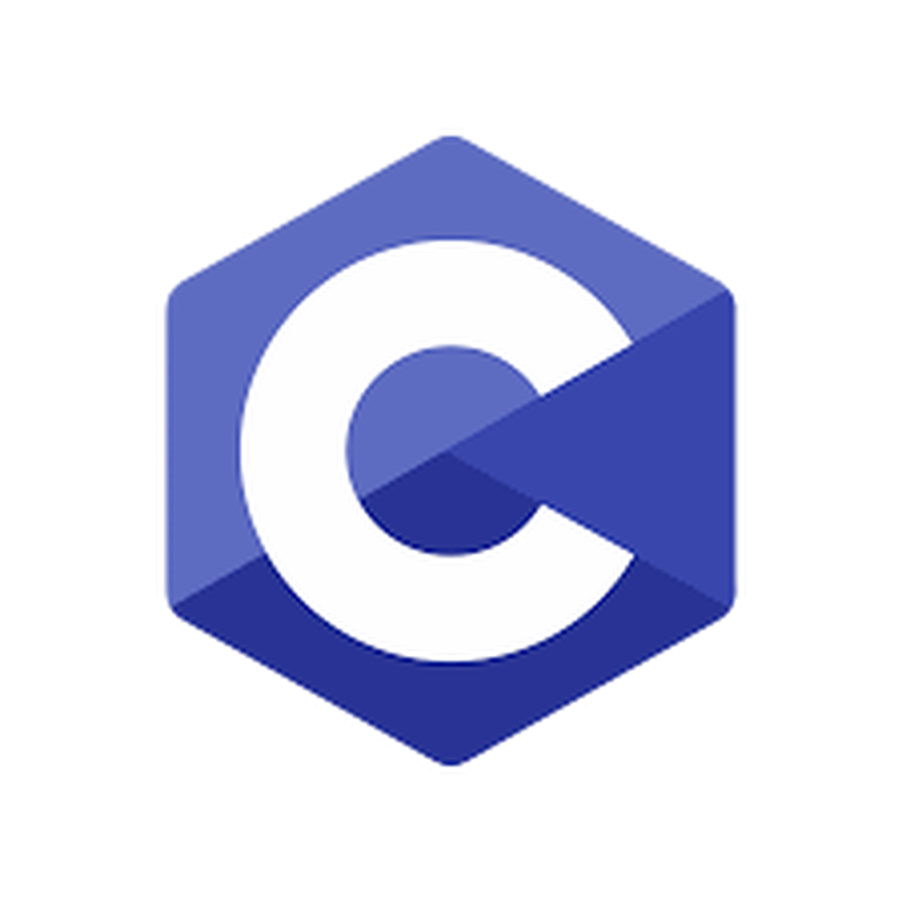
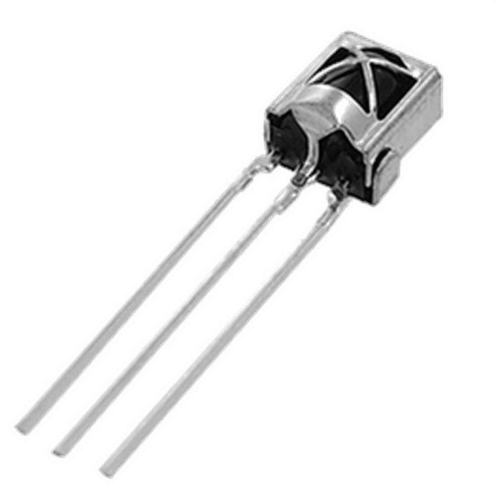
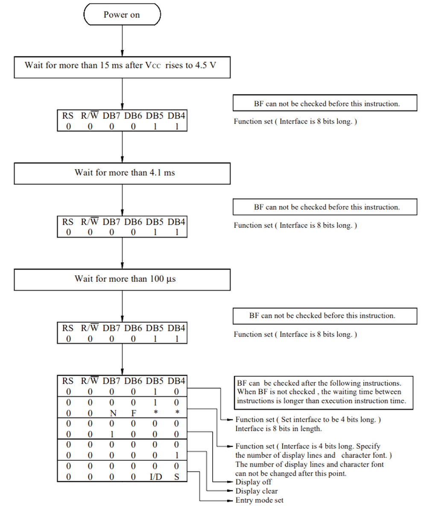
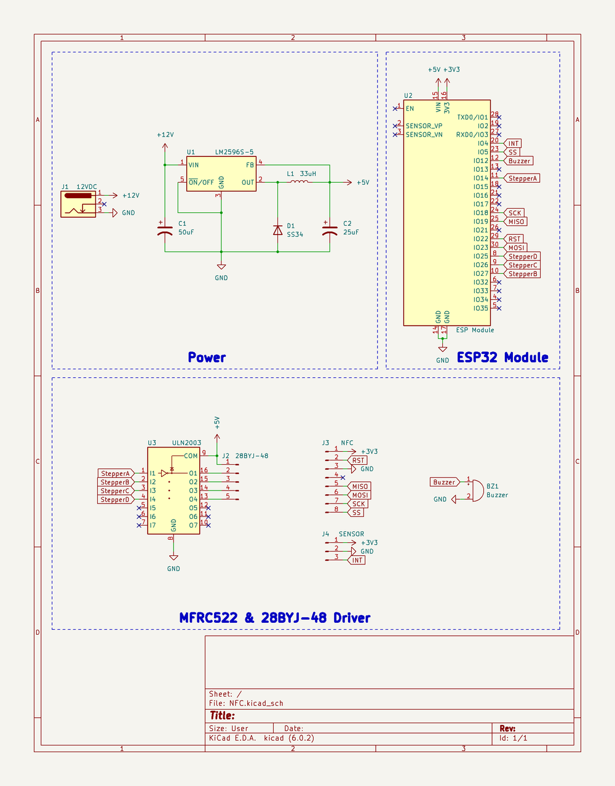
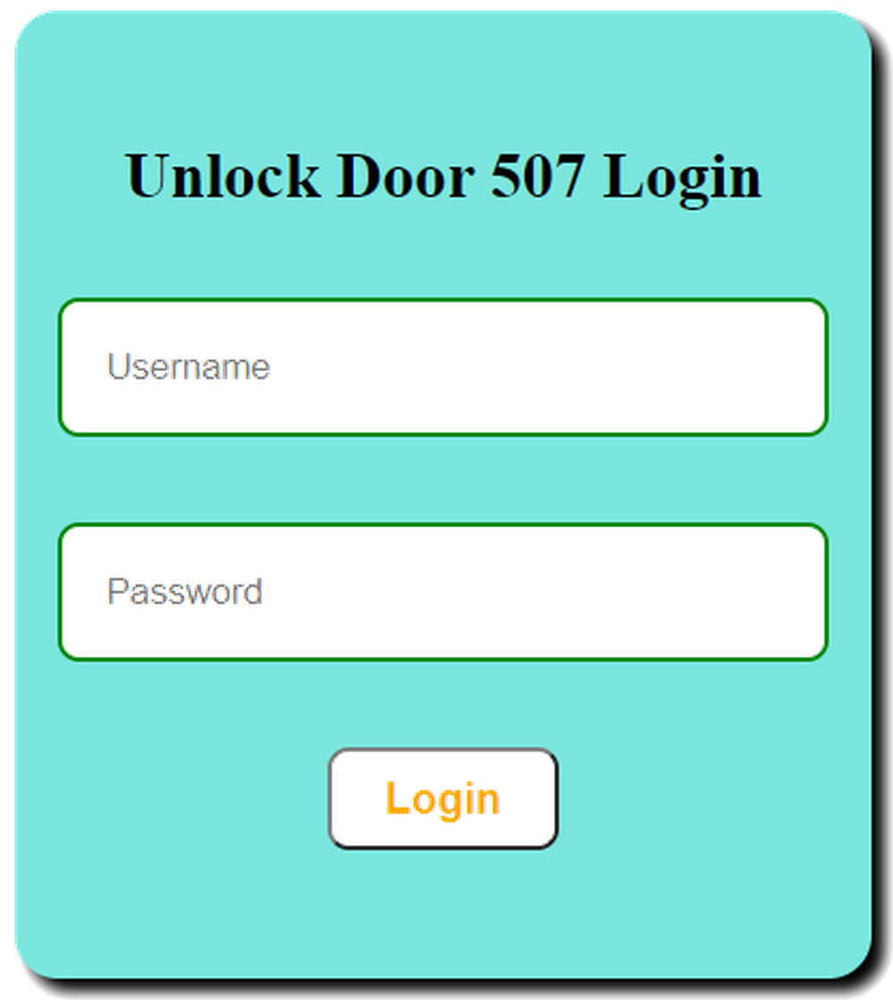
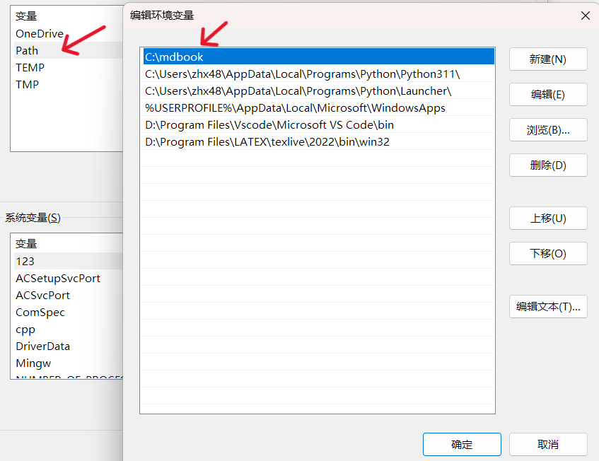

技术部培训文档
本文档内容主要由 markdown 写成，使用mdbook作为文档框架，网页部署及 CI 由卢老前辈完成。
本内容主要是用来给，南京工业大学校科协技术开发部同学培训学习使用。
本人能力有限，内容肯定存在错误和不足，欢迎大家指正。
Arduino 基础
1. Arduino 简介
Arduino 是一个开源的嵌入式硬件平台，用来供用户制作可交互式的嵌入式项目。此外 Arduino 作为一个开源硬件和开源软件的公司，同时兼有项目和用户社区。
Arduino 项目始于2003年，作为意大利伊夫雷亚地区伊夫雷亚交互设计研究所的学生项目，目的是为新手和专业人员提供一种低成本且简单的方法，以创建使用传感器与环境相互作用的设备执行器。适用于初学者爱好者的此类设备的常见示例包括传感器、简单机器人、恒温器和运动检测器。
Arduino 这个名字来自意大利伊夫雷亚的一家酒吧，该项目的一些创始人过去常常会去这家酒吧。
2. 为什么选择 Arduino
- Arduino 是全球非常流行的，基于AVR芯片，开源的，拥有庞大社区的一款单片机，通过 Arduino，你可以简化开发过程，DIY 各式各样的作品。
- Arduino 的拥有良好的生态，在软件方面拥有一款集写代码，烧录，调试于一体的Arduino IDE。剩去了各种配置，同时支持很多的第三方芯片和第三方库。
- Arduino uno 开发板廉价且功能齐全，适合做各种项目。
- 开发语言基于C++，具有很高的灵活性。
在这里我们也只对 Arduino 这个硬件和软件平台作简单的介绍，嵌入式学习肯定不是学习 Arduino，只是 arduino 很适合入门，不需要配置环境，使用非常之简便，很适合教学，也很适合做项目。
同时本专题内容进队 Arduino 的基础硬件做简单介绍，有关 Arduino 硬件的通信内容可以学习后面的章节(通信专题)
第一章——Arduino 和 Arduino IDE
1. Arduino 开发板
Arduino 至今拥有非常多的开发板，其中最为流行的就是 8 位的 AVR 单片机，当然 Arduino 也有 32 位单片机，下面是几款比较流行的开发板。
AVR 开发板：
| Arduino Uno | Arduino Nano | Arduino Mega |
|---|---|---|
 |
Arduino Nano 33 系列开发板：
| Arduino Nano 33 IOT | Arduino Nano 33 BLE | Arduino Nano 33 BLE Sense |
|---|---|---|
Arduino 还有一些工业级的开发板：
| Arduino MKR Vidor 4000 | Arduino MKR NB 1500 | Arduino Portenta H7 |
|---|---|---|
以及一批不再生产的退休开发板:
| Arduino Lilypad | Arduino ESPLORA | Arduino YUN Shiled |
|---|---|---|
2. Arduino Uno
Arduino Uno 可以说是 Arduino 开发板家族中最为流行的一款，可以说是每个 Arduino 初学者都会拥有的一款开发板，我们就以 Uno 板为例对 AVR 芯片硬件进行一些介绍。
下面是 Arduino Uno 的引脚图：
可以发现 Arduino Uno 有以下几个引脚分布：
- GPIO
- Digital(D0-D19) X 20
- ADC(A0-A5) X 6
- PWM(D3,D5,D6,D9,D10,D11) X 6
- UART(D0,D1) X 1
- I2C(SCL-A5,SDA-A4) X 1
- SPI(MOSI-D11,MISO-D12,SCK-D13,CS-10) X 1
- Power
- VIN
- GND
- 5V
- 3.3V
- AREF
Arduino 开发板有一个板载 LED，接在D13 引脚上，你也可以通过LED_BUITIN进行访问。另外还有两个 LED，分别是 RX 和 TX 的指示灯，当进行数据传输的时候对应的 LED 会闪烁。还有一个电源指示灯，通电后会点亮。
Arduino Uno 是一个 5V 的单片机，IO 口高电平时 5V，开发板上还有一个 3.3V 的电源接口给 3.3V 的设备进行供电。
如果你没有 5V 的电源，那你还可以通过 VIN 口输入 5-12V 的电压，Arduino 开发板上有一个 5V 的降压芯片。
3. Arduino IDE
Arduino IDE 是一个开源的软件，它使编写代码和上传到开发板变得容易。该工具不仅可以为所有的 Arduino 开发板开发和调试代码，而且社区也为很多其他平台开发了 Arduino 支持库，如 ESP32, STM32, Raspberry Pi Pico 等。
Arduino 2.x
截至目前 arduino IDE 已经更新到了 2.2.1版本，使用 electron 开发。和 1.x 相比速度更快，功能更强大，具有更现代的编辑器，它还加入了代码自动补全、代码导航、实时调试器等功能。
下载链接 2.2.1
下面是 Arduino IDE 2.2.1 的基本信息，关于该 IDE 的更多使用可以访问官方教程：Arduino IDE Guide
arduino IDE在2.0版本以后就支持登录了，可以在左下角使用你的邮箱或者github登录，而且有单独的在线编辑器，如果你需要移动开发的话会方便很多。
你可以在这里打开：arduino在线编辑器
设置
中文显示，详细输出，代码补全：我们可以通过file->perferences 偏好设置去更改一下，这些基础的设置会优化你的开发体验。
Arduino 1.x
由于有些开发者依然更喜欢前一代IDE的开发体验，所以本文档也保留了原来的下载链接。
下载链接 1.8.19
下面是 Arduino IDE 1.8.19 的基本信息。
第二章——第一个程序 Blink
1. Blink
几乎每一个学习单片机都要做的程序——点灯，下面是一个经典的点亮板载 LED 的 Arduino 程序：
int led = 13;
// the setup routine runs once when you press reset:
void setup() {
// initialize the digital pin as an output.
pinMode(led, OUTPUT);
}
// the loop routine runs over and over again forever:
void loop() {
digitalWrite(led, HIGH); // turn the LED on (HIGH is the voltage level)
delay(1000); // wait for a second
digitalWrite(led, LOW); // turn the LED off by making the voltage LOW
delay(1000); // wait for a second
}
学过 C/C++的应该对其中大部分都可以理解，这里值得一提的是，setup 函数中的代码仅会执行一次，而 loop 函数中的内容会不断地反复执行其中的代码。
同时，每一个 Ardino 程序都必须 setup 和 loop 这两个函数，Arduino 文件的后缀名是.ino。
里面还有三个大家没有见过的函数，这是 Arduino 内置的函数，更多的函数后面会介绍，我们先看这三个函数。
2. pinMode()函数
语法：
pinMode(pin,mode);
pin 参数：这个函数用来配置某个引脚的功能模式，在 AVR 单片机中可以设置 0-13，A0-A5。
mode 参数：AVR 单片机中有以下三种引脚模式模式：
- OUTPUT
- INPUT
- INPUT_PULLUP
在上面的例子中就是使用了 OUTPUT 模式，也就是输出模式，让该引脚可以输出 0V 或者 5V。
另外两种模式，我们后面章节再讲。
3. digitalWrite()函数
语法：
digitalWrite(pin,value);
在将引脚设置为输出模式后，我们就可以通过 digitalWrite()函数决定引脚的输出状态。
pin 参数：需要输出的引脚号。
value 参数：需要对应引脚输出的状态，value 只能是一个布尔值，也就是 0 和非 0。当 value 为 0 时，输出为 0V，当 value 为非 0 时，输出 5V。
所以digitalWrite(led, HIGH)就是输出 5V，点亮 LED，digitalWrite(led, LOW)就是输出 0V，熄灭 LED。在 Arduino 中，HIGH=1，LOW=0。
4. delay()函数
语法：
delay(ms);
delay()是一个用于延时的函数，它会使得程序在该处延时一定的时间。
ms 参数：参数就是延时时间，单位是毫秒，数据类型为unsigned long。在 Arduino 中，你还可以使用delayMicroseconds(us)达到微秒级的延时，数据类型依然为unsigned long。
所以在上面的代码中delay(1000)就是延时一秒钟。
因此上面的代码整个看下来就是先对 13 号引脚进行配置，然后再循环中，先点亮 LED，延时一秒钟，再熄灭 LED，再延时一秒钟，然后循环往复。
整个程序的流程示意图如下：
第三章——使用按钮
1. 按钮
按钮是一种非常常用的交互元器件，学会使用按钮很有必要。
下面是一个按钮接线图和使用按钮的一个程序，大家可以先看一下。
int button = 2;
int led = 13;
void setup() {
pinMode(button, INPUT);
pinMode(led, OUTPUT);
}
void loop() {
bool buttonStatus = digitalRead(button);
if (buttonStatus == HIGH) {
digitalWrite(led, HIGH);
}
else {
digitalWrite(led, LOW);
}
}
在这个程序中，我们使用了一个板载 LED 和一个按钮。可以观察到，当我们按下按钮时，LED 会被点亮，松开后就会熄灭。
在这里我们使用了pinMode()mode 参数的第二个可选值INPUT，即输入模式。
2. digitalRead()函数
语法：
digitalRead(pin);
该函数用来读取某个引脚的引脚状态。
参数 pin：Arduino 的引脚号。
在 5V 的单片机中，如果输入电压高于 3V则认为输入的是高电平，返回 1，否则认为是低电平，返回 0。
所以在 loop 循环中，我们通过bool buttonStatus = digitalRead(button)来读取按钮的状态。当按钮按下时，5V 的电压会通过按钮输入到 2 号引脚，单片机读取引脚状态，存储到buttonStatus中。如果是高电平，就点亮板载 LED，低电平就熄灭 LED。
3. 按钮进阶
加入我们需要按一下按钮，灯点亮，再按一下按钮，灯熄灭，这样我们应该如何编写呢。
其实最简单的方法就是在函数末尾增加一个延时，同时对代码进行稍加修改：
int button = 2;
int led = 13;
bool ledStatus = false;
void setup() {
pinMode(button, INPUT);
pinMode(led, OUTPUT);
}
void loop() {
bool buttonStatus = digitalRead(button);
if (buttonStatus) {
ledStatus = !ledStatus;
digitalWrite(led, ledStatus);
}
delay(200);
}
大家上传代码后可以试一下是不是可以初步达到目的。
可能有人会发现，有时候按钮按下去，灯没有反应，这是为什么？
那是由于 delay 这样的延时只是保证了每次运行之间多出 200ms 的延时，在这期间，单片机不能做任何事情，当然肯能会漏掉一次检测按钮的可能。
关键问题就是如何让这 200ms 期间，程序不被 block，能够不断检测按钮状态。
下面是一个很好的方法，大家可以参考一下：
int button = 2;
int led = 13;
bool ledStatus = false;
unsigned long lastTime;
void setup() {
pinMode(button, INPUT);
pinMode(led, OUTPUT);
}
void loop() {
bool buttonStatus = digitalRead(button);
// 按钮检测到被按下，且上一次按下和这次间隔超过200ms
if (buttonStatus && millis() - lastTime > 200) {
ledStatus = !ledStatus;
digitalWrite(led, ledStatus);
// 记录这次按下的时间
lastTime = millis();
}
}
在这里我们通过对比两次按钮按下的时间间隔，如果两次间隔超过 200ms 就认为这是两次不同按键动作，否则我们就忽略认为是一次动作，不进行操作。
大家可以发现，这个程序运行起来明显准确得多，每一次按钮按下都能检测到。
在这个程序中，我们使用了一个新的函数millis()，这也是 Arduino 内置的函数。
语法：
time = millis();
millis()记录了自程序启动后经过的时间，单位是 ms，返回的数据类型也是unsigned long。这个函数最多可以记录50 天的值，之后就会溢出变为 0。
Arduino 同时还有另一个记录时间的函数micros()，它的单位是 us，返回的数据类型同样也是unsigned long。大约70 分钟后，此数字将溢出变为 0。
在 Arduino Portenta 系列的开发板上，此功能在所有内核上的分辨率为1 微秒。在 16MHz 的 Arduino 开发板（如 Uno 和 Nano 上，此函数的分辨率为4 微秒，即返回的值始终是 4 的倍数）。在 8MHz 的 Arduino 开发板（例如 LilyPad）上，此函数的分辨率为8 微秒。
5. 按钮硬件消抖
其实按钮在按下和松开的过程中，按钮中的两个金属片并不是直接接触和松开的，在这过程中其实着抖动，也就是按钮在 0 和 1 之间抖动。
下面是按钮抖动的示意图：

那我们如何解决这个问题呢，比较常用的方法就是加入上拉电阻或者下拉电阻帮助消抖。也就是让按钮在没有被完全按下的时候保持高电平或者低电平。
下面是我们的按钮加入下拉电阻的接线图：

原理图如下：
由于下拉电阻的存在，当按钮还在波动的期间，IO 口都会被下拉电阻拉低，直到完全按下时，下拉电阻被短路，IO 口输入高电平。
同理有上拉电阻：

在大部分应用中，上拉电阻的使用更多一些。同时，现在的单片机大多都有内部上拉电阻，有的也有内部下拉电阻，这就是pinMode()mode 参数的第三个可选值INPUT_PULLUP。
因此上面的代码可以改成如下代码，同时使用软件和硬件消抖：
int button = 2;
int led = 13;
bool ledStatus = false;
unsigned long lastTime;
void setup() {
// 上拉电阻——硬件消抖
pinMode(button, INPUT_PULLUP);
pinMode(led, OUTPUT);
}
void loop() {
bool buttonStatus = digitalRead(button);
// 软件消抖——按钮检测到被按下，且上一次按下和这次间隔超过200ms
if (buttonStatus && millis() - lastTime > 200) {
ledStatus = !ledStatus;
digitalWrite(led, ledStatus);
// 记录这次按下的时间
lastTime = millis();
}
}
第四章——中断 Interrupt
1. 什么是中断
当单片机正在执行某程序时，如果突然出现意外情况，它就需要停止当前正在执行的程序，转而去处理意外情况，处理完后又接着执行原来的程序。这就是中断的作用。
下面是一个中断示意图：
在单片机中有硬件中断和软件中断：
- 硬件中断：当外部事件发生时发生，例如外部中断引脚将其状态从 LOW 变为 HIGH 或 HIGH 变为 LOW。
- 软件中断：根据软件的指令发生。例如定时器中断是软件中断。
下面我们介绍一下 Arduino 的硬件中断。
2. attachInterrupt()函数
在 Arduino 中使用中断非常简单，直接使用attachInterrupt()进行中断配置就可以了。
语法：
attachInterrupt(digitalPinToInterrupt(pin), ISR, mode);
pin 参数：在这里还不能直接使用中断引脚，你必须使用digitalPinToInterrupt()，将对应的引脚映射到对应的中断序号上，在某些单片机芯片上，引脚号就是中断号，但是还是比较建议使用此函数进行映射。
ISR 参数：ISR(Interrupt Service Routine)是中断发生时需要调用的函数名，该函数必须无返回值，无参数。
mode 参数：mode 是指能够触发中断的模式，有以下三种模式可供选择：
下面是 Arduino 部分开发板支持的外部中断引脚分布：
| Aduino Board | Pins |
|---|---|
| Uno,Nano,other 328-based board | 2,3 |
| Mega, Mega2560, MegaADK | 2,3,18,19,20,21 |
- LOW，引脚为低电平触发中断
- CHANGE，引脚电平改变时触发中断
- FALLING，引脚电平出现上升沿时触发中断
- RISING，引脚中断出现下降沿时触发中断
下面是一个在按钮中使用中断的例子，可以帮助大家理解中断的使用：
uint8_t led = 13;
uint8_t button = 2;
bool LEDStatus;
// 中断回调的任务函数
void buttonTask() {
LEDStatus = !LEDStatus;
if (LEDStatus)digitalWrite(led, HIGH);
else digitalWrite(led, LOW);
}
void setup() {
pinMode(led, OUTPUT);
pinMode(button, INPUT_PULLUP);
// 中断初始化
attachInterrupt(digitalPinToInterrupt(button), buttonTask, FALLING);
}
void loop() {
}
你可以通过detachInterrupt(pin)结束单片机对某个中断引脚的监视。
上面的代码中加入结束中断后如下：
uint8_t led = 13;
uint8_t button = 2;
bool LEDStatus;
unsigned long lastTime;
// 中断回调的任务函数
void buttonTask() {
LEDStatus = !LEDStatus;
if (LEDStatus)digitalWrite(led, HIGH);
else digitalWrite(led, LOW);
}
void setup() {
pinMode(led, OUTPUT);
pinMode(button, INPUT_PULLUP);
// 中断初始化
attachInterrupt(digitalPinToInterrupt(button), buttonTask, FALLING);
}
void loop() {
// 20s后结束对中断引脚buttons的监视
if (millis() - lastTime > 20000) {
detachInterrupt(digitalPinToInterrupt(button));
}
}
第五章——定时器 Timer
定时器
定时器也是一种中断，属于软件中断。它就像一个时钟，可以测量事件的时间间隔。每个单片机都有一个时钟（振荡器），比如在 Arduino Uno 中它是 16Mhz 的晶振。时钟频率越高，处理速度就越快。
计时器使用计数器，该计数器根据时钟频率以特定速度计数。在 Arduino Uno 中，单次计数需要 1/16000000 秒或 62 纳秒。这意味着 Arduino 每 62 纳秒从一条指令移动到另一条指令。
在 Arduino Uno 中有三个定时器，他们分别被使用到以下官方函数和库中：
- Timer0（8 位定时器）
- delay()
- delayMicroseconds()
- millis()
- micros()
- Timer1（16 位定时器）
- 伺服电机库<Servo.h>
- Timer2（8 位定时器）
- tone()函数
有很多支持的官方库可以帮助大家使用计时器，arduino-timer可以让你使用三个定时器，MsTimer2是仅使用了 Timer2 的一个第三方库，使用起来更加简单明了，我个人比较推荐大家使用。
下面是一个使用了 MsTimer2 的 Blink 程序。
#include <MsTimer2.h>
uint8_t led = 13;
boolean LEDStatus;
void ledTask() {
LEDStatus = !LEDStatus;
if (LEDStatus)digitalWrite(led, HIGH);
else digitalWrite(led, LOW);
}
void setup() {
pinMode(led, OUTPUT);
MsTimer2::set(1000, ledTask);
MsTimer2::start();
}
void loop() {
}
有关手动配置 Arduino Uno 定时器的内容这里不做详细介绍，有兴趣的可以参考以下文章：Arduino Timer Tutorial
第六章——脉冲宽度调制 PWM
1. 什么是 PWM
PWM(Pulse Width Modulation)指的是脉冲宽度调制，它是一种可以用于控制 LED 亮度、直流电机速度控制、控制伺服电机或必须通过数字方式获得模拟输出的技术。
Arduino 数字引脚只能输出 5V（当变为高电平时）或 0V（当变为低电平时），并且输出是方波信号。因此，如果我们想调暗 LED，我们无法从数字引脚获得 0 到 5V 之间的电压，但我们可以改变信号的 ON 和 OFF 时间。如果我们足够快地改变 ON 和 OFF 时间，那么 LED 的亮度就会改变。
下面是一些与 PWM 相关的术语:
- \(T_{on}\)：信号为高电平的时间
- \(T_{off}\)：是信号为低电平的时间
- 周期：是开启时间和关闭时间的总和
- 占空比：它是在一段时间内信号为高电平的时间百分比
因此，在 50%占空比和 1Hz 频率下，LED 将在半秒内保持高电平，另外半秒内保持低电平。如果我们将频率提高到 50Hz（每秒开启和关闭 50 次），那么人眼将看到 LED 以一半亮度发光。
下面是 PWM 原理的示意图：
2. 使用 PWM
在 Arduino Uno 开发板上，可以使用analogWrite()输出 PWM。
语法：
analogWrite(pin, value);
pin 参数：你可以使用引脚号前有~标记的引脚作为 PWM 的输出引脚，也就是3，5，6，9，10，11六个引脚。其中，3，9，10，11 号引脚默认的输出频率是490Hz，5，6 号引脚的默认输出频率是980Hz。
value 参数：Arduino 默认所有模拟输出的分辨率是 8 位，也就是你可以输出 0-255。某些单片机芯片支持更高的 12 位/16 位分辨率，你可以通过analogWriteResolution()来改变 PWM 的分辨率。更多相关详细信息可以参考以下内容：analogWriteResolution。
下面是一个使用 PWM 实现呼吸灯的实例：
int led = 3;
// 逐渐变亮
void fadedOn(unsigned int time, int increament) {
for (byte value = 0 ; value < 255; value += increament) {
analogWrite(led, value);
delay(time / (255 / increament));
}
}
//逐渐变暗
void fadedOff(unsigned int time, int decreament) {
for (byte value = 255; value > 0; value -= decrement) {
analogWrite(led, value);
delay(time / (255 / increament));
}
}
void setup() {
pinMode(led, OUTPUT);
}
void loop() {
fadedOn(1000, 5);
fadedOff(1000, 5);
}
3. 调整 PWM 的频率
由于 Arduino 在 3，9，10，11 号引脚默认的输出频率是 490Hz，5，6 号引脚的默认输出频率是 980Hz，尤其是通过电机驱动板调节电机速度的时候，电机会发出嗡嗡的声音，就是由于频率太低导致的，下面是可以使用的调整 PWM 频率的寄存器操作。
适用于 3，11 号引脚：
TCCR2B = TCCR2B & B11111000 | B00000001; // for PWM frequency of 31372.55 Hz
TCCR2B = TCCR2B & B11111000 | B00000010; // for PWM frequency of 3921.16 Hz
TCCR2B = TCCR2B & B11111000 | B00000011; // for PWM frequency of 980.39 Hz
TCCR2B = TCCR2B & B11111000 | B00000100; // for PWM frequency of 490.20 Hz (The DEFAULT)
TCCR2B = TCCR2B & B11111000 | B00000101; // for PWM frequency of 245.10 Hz
TCCR2B = TCCR2B & B11111000 | B00000110; // for PWM frequency of 122.55 Hz
TCCR2B = TCCR2B & B11111000 | B00000111; // for PWM frequency of 30.64 Hz
适用于 9，10 号引脚：
TCCR1B = TCCR1B & B11111000 | B00000001; // for PWM frequency of 31372.55 Hz
TCCR1B = TCCR1B & B11111000 | B00000010; // for PWM frequency of 3921.16 Hz
TCCR1B = TCCR1B & B11111000 | B00000011; // for PWM frequency of 490.20 Hz (The DEFAULT)
TCCR1B = TCCR1B & B11111000 | B00000100; // for PWM frequency of 122.55 Hz
TCCR1B = TCCR1B & B11111000 | B00000101; // for PWM frequency of 30.64 Hz
适用于 5，6 号引脚：
TCCR0B = TCCR0B & B11111000 | B00000001; // for PWM frequency of 62500.00 Hz
TCCR0B = TCCR0B & B11111000 | B00000010; // for PWM frequency of 7812.50 Hz
TCCR0B = TCCR0B & B11111000 | B00000011; // for PWM frequency of 976.56 Hz (The DEFAULT)
TCCR0B = TCCR0B & B11111000 | B00000100; // for PWM frequency of 244.14 Hz
TCCR0B = TCCR0B & B11111000 | B00000101; // for PWM frequency of 61.04 Hz
第七章——模数转换 ADC
AVR 芯片内部自带有 10 位的模数转换器，能够读取输入的模拟电压值，将其转换为数字值。
你可以通过analogRead()函数读取输入电压的数字值。
语法：
analogRead(pin);
pin 参数：在 Arduno Uno 开发板上，你可以使用A0-A5当作模拟输入的引脚，而在 Arudino Nano 开发板上你可以使用A0-A7这 8 个引脚。
在 Arduino 中，默认的分辨率为 10 位，也就是可以将 0-5V 分割 1024 份。而某些单片机芯片支持 12 位的分辨率，你可以使用analogReadResolution()调整这个分辨率。更多相关详细信息可以参考以下内容：analogReadResolution。
下面是一个使用 ADC 调整板载 LED 闪烁频率的程序：
int led = 13;
int potentiometer = A0;
int delayTime = 100;
void setup() {
pinMode(led, OUTPUT);
pinMode(potentiometer, INPUT);
}
void loop() {
int value = analogRead(potentiometer);
// 将读取的值映射在10-1000之间，也就是10ms-1000ms
delayTime = map(value, 0, 1023, 10, 1000);
digitalWrite(led, HIGH);
delay(delayTime);
digitalWrite(led, LOW);
delay(delayTime);
}
第八章——串口通信 UART
1. Arduino 的 Serial
Arduino AVR 开发板只有一个 UART，直接和 USB 相连。当然，你也可以通过使用 RX(D0)和 TX(D1)进行串口通信，但是，同时只能使用一个，任意一处被占用都无法正常通信。
在 mega 板上，一共有 4 个串口，默认的 UART 和 USB 相连，因此你除了可以使用Serial之外，还可以使用Serial1，Serial2，Serial3。
2. begin
语法：
Serial.begin(speed);
Serial.begin(speed, config);
speed 参数：设置波特率，常用的波特率有 300，600，1200，2400，4800，9600，14400，19200，28800，38400，57600，115200 等。
config 参数：Arduino 默认设置是一个起始位，一个终止位，没有校验位，你可以通过第二个可选参数设置进行设置，下面是可供选择的参数：
- SERIAL_5N1
- SERIAL_6N1
- SERIAL_7N1
- SERIAL_8N1 (the default)
- SERIAL_5N2
- SERIAL_6N2
- SERIAL_7N2
- SERIAL_8N2
- SERIAL_5E1: even parity
- SERIAL_6E1
- SERIAL_7E1
- SERIAL_8E1
- SERIAL_5E2
- SERIAL_6E2
- SERIAL_7E2
- SERIAL_8E2
- SERIAL_5O1: odd parity
- SERIAL_6O1
- SERIAL_7O1
- SERIAL_8O1
- SERIAL_5O2
- SERIAL_6O2
- SERIAL_7O2
- SERIAL_8O2
3. print/println
语法：
Serial.print(val);
Serial.print(val, format);
val 参数：需要输出的值，该值可以是 int，long，flaot，double，char，String 等等。
format 参数：需要输出的格式，可以是以下四个参数：
- BIN 输出二进制
- OCT 输出八进制
- DEC 输出十进制
- HEX 输出十六进制
如果输出的是浮点数，第二个可选参数可以用来限制输出的小数位。
下面是 print 的一些实例：
| 语句 | 输出结果 |
|---|---|
| Serial.print(78,BIN) | 1001110 |
| Serial.print(78, OCT) | 116 |
| Serial.print(78, DEC) | 78 |
| Serial.print(78, HEX) | 4E |
| Serial.print(1.23456, 2) | 1.23 |
pintln 和 print 用法基本相同，只是 println 会在结束输出后自动换行。
下面是一个使用串口输出电位器模拟值的程序：
int potentiometer = A0;
void setup() {
Serial.begin(9600);
pinMode(potentiometer, INPUT);
}
void loop() {
int value = analogRead(potentiometer);
Serial.println(value);
delay(100);
}
4. available
语法：
Serial.available();
该函数返回值为 1 表示当前串口缓存区有数据可以读取，返回值为 0 表示缓存区没有数据。
5. read
语法：
Serial.read();
读取串口缓存区的一个字节。
下面是读取串口输入的内容，再以不同格式输出的一个实例：
void setup() {
Serial.begin(9600);
}
void loop() {
if (Serial.available()) {
uint8_t value = Serial.read();
Serial.println(value, BIN);
Serial.println(value, OCT);
Serial.println(value, DEC);
Serial.println(value, HEX);
}
}
有关 Arduino 串口通信的其他函数可以参考以下内容：Arduino Serial Function Lists
这里只对 Arduino 的串口通信进行简单介绍，有关 UART 的通信机制及更多内容，请参考后面的章节(通讯专题/UART)
第九章——单片机的存储器和 EEPROM
1. 单片机的存储空间
一般单片机的存储空间可以用下图表示：
单片机中SRAM(Static Random-Access Memory)，主要是用于存储程序运行过程中的变量，因为 RAM 拥有读写速度快的优点，但是 RAM 的数据在掉电后会丢失。
EEPROM(Electrically Erasable Programmable Read-Only Memory)，也称\(E^2PROM\)，指的是电可擦可编程只读存储器，主要用于存储重要的用户数据，读写速度比较慢。
EEPROM 的主要特点如下：
- 擦除区域小，一开始只有一个字节，后来支持多字节页擦除
- 有限的擦写周期，一般是 1000,000 次
- 能够长期存储数据，掉电后数据也不会丢失
单片机中的 EEPROM 的由来和发展非常有意思，可以用下面的图表示：
Flash 和 EEPROM 在某些方面比较相似。因为 Flash 就是由 EEPROM 发展而来，支持大擦除块，一般是512 字节甚至更高，EEPROM 不仅擦除块小，且每次擦除都需要大概 3.3ms 左右，因此，Flash 更适合用来做为程序储存空间。Flash 和 EEPROM 一样，掉电后数据不会丢失，属于Non-Volatile Memory，因此在一些没有 EEPROM 的单片机上，可以使用 Flash 代替 EEPROM，比如 ESP32。但是 Flash 的擦写周期要比 EEPROM 短，通常在10,000次。
每次我们编译 Arduino 的代码是，窗口下的终端显示了 SRAM 和 FLASH 的使用情况，也就是变量存储空间和程序存储空间。
2. Arduino 的 EEPROM 库
Arduino 的 AVR 单片机的 ATmega328 芯片，拥有1024 字节的 EEPROM，ATmega168 和 ATmega8 拥有512 字节的 EEPROM，而 ATmega1280 和 ATmega2560 拥有4096 字节的 EEPROM。
所以我们经常使用的 Arduino Uno 拥有 1KB 的 EEPROM。
Flash 和 SRAM 大家日常都在使用，下面我们学习如何通过 Arduino 官方的 EEPROM 库读写 EEPROM：
2.1 read()
语法：
EEPROM.read(address);
该函数用于读取 EEPROM 中一个字节的数据，未写过的区域读取的值为 255。
参数 address：EEPROM 中的地址，对于 Uno，就是 0-1023。
2.2 write()
语法：
EEPROM.write(address, value);
该函数用于向 EEPROM 写入一个字节的数据。
参数 address：EEPROM 中的地址，对于 Uno，就是 0-1023。
参数 value：需要写入的数据，数据类型为uint8_t。
2.3 update()
语法：
EEPROM.update(address, value);
用法类似于EEPROM.write(address, value)，也是向 EEPROM 写入一个字节的数据，只是该函数在写入前会检查写入值和已有值是否相同，不同才会写入。那是因为 EEPROM 有着有限次数的擦写周期，因此建议使用update代替write。
参数 address：EEPROM 中的地址。
参数 value：需要写入的数据，数据类型为uint8_t。
下面是一个使用了 update 和 read 的实例，供大家参考：
#include <EEPROM.h>
void setup() {
uint8_t data = 123;
int address = 0;
// Wait open serial monitor
Serial.begin(115200);
while (!Serial);
// Write data to EEPROM
Serial.print("Write data to EEPROM: ");
EEPROM.update(data, address);
// Read data from EEPROM
Serial.print("\nRead data from EEPROM: ");
data = EEPROM.read(address);
Serial.println(data, 3);
}
void loop() {
}
2.4 put()
语法：
EEPROM.put(address, data);
作用类似于 write 函数，也是向 EEPROM 写入数据，但该函数支持写入原始的数据类型，不局限于一个字节的数据，可以是float、int、String等。
参数 address：EEPROM 中的地址。
参数 data:：需要写入的数据，可以是原始的数据类型。
2.5 get()
语法：
EEPROM.get(address, data);
作用类似于 read，用于从 EEPROM 读取数据，但该函数支持读取原始的数据类型，不局限于一个字节的数据，可以是float、int、String等。
参数 address：EEPROM 中的地址。
参数 data：需要读取的数据类型。
下面是一个使用了 put 和 get 的实例，供大家参考：
#include <EEPROM.h>
void setup() {
float data = 123.45;
int address = 0;
// Wait open serial monitor
Serial.begin(115200);
while (!Serial);
// Write float to EEPROM
Serial.print("Write float to EEPROM: ");
EEPROM.put(data, address);
// Read float from EEPROM
Serial.print("\nRead float from EEPROM: ");
EEPROM.get(address, data);
Serial.println(data, 3);
}
void loop() {
}
C 语言简介
C 是一种通用的编程语言，广泛用于系统软件与应用软件的开发。于 1969 年至 1973 年间，为了移植与开发 UNIX 操作系统，由丹尼斯·里奇与肯·汤普逊，以 B 语言为基础，在贝尔实验室设计、开发出来。
C 语言具有高效、灵活、功能丰富、表达力强和较高的可移植性等特点，在程序设计中备受青睐，成为最近 25 年使用最为广泛的编程语言。目前，C 语言编译器普遍存在于各种不同的操作系统中，例如 Microsoft Windows、macOS、Linux、Unix 等。C 语言的设计影响了众多后来的编程语言，例如 C++、Objective-C、Java、C#等。
当前最新的 C 语言标准为 C18 ，在它之前的 C 语言标准有 C17、C11…C99 等。
在这里我们也是只做简单的讲解和介绍，更多内容大家可以参考其他书籍和网站。
第一章——C 语言基本语法
1. 语句
C 语言的基本单位是语句，每条语句必须以;结束。它表明一个逻辑实体的结束。
多条语句在某些情况下，可以用,隔开合并成一条语句。
#include <stdio.h>
int main() {
int input, ouput;
printf("Input your age:");
scanf("%d", &input);
ouput = input;
printf("Your age is:%d", ouput);
return 0;
}
2. 注释
注释是用来给代码添加解释，让自己或者其他人方便阅读或者方便自己今后修改代码，注释会被编译器忽略，对代码的运行没有影响。
C 语言注释有两种：
//单行注释
//单行注释
/*
多行注释
多行注释
多行注释
*/
3. 关键字
关键字是 C 语言预定义的，对编译器有特殊意义的保留字，这些关键字是不能被用来当作变量名或者函数名等。
| 关键字 | 作用 |
|---|---|
| int | 声明整形变量或函数 |
| float | 声明浮点型变量或函数返回值类型 |
| long | 声明长整型变量或函数返回值类型 |
| void | 声明函数无返回值或无参数 |
| if | 条件判断语句 |
| else | 条件分支否定语句 |
| for | 一种循环语句 |
| while | 一种循环语句 |
| return | 子程序返回语句 |
| define | 定义一个标识符来表示一个常量 |
4. 函数
函数需要返回值，需要函数名，需要参数，C 语言的 main 函数就是一个标准的函数。
#include <stdio.h>
int main(void) {
printf("Hello world!");
return 0;
}
多条语句可以用函数进行封装，封装可以简化代码，方便调用。
#include <stdio.h>
void printHelloWorld() {
printf("Hello world!");
}
int main() {
printHelloWorld();
return 0;
}
5. 预处理(#)
预处理的特点：
- 为了区分一般的语句，预处理命令行都必须以#开始，结尾不加分号
- 预处理命令可以放在程序中的任意位置
- 在程序中凡是以#开始的语句都是预处理命令行
预处理的作用：
- 宏定义：#define
- 文件包含:#include <stdio.h>
- 条件编译:#ifdef #define #endif
第二章——数据类型
1. 什么是数据类型
C 语言的数据类型指的是某个数据元素在编译器中所占的存储空间，我们要用不同的数据类型来表示不同的数据，数据类型就是定义数据的大小。
数据类型主要分为整型，浮点型，其他。
常用的数据类型有： int，unsigned int，short，unsigned short，long，unsigned long，char，unsigned char，flaot，double，long double，void，其他。
2. 整数类型
| 数据类型 | 字节数 | 大小 |
|---|---|---|
| char | 1 | -127-128 或 0-255 |
| unsigned char | 1 | 0-255 |
| int | 2 | -32768-32767 |
| unsigned int | 2 | 0-65535 |
| short | 2 | -32768-32767 |
| unsigned short | 2 | 0-65535 |
| long | 4 | -2147483648 ~ 2147483647 |
| unsigned long | 4 | 0-4294967295 |
3. 浮点类型
| 数据类型 | 字节数 | 精度 |
|---|---|---|
| float | 4 | 6 位有效 |
| double | 8 | 15 位有效 |
| long double | 16 | 19 位有效 |
4. 其他类型
- void 类型
- 指针类型(*)
- 数组类型([])
- 结构类型(struct)
- 共用体类(union)
- 函数类型
5. typedef
使用 typedef 重新定义一个数据类型的名称，如：
typedef int BOOL;
#define TRUE 1
#define FALSE 0
BOOL isDisplay = TRUE;
第三章——变量和常量
1. 什么是变量和常量
常量是固定值，在程序执行期间不会改变。
变量是指指向某一个存储空间的名称，而存储空间我们用数据类型来定义，因此定义一个变量就是定义了一个可操作存储空间。
2. 整形常量
0x 或 0X 表示十六进制，0 表示八进制，不带前缀则默认表示十进制。
整数常量也可以带一个后缀，后缀是 U 和 L 的组合，U 表示无符号整数（unsigned），L 表示长整数（long）。后缀可以是大写，也可以是小写，U 和 L 的顺序任意。
212 /* 合法的 */
215u /* 合法的 */
0xFeeL /* 合法的 */
078 /* 非法的：8 不是八进制的数字 */
032UU /* 非法的：不能重复后缀 */
85 /* 十进制 */
0213 /* 八进制 */
0x4b /* 十六进制 */
30 /* 整数 */
30u /* 无符号整数 */
30l /* 长整数 */
30ul /* 无符号长整数 */
3. 浮点型常量
当使用指数形式表示时， 必须包含小数点、指数，或同时包含两者，默认的浮点类型是 double 类型。
带符号的指数是用 e 或 E 引入的整数常量也可以带一个后缀，后缀是 U 和 L 的组合，U 表示无符号整数（unsigned），L 表示长整数（long）。后缀可以是大写，也可以是小写，U 和 L 的顺序任意。
3.14159 /* 合法的 */
314159E-5L /* 合法的 */
510E /* 非法的：不完整的指数 */
210f /* 非法的：没有小数或指数 */
.e55 /* 非法的：缺少整数或分数 */
4. 字符常量
字符常量是括在单引号中，如：‘x‘，’X’。
转义字符指无法输出打印，或者会引起歧义的字符，如:
| 转义字符 | 字符含义 |
|---|---|
| \n | 换行 |
| \t | 水平制表符 |
| \’ | 单引号 |
| \“ | 双引号 |
| \\ | 斜杠 |
5. 定义变量的命名规范
- 变量可以由字母、数字和下划线字符组成，必须以字母或下划线开头
- C 语言区分大小写，Print 和 print 是两个不同的变量
- 定义变量是可以使用=给变量赋初值
- 定义相同类型的变量时，可以连续定义而不需要定义数据类型
6. 定义一个常量(象征性)
使用 define，如：
#define LED_PIN 6
#define NUM_LEDS 30
#define LED_TYPE WS2812
#define COLOR_ORDER GRB
使用 const，如：
const uint8_t LED_PIN = 6;
const uint8_t NUM_LEDS = 30;
第四章——运算符
1. 什么是运算符
运算符是一种告诉编译器执行特定的数学或逻辑操作的符号。
通常运算符分以下几类：
- 算术运算符
- 关系运算符
- 逻辑运算符
- 赋值运算符
- 位运算符
- 其他运算符
2. 算术运算符
| 运算符 | 描述 | 示例 |
|---|---|---|
| + | 将两个操作数相加 | int a = 5+6; |
| - | 将两个操作数相减 | int a = 5-6; |
| * | 将两个操作数相乘 | int a = 5*6; |
| / | 将两个操作数相除 | int a = 5/2; float b = 5/2.0; |
| % | 取模运算 | int a = 5%2; |
| ++ | 将自身体的值加 1 | int a = 12;a++;++a; |
| – | 将自身体的值减 1 | int a =12;a–;–a; |
3. 关系运算符
| 运算符 | 描述 | 示例 |
|---|---|---|
| == | 判断两个操作数是否相等 | bool result = (4==5); |
| != | 判断两个操作数是否不相等 | bool result = (4==5); |
| > | 判断一个操作数是否大于另一个 | bool result = (4>5); |
| < | 判断一个操作数是否小于另一个 | bool result = (4<5); |
| >= | 判断一个操作数是否大于等于另一个 | bool result = (4>=5); |
| <= | 判断一个操作数是否小于等于另一个 | bool result = (4<=5); |
4. 逻辑运算符
| 运算符 | 描述 | 示例 |
|---|---|---|
| && | 且运算 | bool result = (4==5)&&(4<3); |
| || | 或运算 | bool result = (4==5) || (4<3); |
| ！ | 非运算 | bool result = !(4>5); |
5. 赋值运算
| 运算符 | 描述 | 示例 |
|---|---|---|
| = | 右操作数赋值给左操作数 | int a = 12; a=6; |
| += | 右操作数加上左操作数赋值给左操作数 | int a = 12; a+=6; |
| -= | 右操作数减去上左操作数赋值给左操作数 | int a = 12; a-=6; |
| *= | 右操作数乘上左操作数赋值给左操作数 | int a = 12; a*=6; |
| /= | 右操作数除以左操作数赋值给左操作数 | int a = 12; a/=6; |
| %= | 右操作数取模左操作数赋值给左操作数 | int a = 12; a%=6; |
6. 其他运算符
| 运算符 | 描述 | 示例 |
|---|---|---|
| sizeof | 获取某一个变量所占存储空间的字节数 | int a;int b = sizeof(a); |
| ? | 条件表达式 | int a = (4>5)?4:5; |
| & | 返回变量的地址 | int a =12;int b =&a; |
| * | 指针变量指向一个变量 | int a = 12; int *b=*a; |
7. 运算符优先级和结合性
在表达式中，优先级较高的先于优先级较低的进行运算。
而在一个运算量两侧的运算符优先级相同时，则按运算符的结合性所规定的结合方向处理，即左结合和右结合。

第五章——条件判断 if 和 switch
1. 判断条件的真假
条件判断，即为判断一个或者多个事件的真假性，然后执行对应的语句。
在 C 语言中，把任何非零和非空的值假定为true，把零或 null假定为false。
下面是一个真假值表：
| 真 | 假 |
|---|---|
| 1 | 0 |
| true | false |
| 2 | !2 |
| 3<4 | 3>4 |
C 语言提供了以下类型的判断语句。
| 语句 | 描述 |
|---|---|
| if | 一个 if 语句 由一个布尔表达式后跟一个或多个语句组成。 |
| if/else | 一个 if 语句 由一个布尔表达式后跟一个或多个语句组成。 |
| switch | 一个 switch 语句允许测试一个变量等于多个值时的情况。 |
2. if 语句
只要 if()中条件判断为真，则执行{}中的代码块，没有{}则仅执行 if 后的一条语句。
语法：
if(/*布尔表达式*/)
{
// 布尔表达式为真时执行的语句
}
3. if/else 语句
同 if 语句一样，条件成立执行 if 后的代码块，为假执行 else 后的代码块。
语法：
if(/*布尔表达式*/)
{
// 如果布尔表达式为真将执行的语句
}
else
{
// 如果布尔表达式为假将执行的语句
}
下面是一个判断输入的年龄是否是未成年的实例
#include <stdio.h>
int main() {
int input;
printf("Input your age:");
scanf("%d", &input);
if (input < 18) {
printf("You're an underage!");
} else {
printf("Congratulations! You're already an adult!");
}
return 0;
}
4. 嵌套 if/else if/else
我们可以在 if/else 后添加另外一个 if，添加更多的判断语句。
语法：
//条件判断一
if(/*布尔表达式*/)
{
// 如果布尔表达式为真将执行的语句
}
//条件判断二
else if(/*布尔表达式*/)
{
// 如果布尔表达式为真将执行的语句
}
//条件判断三
else
{
// 如果布尔表达式为假将执行的语句
}
试通过 C 语言编程完成以下个人所得税的问题：
假设国家对个人收入调节税是按这样的标准进行的:
起征点是1000元,1000-2000元为5%,2000-3000元为10%,
3000-5000元为15%,5000元以上为20%.
通过编程输入工资,计算实际工资。
参考代码如下：
#include <stdio.h>
int main() {
float salary, tax;
printf("Input your salary:");
scanf("%f", &salary);
if (salary < 1000) tax = 0;
else if (salary < 2000) tax = 0.05;
else if (salary < 3000) tax = 0.1;
else if (salary < 5000) tax = 0.15;
else tax = 0.2;
salary = salary * (1 - tax);
printf("Your final salary is %.2f", salary);
return 0;
}
5. switch 语句
switch 语句的功能和 if/else if/else 相像。
语法：
switch (expression)
{
case constant - expression:
statement(s);
break; /* 可选的 */
case constant - expression:
statement(s);
break; /* 可选的 */
/* 您可以有任意数量的 case 语句 */
default: /* 可选的 */
statement(s);
}
- 在一个 switch 中可以有任意数量的 case 语句。每个 case 后跟一个要比较的值和一个冒号。
- case 的 constant-expression 必须与 switch 中的变量具有相同的数据类型，且必须是一个常量。
- 当被测试的变量等于 case 中的常量时，case 后跟的语句将被执行，直到遇到 break 语句为止。
- 当遇到 break 语句时，switch 终止，控制流将跳转到 switch 语句后的下一行。
- 不是每一个 case 都需要包含 break。如果 case 语句不包含 break，控制流将会 继续 后续的 case，直到遇到 break 为止。
- 一个 switch 语句可以有一个可选的 default case，出现在 switch 的结尾。default case 可用于在上面所有 case 都不为真时执行一个任务。default case 中的 break 语句不是必需的。
- 相同的标签不能出现两次。
大家可以试着将上面的薪资问题改成 switch，以增进对 switch 的认识。
参考代码如下：
#include <stdio.h>
int main() {
float salary, tax;
printf("Input your salary:");
scanf("%f", &salary);
switch ((int)(salary / 1000)) {
case 0: tax = 0; break;
case 1: tax = 0.05; break;
case 2: tax = 0.1; break;
case 3:
case 4: tax = 0.15; break;
default: tax = 0.3; break;
}
salary = salary * (1 - tax);
printf("Your final salary is %.2f", salary);
return 0;
}
6. 小测试
- 输入一个整数，判断该数是偶数还是奇数。
- 输入三个整数，求出三个数中的最大值。
第六章——循环 while 和 do/while
1. while
只要给定的条件为真，while 循环语句会重复执行其后代码块中的内容。
语法：
while(/*布尔表达式*/)
{
// 如果布尔表达式为真将执行的语句
}
在这里，while 循环的关键点是循环可能一次都不会执行。当条件为 false 时，会跳过循环主体，直接执行紧接着 while 循环的下一条语句。
下面是一个输出 0-10 中偶数的实例：
#include <stdio.h>
int main() {
int count = 0;
while (count < 10) {
// 如果是偶数则输出该数
if (count % 2 == 0)
printf("%d\n", count);
count++;
}
return 0;
}
2. 循环控制语句
在 while 循环中我们可以通过其他语句来控制循环的过程。
C 语言中有以下三个循环控制语句：
| 控制语句 | 描述 |
|---|---|
| break | 终止循环或 switch 语句 |
| continue | 告诉一个循环体立刻停止本次循环，重新开始下次循环 |
| goto | 将控制转移到被标记的语句，不建议在程序中使用 goto 语句 |
如果在上面的代码中加入 break，则可以改成如下代码：
#include <stdio.h>
int main() {
int count = 0;
while (1) {
if (count % 2 == 0)
printf("%d\n", count);
count++;
if (count >= 10)
break;
}
return 0;
}
如果在上面的代码中加入 continue，则可以改成如下代码：
#include <stdio.h>
int main() {
int count = 0;
while (count < 10) {
if (count % 2 == 1) {
count++;
continue;
} else
printf("%d\n", count);
count++;
}
return 0;
}
3. do/while 语句
do/while 循环是在循环的尾部检查它的条件。
do/while 循环与 while 循环类似，但是 do/while 循环会确保至少执行一次循环。
语法：
do
{
statement(s);
}while( condition );
将上面的例子改成 do/while 语句后，代码如下：
#include <stdio.h>
int main() {
int count = 0;
do {
if (count % 2 == 0)
printf("%d\n", count);
count++;
} while (count < 10);
return 0;
}
4. 小测试
- 输入一个整数，计算出该整数的位数。
- 输入一个整数，逆向输出该数，如输入 123456，反向输出 654321.
第七章——循环 for
1. for 语句
for 循环可以方便地执行指定次数的循环。
语法：
for ( init; condition; increment )
{
statement(s);
}
- init 会首先被执行，且只会执行一次。这一步允许声明并初始化任何循环控制变量。也可以不在这里写任何语句，只要有一个分号出现即可。
- 接下来，会判断 condition。如果为真，则执行循环主体。如果为假，则不执行循环主体，且控制流会跳转到紧接着 for 循环的下一条语句。
- 接下来，会判断 condition。如果为真，则执行循环主体。如果为假，则不执行循环主体，且控制流会跳转到紧接着 for 循环的下一条语句。
- 条件再次被判断。如果为真，则执行循环，这个过程会不断重复（循环主体，然后增加步值，再然后重新判断条件）。在条件变为假时，for 循环终止。
下面我们用 for 循环重新编写前面求 0-10 中偶数的程序，代码如下：
#include <stdio.h>
int main() {
for (int i = 0; i < 10; i++) {
if (i % 2 == 0)
printf("%d\n", i);
}
return 0;
}
可以发现，使用 for 循环编写循环非常之简介明了。
请大家尝试编写求0+1+2+...+10之和的程序代码。
参考代码如下：
#include <stdio.h>
int main() {
int sum = 0;
for (int i = 0; i < 11; i++) {
sum = sum + i;
// sum += i;
}
printf("The sum is %d", sum);
return 0;
}
2. for 循环嵌套
我们可以在 for 循环内使用一个或多个 for 循环。
下面请大家通过两层 for 循环打印如下 4*4 的直角三角形。
*
**
***
****
参考代码如下：
#include <stdio.h>
int main() {
for (int i = 1; i <= 4; i++) {
for (int j = 1; j <= i; j++) {
putchar('*');
}
putchar('\n');
}
return 0;
}
下面我们编写一个求 0-100 类所有质数的程序。
质数是指在大于 1 的自然数中，除了 1 和它本身以外不再有其他因数的自然数。
参考代码如下：
#include <stdio.h>
int main() {
for (int i = 2, j; i <= 100; i++) {
for (j = 2; j <= i; j++) {
//遇到第一个因数则跳出循环
if (i % j == 0)
break;
}
//如果该因数等于这个数本身则表明为质数，输出
if (j == i)
printf("%d\n", i);
}
return 0;
}
如果改成每行最多 5 个质数就换行，则代码如下：
#include <stdio.h>
int main() {
for (int i = 2, j, count = 0; i <= 100; i++) {
for (j = 2; j <= i; j++) {
//遇到第一个因数则跳出循环
if (i % j == 0)
break;
}
//如果该因数等于这个数本身则表明为质数，输出
if (j == i) {
printf("%-3d", i);
count++;
//判断质数的个数，五个质数就换行
if (count % 5 == 0)
putchar('\n');
}
}
return 0;
}
输出的结果如下：
2 3 5 7 11
13 17 19 23 29
31 37 41 43 47
53 59 61 67 71
73 79 83 89 97
3. 小测试
- 输入一个整数，求其阶乘。
- 输入两个整数，求其最大公约数和最小公倍数。
第八章——函数
1. 什么是函数
函数是一组一起执行一个任务的语句。每个 C 程序都至少有一个函数，即主函数 main() ，所有简单的程序都可以定义其他额外的函数。
定义一个函数：
return_type function_name( parameter list )
{
body of the function
}
- 返回类型：一个函数可以返回一个值。return_type 是函数返回的值的数据类型。有些函数执行所需的操作而不返回值，在这种情况下，return_type 是关键字 void。
- 函数名称：这是函数的实际名称。函数名和变量名具有相同的命名规范，由字母、下划线和数字组成，只能由字母和下划线开头。
- 参数：参数就像是占位符。当函数被调用时，向参数传递一个值，这个值被称为实际参数。参数列表包括函数参数的类型、顺序、数量。参数是可选的，也就是说，函数可能不包含参数。
- 函数主体：函数主体包含一组定义函数执行任务的语句。
下面我们将求上面求质数的例子进行函数的封装：
#include <stdio.h>
int isPrime(int num) {
int i = 2;
for (; i <= num; i++) {
//遇到第一个因数则跳出循环
if (num % i == 0)
break;
}
//如果该因数等于这个数本身则表明为质数，返回真
if (i == num)
return 1;
else
return 0;
}
int main() {
for (int i = 2, count = 0; i <= 100; i++) {
if (isPrime(i)) {
printf("%-3d", i);
count++;
//判断质数的个数，五个质数就换行
if (count % 5 == 0)
printf("\n");
}
}
return 0;
}
请大家尝试完成求两个数中最大公约数的函数封装。
参考代码如下：
#include <stdio.h>
int getGCD(int num1, int num2) {
int min = num1;
if (num1 > num2)
min = num2;
for (int i = min; i > 0; i--) {
if (num1 % i == 0 && num2 % i == 0)
return i;
}
}
int main() {
int num1, num2;
printf("Input two intergers:");
scanf("%d %d", &num1, &num2);
printf("The greatest common divisor between %d and %d is %d.\n",
num1, num2, getGCD(num1, num2));
return 0;
}
2. 函数声明
函数声明会告诉编译器函数名称及如何调用函数。一般我们都是把创建的函数放在 main()之前，通过函数声明，我们就可以把函数主体放在 main()之后。
函数声明的格式：
return_type function_name( parameter list );
在函数声明中，参数的名称并不重要，只有参数的类型是必需的，因此下面也是有效的声明：
int getGCD(int, int);
针对上面求最大公约数的例子，通过函数声明可以改成如下：
#include <stdio.h>
int getGCD(int num1, int num2);
// int getGCD(int, int);
int main() {
int num1, num2;
printf("Input two intergers:");
scanf("%d %d", &num1, &num2);
printf("The greatest common divisor between %d and %d is %d.\n",
num1, num2, getGCD(num1, num2));
return 0;
}
int getGCD(int num1, int num2) {
int min = num1;
if (num1 > num2)
min = num2;
for (int i = min; i > 0; i--) {
if (num1 % i == 0 && num2 % i == 0)
return i;
}
}
3. 小测试
- 尝试编写通过函数的方式求圆面积的程序
- 输入一个整数，求其\(x^2\)的程序
第九章——函数的作用域规则
1. 函数的作用域规则
任何一种编程中，作用域是程序中定义的变量所存在的区域，超过该区域变量就不能被访问。C 语言中有两个地方可以声明变量：
- 在函数内部申明的局部变量
- 在所有函数外部声明的全局变量
2. 局部变量
在某个函数或块的内部声明的变量称为局部变量。它们只能被该函数或该代码块内部的语句使用。局部变量在函数外部是不可知的。建议在函数内部使用的变量声明在函数内部。
我们以求 0-100 中质数的程序为例，虽然函数isPrime()和main()中都有参数 i，但是由于是在不同的两个函数中，作用域不同，这两个参数无法相互访问。
另外再isPrime()这个函数中，我们把int i = 2;放在循环体这个块之外声明，就是因为我们需要在后面去判断 i 和 num 的大小关系，如果再循环体声明这个变量我们就无法访问了。
#include <stdio.h>
int isPrime(int num) {
int i = 2;
for (; i <= num; i++) {
//遇到第一个因数则跳出循环
if (num % i == 0)
break;
}
//如果该因数等于这个数本身则表明为质数，返回真
if (i == num)
return 1;
else
return 0;
}
int main() {
for (int i = 2, count = 0; i <= 100; i++) {
if (isPrime(i)) {
printf("%-3d", i);
count++;
//判断质数的个数，五个质数就换行
if (count % 5 == 0)
printf("\n");
}
}
return 0;
}
3. 全局变量
全局变量是定义在函数外部，通常是在程序的顶部。全局变量在整个程序生命周期内都是有效的，在任意的函数内部能访问全局变量。
下面是一个使用全局变量的例子：
#include <stdio.h>
/* 全局变量声明 */
int global;
int main() {
/* 局部变量声明 */
int a = 10, b = 20;
/* 访问全局变量 */
global = a + b;
printf("Value of a = %d, b = %d and global = %d.\n", a, b, global);
return 0;
}
在程序中，局部变量和全局变量的名称可以相同，但是在函数内，如果两个名字相同，则会优先使用局部变量。
#include <stdio.h>
/* 全局变量声明 */
int global = 10;
int main() {
/* 局部变量声明 */
int global = 20;
printf("Value of global = %d.\n", global);
return 0;
}
4. 初始化局部变量和全局变量
当局部变量被定义时，系统不会对其初始化，您必须自行对其初始化。定义全局变量时，系统会自动对其初始化，因为全局变量属于静态变量(static)，而局部变量是动态变量(auto)，所有静态变量未初始化都默认为0 或者 NULL，而动态变量未初始化为任意有效值。
第十章——数组
1. 什么是数组
C 语言支持数组数据结构，它可以存储一个固定大小的相同类型元素的顺序集合。
所有的数组都是由连续的内存位置组成。最低的地址对应第一个元素，最高的地址对应最后一个元素。

数组中的特定元素可以通过索引访问，第一个索引值为 0。

2. 声明数组
在 C 中要声明一个数组，需要指定元素的类型和元素的数量，如下所示：
type arrayName [ arraySize ];
这叫做一维数组。arraySize 必须是一个大于零的整数常量，type 可以是任意有效的 C 数据类型。例如，要声明一个类型为 double 的包含 10 个元素的数组 balance，声明语句如下：
double balance[10];
3. 初始化数组
在 C 中，您可以逐个初始化数组，也可以使用一个初始化语句，如下所示：
double balance[5] = {10.0, 20.6, 3.4, 7.2};
大括号 { } 之间的值的数目不能大于在数组声明时在方括号 [ ] 中指定的元素数目，未赋值的元素自动赋值为 0。

如果省略了数组的大小，数组的大小则为初始化时元素的个数。
double balance[] = {10.0, 20.6, 3.4, 7.2};
4. 访问数组元素
数组元素可以通过数组名称加索引进行访问。元素的索引是放在方括号内，跟在数组名称的后边。
例如：
double balance[5] = {10.0, 20.6, 3.4, 7.2};
blance[4] = 50.6;
下面是一个将输入的 5 个值存储到数组中，显示输出并求和的一个程序：
#include <stdio.h>
int main() {
int num[5], sum = 0;
for (int i = 0; i < 5; i++) {
printf("Input a number:");
// 将输入的元素存入数组当中
scanf("%d", &num[i]);
}
printf("These numbers are .");
for (int i = 0; i < 5; i++) {
// 求出所有元素之和
sum += num[i];
printf("%d ", num[i]);
}
printf("\nThe sum of them is %d\n.", sum);
return 0;
}
5. 冒泡排序
冒泡排序（Bubble Sort），是一种计算机科学领域的较简单的排序算法，是学习编程语言必不可少的以部分，它是循环和数组的结合，很适合初学者学习。
冒泡排序重复地走访过要排序的元素列，依次比较两个相邻的元素，如果顺序（如从大到小、首字母从 Z 到 A）错误就把他们交换过来。走访元素的工作是重复地进行直到没有相邻元素需要交换，也就是说该元素列已经排序完成。
这个算法的名字由来是因为越小的元素会经由交换慢慢“浮”到数列的顶端（升序或降序排列），就如同碳酸饮料中二氧化碳的气泡最终会上浮到顶端一样，故名“冒泡排序”。
下面是一个可供参考的冒泡排序代码：
#include <stdio.h>
#define LENGTH 10
int main() {
int temp;
int num[LENGTH] = {25, 20, 12, 36, 89, 65, 35, 45, 67, 34};
// 外层循环为排序的趟数，次数为数组长度-1
for (int i = 0; i < LENGTH - 1; i++) {
//内层循环为比较相邻元素的次数，次数为需要比较元素个数-1
for (int j = 0; j < LENGTH - i - 1; j++) {
// 相邻元素比较，若逆序则交换（升序为左大于右，降序反之）
if (num[j] > num[j + 1]) {
temp = num[j];
num[j] = num[j + 1];
num[j + 1] = temp;
}
}
}
// 输出结果
for (int i = 0; i < LENGTH; i++) {
printf("%d ", num[i]);
}
return 0;
}
6. 选择排序
选择排序（Selection sort）是一种简单直观的排序算法。它的工作原理是：第一次从待排序的数据元素中选出最小（或最大）的一个元素，存放在序列的起始位置，然后再从剩余的未排序元素中寻找到最小（大）元素，然后放到已排序的序列的末尾。以此类推，直到全部待排序的数据元素的个数为零。
下面是一个可供参考的选择排序代码：
#include <stdio.h>
#define LENGTH 10
int main() {
int temp;
int num[LENGTH] = {25, 20, 12, 36, 89, 65, 35, 45, 67, 34};
// 外层循环为排序的趟数，次数为数组长度-1
for (int i = 0; i < LENGTH - 1; i++) {
//内层循环为找出元素中最小的元素，次数为需要比较元素个数-1
int minPos = i; // 先假设每次循环时，最小数的索引为i
for (int j = i + 1; j < LENGTH; j++) {
// 每一个元素都和剩下的未排序的元素比较
if (num[minPos] > num[j]) {
minPos = j;
}
}
//经过一轮循环，就可以找出第一个最小值的索引，然后把最小值放到i的位置
temp = num[minPos];
num[minPos] = num[i];
num[i] = temp;
}
// 输出结果
for (int i = 0; i < LENGTH; i++) {
printf("%d ", num[i]);
}
return 0;
}
第十一章——多维数组
1. 多维数组
C 语言支持多维数组。多维数组声明的一般形式如下：
type name[size1][size2]...[sizeN];
例如，下面的声明创建了一个三维 5 . 10 . 4 整型数组：
int threedim[5][10][4];
2. 二维数组
多维数组最简单的形式是二维数组。一个二维数组，在本质上，是一个一维数组的列表。声明一个 x 行 y 列的二维整型数组，形式如下：
type arrayName [ x ][ y ];
其中，type 可以是任意有效的 C 数据类型，arrayName 是一个有效的 C 标识符。一个二维数组可以被认为是一个带有 x 行和 y 列的表格。下面是一个二维数组，包含 3 行和 4 列：
int x[3][4];

3. 初始化二维数组
多维数组可以通过在括号内为每行指定值来进行初始化。下面是一个带有 3 行 4 列的数组：
int a[3][4] = {
{0, 1, 2, 3}, /* 初始化索引号为 0 的行 */
{4, 5, 6, 7}, /* 初始化索引号为 1 的行 */
{8, 9, 10, 11} /* 初始化索引号为 2 的行 */
};
内部嵌套的括号是可选的，下面的初始化与上面是等同的：
int a[3][4] = {0, 1, 2, 3, 4, 5, 6, 7, 8, 9, 10, 11};
4. 访问二维数组
二维数组中的元素是通过使用下标（即数组的行索引和列索引）来访问的。例如：
int val = a[2][3];
上面的语句将获取数组中第 3 行第 4 个元素。您可以通过上面的示意图来进行验证。
让我们来看看下面的程序，我们将使用嵌套循环来处理二维数组：
#include <stdio.h>
int main() {
/* 一个带有 5 行 2 列的数组 */
int a[5][2] = {{0, 0}, {1, 2}, {2, 4}, {3, 6}, {4, 8}};
/* 输出数组中每个元素的值 */
for (int i = 0; i < 5; i++) {
for (int j = 0; j < 2; j++) {
printf("a[%d][%d] = %d ", i, j, a[i][j]);
}
putchar('\n');
}
return 0;
}
输出的结果如下：
a[0][0] = 0 a[0][1] = 0
a[1][0] = 1 a[1][1] = 2
a[2][0] = 2 a[2][1] = 4
a[3][0] = 3 a[3][1] = 6
a[4][0] = 4 a[4][1] = 8
在 C 语言中我们可以创建任意长的数组，但是在一般情况下，我们创建的数组都是一维数组和二维数组。
第十二章——字符串
1. 字符串
在 C 语言中，字符串实际上是使用空字符 \0 结尾的一维字符数组。因此，\0 是用于标记字符串的结束。
空字符（Null character）又称结束符，缩写 NUL，是一个数值为 0 的控制字符，\0 是转义字符，意思是告诉编译器，这不是字符 0，而是空字符。
下面的声明和初始化创建了一个 RUNOOB 字符串。由于在数组的末尾存储了空字符 \0，所以字符数组的大小比单词 RUNOOB 的字符数多一个：
char site[7] = {'R', 'U', 'N', 'O', 'O', 'B', '\0'};
上面的初始化也可以写成如下格式：
char site[] = "RUNOOB";
以下是 C/C++ 中定义的字符串的内存表示：
下面是使用字符串输出从终端输入的内容的程序：
#include <stdio.h>
int main() {
char string[50];
puts("Input a string without space:");
scanf("%s", string);
puts(string);
return 0;
}
2. 小测试
- 输出一段字符串，将其中字母全部大写。
- 输入一段任意长度的字符串，通过排序将其按照 A-Z，a-z 重新排序。
第十三章——指针
1. 指针
学习 C 语言的指针既简单又有趣。通过指针，可以简化一些 C 编程任务的执行，还有一些任务，如动态内存分配，没有指针是无法执行的。
每一个变量都有一个内存位置，每一个内存位置都定义了可使用 & 运算符访问的地址，它表示了在内存中的一个地址。
下面是一个输出定义的变量的地址的程序：
#include <stdio.h>
int main() {
int virable = 0;
int* pointer = &virable; // 定义指针变量
printf("The address of virable is %p.\n", pointer);
return 0;
}
运行的结果如下：
The address of virable is 000000000061FE14.
2. 什么是指针
指针也就是内存地址，指针变量是用来存放内存地址的变量。就像其他变量或常量一样，在使用指针存储其他变量地址之前，对其进行声明。指针变量声明的一般形式为：
type *var-name;
在这里，type 是指针的基类型，它必须是一个有效的 C 数据类型，var-name 是指针变量的名称。用来声明指针的*与乘法中使用的*是相同的。但是，在这个语句中，*是用来指定一个变量是指针。
以下是有效的指针声明：
int* ip; /* 一个整型的指针 */
double* dp; /* 一个 double 型的指针 */
float* fp; /* 一个浮点型的指针 */
char* cp; /* 一个字符型的指针 */
所有实际数据类型，不管是整型、浮点型、字符型，还是其他的数据类型，对应指针的值的类型都是一样的，都是一个代表内存地址的长的十六进制数。
不同数据类型的指针之间唯一的不同是，指针所指向的变量或常量的数据类型不同。
3. 如何使用指针
使用指针时会频繁进行以下几个操作：
定义一个指针变量、把变量地址赋值给指针、访问指针变量中可用地址的值。这些是通过使用一元运算符 * 来返回位于操作数所指定地址的变量的值。
下面是一个实例：
#include <stdio.h>
int main() {
int var = 20; /* 实际变量的声明 */
int* ip; /* 指针变量的声明 */
ip = &var; /* 在指针变量中存储 var 的地址 */
/* 使用指针访问值 */
printf("The value of var is %d.\n", var);
/* 使用指针访问值 */
printf("The value of *ip is %d.\n", *ip);
printf("The address of var is %p.\n", &var);
/* 在指针变量中存储的地址 */
printf("The address of ip is %p.\n", ip);
return 0;
}
输出的结果如下：
The value of var is 20.
The value of *ip is 20.
The address of var is 000000000061FE14.
The address of ip is 000000000061FE14.
下面是使用指针来交换两个数的程序，这也是指针很常用的一个例子：
#include <stdio.h>
void swap(int* num1, int* num2) {
int temp;
temp = *num1;
*num1 = *num2;
*num2 = temp;
}
int main() {
int a = 4, b = 6;
printf("a=%d, b=%d.\n", a, b);
swap(&a, &b);
printf("a=%d, b=%d.\n", a, b);
return 0;
}
输出的结果如下：
a=4, b=6.
a=6, b=4.
在这个例子中，如果我们不使用指针，是达不到交换两个数的目的的。当然，使用指针还有更多方便的好处，在后面的章节中会陆陆续续介绍。
4. C 中的 NULL 指针
在变量声明的时候，如果没有确切的地址可以赋值，为指针变量赋一个 NULL 值是一个良好的编程习惯。赋为 NULL 值的指针被称为空指针。
NULL 指针是一个定义在标准库中的值为零的常量。
请看下面的程序：
#include <stdio.h>
int main() {
int* ptr = NULL;
printf("The address of ptr is %p\n", ptr);
return 0;
}
输出的结果如下：
The address of ptr is 0000000000000000
第十四章——指针的算数运算
1. 指针的算数运算
C 指针是一个用数值表示的地址。因此，您可以对指针执行算术运算。可以对指针进行四种算术运算：++、–、+、-。
假设 ptr 是一个指向地址 1000 的整型指针，是一个 32 位的整数，让我们对该指针执行下列的算术运算：
long num = 10;
long* ptr = #
ptr++;
在执行完上述的运算之后，ptr 将指向位置 1004，因为 ptr 每增加一次，它都将指向下一个整数位置，即当前位置往后移 4 字节。这个运算会在不影响内存位置中实际值的情况下，移动指针到下一个内存位置。如果 ptr 指向一个地址为 1000 的字符，上面的运算会导致指针指向位置 1001，因为下一个字符位置是在 1001。
我们概括一下：
指针的每一次递增，它其实会指向下一个元素的存储单元。 指针的每一次递减，它都会指向前一个元素的存储单元。 指针在递增和递减时跳跃的字节数取决于指针所指向变量数据类型长度，比如 long 就是 4 个字节。
2. 递增(递减)一个指针
我们喜欢在程序中使用指针代替数组，因为变量指针可以递增，而数组不能递增，数组可以看成一个指针常量。
下面的程序通过递增指针变量，以便按顺序访问数组中的每一个元素：
#include <stdio.h>
#define LENGTH 3
int main() {
int num[] = {10, 100, 200};
int* ptr;
/* 指针中的数组地址 */
ptr = num;
for (int i = 0; i < LENGTH; i++) {
printf("num[%d] = %d ", i, *ptr);
printf("num[%d] = %p\n", i, ptr);
/* 指向下一个位置 */
ptr++;
}
return 0;
}
输出的结果如下：
num[0] = 10 num[0] = 000000000061FE08
num[1] = 100 num[1] = 000000000061FE0C
num[2] = 200 num[2] = 000000000061FE10
同理我们可以递减一个指针，即把值减去其数据类型的字节数，如下所示：
#include <stdio.h>
#define LENGTH 3
int main() {
int num[] = {10, 100, 200};
int* ptr;
/* 指针中的数组地址 */
ptr = &num[2];
for (int i = LENGTH - 1; i >= 0; i--) {
printf("num[%d] = %d ", i, *ptr);
printf("num[%d] = %p\n", i, ptr);
/* 指向上一个位置 */
ptr--;
}
return 0;
}
输出的结果如下：
num[2] = 200 num[2] = 000000000061FE10
num[1] = 100 num[1] = 000000000061FE0C
num[0] = 10 num[0] = 000000000061FE08
下面是一个通过指针自增求数组所有元素之和的程序：
#include <stdio.h>
#define LENGTH 10
int main() {
int num[LENGTH] = {25, 20, 12, 36, 89, 65, 35, 45, 67, 34};
int *ptr, sum;
/* 指针中的数组地址 */
ptr = num;
printf("The arrey is [");
for (int i = 0; i < LENGTH; i++) {
printf("%d ", *ptr);
sum += *ptr;
ptr++;
}
printf("]\nThe sum of arrey is %d.\n", sum);
return 0;
}
第十五章——指针和数组、函数
1. 数组中的指针
在前面通过指针自增求数组和例子中，我们通过ptr = num来为指针 ptr 初始化，而在自减的例子中，我们是用ptr = &num[2]。
这是因为，在数组中，数组名相当于一个指针，指向整个数组第一个元素的指针，是一个常量指针。因此我们在自增的例子中也可以通过ptr = &num[0]来为指针 ptr 初始化，只是前一种方式更加简约。
观察下面的例子：
#include <stdio.h>
#define LENGTH 10
int main() {
int num[LENGTH] = {25, 20, 12, 36, 89, 65, 35, 45, 67, 34};
int* ptr = num;
// 输出结果
for (int i = 0; i < LENGTH; i++) {
printf("%d ", num[i]);
}
putchar('\n');
for (int i = 0; i < LENGTH; i++) {
printf("%d ", ptr[i]);
}
return 0;
}
其输出的结果是一样的：
25 20 12 36 89 65 35 45 67 34
25 20 12 36 89 65 35 45 67 34
可见，我们通过 ptr[i] 和通过 num[i] 来对数组进行访问是一样的，也就是说，我们对数组的操作其实就是对指针的操作，指针同样支持下标进行访问，这点在下面将数组作为参数传递给函数的例子中体现得更为明显。
2. 将数组传递给函数
如果你想要在函数中传递一个一维数组作为参数，你可以通过以下三种方式来声明函数形式参数，这三种声明方式的结果是一样的，因为每种方式都会告诉编译器将要接收一个整型指针。同样地，你也可以传递一个多维数组作为形式参数。
第一种，形式参数是一个已定义大小的数组：
void myFunction(int param[10])
{
// Your code.
}
第二种，形式参数是一个未定义大小的数组：
void myFunction(int param[])
{
// Your code.
}
第三种，形式参数是一个指针：
void myFunction(int *param)
{
// Your code.
}
其实不论哪一种，我们将实参传递的时候，都是将数组的首地址传递过去，所以从理论上来讲，传递数组就是传递一个指向数组首地址的指针变量，通过地址直接访问数组罢了。
下面我们将前面的冒泡排序，通过传递数组的，包装成函数的方式重新编写，参考代码如下：
#include <stdio.h>
#define LENGTH 10
void bubbleSort(int num[], int length) {
int temp;
// 外层循环为排序的趟数，次数为数组长度-1
for (int i = 0; i < length - 1; i++) {
//内层循环为比较相邻元素的次数，次数为需要比较元素个数-1
for (int j = 0; j < length - i - 1; j++) {
// 相邻元素比较，若逆序则交换（升序为左大于右，降序反之）
if (num[j] > num[j + 1]) {
temp = num[j];
num[j] = num[j + 1];
num[j + 1] = temp;
}
}
}
}
int main() {
int num[LENGTH] = {25, 20, 12, 36, 89, 65, 35, 45, 67, 34};
bubbleSort(num, LENGTH);
// 输出结果
for (int i = 0; i < LENGTH; i++) {
printf("%d ", num[i]);
}
return 0;
}
在这个例子中，bubbleSort(int num[], int length)也可以改成bubbleSort(int* num, int length)。
可以发现，如果不通过指针的方式，我们就无法通过包装函数的方式来对数组进行操作。
同理，我们可以将某一个数组当作返回值进行返回，返回的依然是一个指向数组第一个元素的指针变量，同时，由于 C 语言不支持在函数外返回局部变量的地址，除非定义局部变量为 static 变量，更多细节这里不做介绍，大家日常也用的少，有兴趣的可以自行学习。
3. 指向函数的指针
通常我们说的指针变量是指向一个整型、字符型或数组等变量，而函数指针是指向函数。
函数指针可以像一般函数一样，用于调用函数、传递参数。
函数指针变量的声明：
int (*fun_ptr)(int,int); // 声明一个指向同样参数、返回值的函数指针类型
下面是一个具有函数指针的实例：
#include <stdio.h>
int MAX(int x, int y) {
return x > y ? x : y;
}
int main(void) {
/* p 是函数指针 */
int (*p)(int, int) = &MAX; // &可以省略
int a, b, c, max;
printf("Input three numbers:");
scanf("%d %d %d", &a, &b, &c);
/* 与直接调用函数等价，max = MAX(MAX(a, b), c) */
max = p(p(a, b), c);
printf("The biggest one is: %d\n", max);
return 0;
}
同理我们可以将函数当作参数进行传递，这称之为回调函数，通过回调函数，我们让用户传入自定义的函数，这在中断中使用比较多，日常中使用的比较少，这里也不做介绍了，感兴趣的同学可以自行查阅相关资料进行学习。
可见，指针在 C 语言中的功能真的非常多，有了指针可以实现很多更高级的功能，这里只对指针做简单介绍，更多内容可自行学习。
第十六章——枚举(enum)
1. 枚举
枚举是 C 语言中的一种基本数据类型，它可以让数据更简洁，更易读。
枚举语法定义格式为：
enum 枚举名 {枚举元素1,枚举元素2,……};
接下来我们举个例子，比如：一星期有 7 天，如果不用枚举，我们需要使用 #define 来为每个整数定义一个别名：
#define MON 1
#define TUE 2
#define WED 3
#define THU 4
#define FRI 5
#define SAT 6
#define SUN 7
这个看起来代码量就比较多，接下来我们看看使用枚举的方式：
enum DAY { MON = 1, TUE, WED, THU, FRI, SAT, SUN };
注意：第一个枚举成员的默认值为整型的 0，后续枚举成员的值在前一个成员上加 1。我们在这个实例中把第一个枚举成员的值定义为 1，第二个就为 2，以此类推。
可以在定义枚举类型时改变枚举元素的值：
enum season {spring, summer=3, autumn, winter};
没有指定值的枚举元素，其值为前一元素加 1。
也就说 spring 的值为 0，summer 的值为 3，autumn 的值为 4，winter 的值为 5。
2. 枚举变量的定义
前面我们只是声明了枚举类型，接下来我们看看如何定义枚举变量。
我们可以通过以下三种方式来定义枚举变量：
1、先定义枚举类型，再定义枚举变量：
enum DAY { MON = 1, TUE, WED, THU, FRI, SAT, SUN };
enum DAY day;
2、定义枚举类型的同时定义枚举变量：
enum DAY { MON = 1, TUE, WED, THU, FRI, SAT, SUN } day;
3、省略枚举名称，直接定义枚举变量：
enum { MON = 1, TUE, WED, THU, FRI, SAT, SUN } day;
下面是一个使用枚举的实例：
#include <stdio.h>
enum DAY { MON = 1, TUE, WED, THU, FRI, SAT, SUN } day;
int main() {
// 遍历枚举元素
for (day = MON; day <= SUN; day++) {
printf("The element is %d.\n", day);
}
}
这里仅对枚举作简单介绍，更多内容可自行学习。
第十七章——结构体(struct)
1. 结构体
结构是 C 编程中另一种用户自定义的可用的数据类型，它允许存储不同类型的数据项。
假如我们要定义一个有关日期格式的数据类型，可能会用到以下几个数据：
- year
- month
- date
- hour
- minute
- second
那么我们该如何定义这样一个自定义的数据类型呢。
2. 定义结构体
为了定义结构，您必须使用 struct 语句。struct 语句定义了一个包含多个成员的新的数据类型，struct 语句的格式如下：
struct tag
{
member-list
member-list
member-list
...
} variable-list;
tag 是结构体标签。
member-list 是标准的变量定义，比如 int i; 或者 float f，或者其他有效的变量定义。
variable-list 结构变量，定义在结构的末尾，最后一个分号之前，您可以指定一个或多个结构变量。
下面是声明 Time 结构的方式：
struct Time
{
int year;
int month;
int date;
int hour;
int minute;
int second;
} now;
在一般情况下，tag、member-list、variable-list 这 3 部分至少要出现 2 个。
下面是三个定义结构的实例：
//此声明声明了拥有3个成员的结构体，分别为整型的a，字符型的b和双精度的c
//同时又声明了结构体变量s1
//这个结构体并没有标明其标签
struct
{
int a;
char b;
double c;
} s1;
//此声明声明了拥有3个成员的结构体，分别为整型的a，字符型的b和双精度的c
//结构体的标签被命名为SIMPLE,没有声明变量
struct SIMPLE
{
int a;
char b;
double c;
};
//用SIMPLE标签的结构体，另外声明了变量t1、t2、t3
struct SIMPLE t1, t2[20], *t3;
//也可以用typedef创建新类型
typedef struct
{
int a;
char b;
double c;
} Simple2;
//现在可以用Simple2作为类型声明新的结构体变量
Simple2 u1, u2[20], *u3;
3. 结构体变量的初始化
和其它类型变量一样，对结构体变量可以在定义时指定初始值。
下面是一个初始化结构体的实例：
#include <stdio.h>
struct Time {
int year;
int month;
int date;
int hour;
int minute;
int second;
} now = {2022, 2, 5, 12, 30, 0};
int main() {
printf("%d-%d-%d %d:%d:%d\n", now.year, now.month, now.date, now.hour,
now.minute, now.second);
return 0;
}
4. 结构体作为函数参数
下面是一个结构体作为函数参数的实例：
#include <stdio.h>
struct Time {
int year;
int month;
int date;
int hour;
int minute;
int second;
} now = {2022, 2, 5, 12, 30, 0};
void getTime(struct Time time) {
printf("%d-%d-%d %d:%d:%d\n", time.year, time.month, time.date, time.hour,
time.minute, time.second);
}
int main() {
getTime(now);
return 0;
}
总之，结构体作为一种用户自定义的数据类型同其他数据类型一样，具有同等的功能，可以作为参数，可以作为返回值，可以使用指针，可以创建数组等等，这里仅作简单介绍，更多内容可自行学习。
第十八章——共用体(union)
共用体是一种特殊的数据类型，允许在相同的内存位置存储不同的数据类型。我们可以定义一个带有多成员的共用体，但是任何时候只能有一个成员带有值。共用体提供了一种使用相同的内存位置的有效方式。
我们可以使用 union 定义共用体，定义方式与定义结构类似。union 语句定义了一个新的数据类型，带有多个成员。
union 定义方式如下：
union [union tag]
{
member definition;
member definition;
...
member definition;
} [one or more union variables];
union tag 是可选的，每个 member definition 是标准的变量定义，比如 int i; 或者 float f; 或者其他有效的变量定义。在共用体定义的末尾，最后一个分号之前，您可以指定一个或多个共用体变量，这是可选的。
下面定义一个名为 Data 的共用体类型，有三个成员 i、f 和 str：
union Data
{
int i;
float f;
char str[20];
} data;
现在，Data 类型的变量可以存储一个整数、一个浮点数，或者一个字符串。这意味着一个变量（相同的内存位置）可以存储多个多种类型的数据。
共用体占用的内存应足够存储共用体中最大的成员。例如，在上面的实例中，Data 将占用 20 个字节的内存空间，因为在各个成员中，字符串所占用的空间是最大的。
下面的是一个显示共用体占用的总内存大小的实例：
#include <stdio.h>
union Data {
int i;
float f;
char str[20];
};
int main() {
union Data data;
printf("Memory size occupied by data is %d.\n", sizeof(data));
return 0;
}
输出的结果为：
Memory size occupied by data is 20.
这里对共用体仅作简单介绍，更多内容可自行学习。
Python 3 简介

Python 通常被称为一种高级、通用、解释型的编程语言。
Python 由 Guido van Rossum 于 1989 年底发明，第一个公开发行版发行于 1991 年。像 Perl 语言一样, Python 源代码同样遵循 GPL(GNU General Public License) 协议。
但是大部分人普遍认为 py 是最简单的一种编程语言，体现在他的简洁易读，强大的功能和极其庞大的生态。
如果你已经学习了 C 语言或者其他的编程语言，这会很有助于你理解 python。
在这里我们也是只做简单的讲解和介绍，更多内容大家可以参考其他书籍和网站。
环境搭建
python环境的搭建可以说是非常简单的了。只需要去官网下载，再添加一下环境变量就可以了
如果你已经下载好了，可以在终端查看你的python版本。
python --version
下载python 3
Windows:下载链接
Linux:下载链接
Macos:下载链接
设置环境变量
Windows:在终端中输入
$env:Path += #<python address>
Linux:在 bash shell 输入
export PATH="$PATH:/usr/local/bin/python"
运行python
- 在终端配置完后输入
python
既可以在交互式编辑器中开始编写python代码
- vscode 配置
安装 VS Code Python 扩展:
- 命令行运行
python.exe #<address>
python 基础语法
1. Hello world!
输出Hello world!程序通常是由新编程语言的学生编写的第一个程序，python 只需要一行就能完成。
print("Hello world!")
2. 标识符
-
第一个字符必须是字母表中字母或下划线
_。 -
标识符的其他的部分由字母、数字和下划线组成。
-
标识符对大小写敏感。
3. 保留字
python 标准库中有keyword模块，可以输出目前版本的保留字：
import keyword
print(keyword.kwlist)
4. 注释
Python 中单行注释以#开头，实例如下：
# This is a comment
print("hello world!")
多行注释通常使用'''或"""
'''
first comment
second comment
'''
5. 行与缩进
缩进是 python 的一大特色,不同于 C 语言的{}
if True:
print ("True")
else:
print ("False")
在不同的位置缩进极可能会有不同的实现效果
#缩进一致的循环体
for i in range(3):
print("i",i)
for j in range(3):
print("j",j)
#缩进不一致的循环体
for i in range(3):
print("i",i)
for j in range(3):
print("j",j)
第一个能正常运行，第二个就会报错，内部循环的缩进不一致，导致它无法正确嵌套在外部循环中，因此会产生缩进错误
IndentationError: unindent does not match any outer indentation level
6. 多行语句
大部分情况下，python 都要求一行完整语句，但是如果有特殊情况的话就需要反斜杠\实现多行语句。
但是数组[]，字典{}，元组()不使用反斜杠
num1 = 1
num2 = 2
num3 = 3
#换行
item = num1 + \
num2
print(item)
#数组
item = [num1,num2,num3]
print(item)
7. 数字类型
python 中有四种数字类型
| 表达式 | 数据类型 | 举例 |
|---|---|---|
| int | 整数类型 | 114 |
| bool | 布尔类型 | True,false |
| float | 浮点数 | 114.51 |
| complex | 复数 | 1 + 2j , 3 + 3.2j |
8. 字符串
-
pyhton 由 UTF-8 编码，字符串可以是 unicode 字符串。
-
Python 中单引号 ’ 和双引号 “ 使用完全相同。
-
使用三引号(‘’’ 或 “”“)可以指定一个多行字符串。
-
反斜杠可以用来转义，使用 r 可以让反斜杠不发生转义。 如 r“this is a line with \n“ 则 \n 会显示，并不是换行。
-
按字面意义级联字符串，如 “this “ “is “ “string” 会被自动转换为 this is string。
-
字符串可以用 + 运算符连接在一起，用 * 运算符重复。
-
Python 中的字符串有两种索引方式，从左往右以 0 开始，从右往左以 -1 开始。
-
str[1:4:2]中1为起始位置,4为结束位置，2为步长。
str = "abcdefg"
print (str[1:4:2])
9. 用户输入
input用户输入也是程序重要的一部分，执行下面的程序会要求输入次数。
count = int(input("输入需要多少次Hello world: "))
for _ in range(count):
print("Hello world")
10. 代码组
缩进相同的一组语句构成一个代码块，我们称之代码组。
像 if、while、def 和 class 这样的复合语句，首行以关键字开始，以冒号( : )结束，该行之后的一行或多行代码构成代码组。
我们将首行及后面的代码组称为一个子句(clause)。
如下实例：
# Get user input
choice = input("Enter True, False, or any other value: ")
choice_lower = choice.lower()
if choice_lower == 'true':
print("It's True")
elif choice_lower == 'false':
print("It's False")
else:
print("Input: " + choice)
11. 导入库或模块
-
在 python 中使用
import或者from...import来导入相应的模块。 -
将整个模块(somemodule)导入，格式为：
import somemodule -
从某个模块中导入某个函数,格式为：
from somemodule import somefunction -
从某个模块中导入多个函数,格式为：
from somemodule import firstfunc, secondfunc, thirdfunc -
将某个模块中的全部函数导入，格式为：
from somemodule import *
数据类型
数据类型是大多数编程语言的核心概念之一。数据类型定义了数据的性质，以及对这些数据可以执行的操作。编程语言使用数据类型来组织、存储和操作数据，以便程序可以正确地执行任务。
1. 变量赋值
Python 中的变量不需要声明。每个变量在使用前都必须赋值，变量赋值以后该变量才会被创建。
在 Python 中，变量就是变量，它没有类型，我们所说的“类型“是变量所指的内存中对象的类型。
等号（=）用来给变量赋值，也可以同时给多个变量赋值。
integer = 10
floating_point = 10.0
character = "abcdefg"
a = b = c =10
2. 命名习惯
python 的中译为蟒蛇，大部分人习惯使用蛇形命名法来命名函数和变量，通常使用小写字母，并用下划线连接单词。例如：
my_variable
function_name
3. 标准数据类型
- Number（数字）
- String（字符串）
- bool（布尔类型）
- List（列表）
- Tuple（元组）
- Set（集合）
- Dictionary（字典）
- bytes(字节数组)
| 是否可变 | 数据类型 |
|---|---|
| 不可变数据 | Number(数字),String(字符串),Tuple(元组) |
| 可变数据 | List(列表),Dictionary(字典),Set(集合) |
4. Number 数字
Python3 支持 int、float、bool、complex（复数）。
在 Python 3 里，只有一种整数类型 int，表示为长整型，没有 python2 中的 Long。
整数的大小不受固定的上限限制，而是受限于系统的内存。在 Python 3 中，整数是无限精度的，可以表示任意大小的整数。
像大多数语言一样，数值类型的赋值和计算都是很直观的。
内置的 type() 函数可以用来查询变量所指的对象类型。
a, b, c, d = 20, 5.5, True, 4+3j
print(type(a), type(b), type(c), type(d))
您也可以使用del语句删除一些对象引用。
要了解 Python 中整数的具体范围，可以使用 sys.maxsize 来获取系统上的最大整数值：
import sys
print("最大整数值:", sys.maxsize)
5. 数值运算
| 运算 | 表达式 | 结果 |
|---|---|---|
| 加法 | 3 + 4 | 7 |
| 减法 | 7.3 - 3 | 4.3 |
| 乘法 | 3 * 7 | 21 |
| 除法(浮点数) | 2 / 4 | 0.5 |
| 除法(整数) | 2 // 4 | 0 |
| 取余 | 17 % 3 | 2 |
| 乘方 | 2 ** 5 | 32 |
num1 = 5
num2 = 2
print(num1 + num2)
print(num1 - num2)
print(num1 * num2)
print(num1 / num2)
print(num1 // num2)
print(num1 % num2)
print(num1 ** num2)
6. 字符串(string)
Python 中的字符串用单引号 ’ 或双引号 “ 括起来，同时使用反斜杠 \ 转义特殊字符。
字符串的截取的语法格式如下：
str1 = 'Hello, World!'
str2 = "Python Programming"
full_string = str1 + " " + str2
print(full_string) # 输出: Hello, World! Python Programming
substring = str1[0:5]
print(substring) # 输出: Hello
index = str2.find("Pro")
print(index) # 输出: 7
new_string = str1.replace("Hello", "Hi")
print(new_string) # 输出: Hi, World!
6. 布尔类型(True,False)
布尔类型即 True 或 False。
在 Python 中，True 和 False 都是关键字，表示布尔值。
-
布尔类型只有两个值：True 和 False。
-
布尔类型可以和其他数据类型进行比较，比如数字、字符串等。在比较时，Python 会将 True 视为 1，False 视为 0。
-
布尔类型可以和逻辑运算符一起使用，包括 and、or 和 not。这些运算符可以用来组合多个布尔表达式，生成一个新的布尔值。
is_true = True
is_false = False
result = 5 > 3
print(result) # 输出: True
logical_result = True and False
print(logical_result) # 输出: False
7. 列表(list)
列表(List)是一种有序、可变、可以包含不同数据类型的数据结构。列表是一种常见而强大的数据类型，允许你存储和操作一组数据。列表使用方括号 [] 定义，其中的元素可以通过索引访问，索引从 0 开始。
- 列表中的元素是有序的，可以通过索引访问。
- 列表的元素可以修改，也可以添加或删除元素。
- 列表可以包含不同数据类型的元素。
my_list = [1, 2, 3, 'hello', True]
print(my_list[0]) # 输出: 1
print(my_list[3]) # 输出: 'hello'
my_list[1] = 42
print(my_list) # 输出: [1, 42, 3, 'hello', True]
my_list.append('world')
print(my_list) # 输出: [1, 42, 3, 'hello', True, 'world']
subset = my_list[1:4]
print(subset) # 输出: [42, 3, 'hello']
8. 元组(Tuple)
元组(tuple)与列表类似，不同之处在于元组的元素不能修改。元组写在小括号()里，元素之间用逗号隔开。
元组可以解构赋值，可以轻松地将元组的值分配给变量。
my_tuple = (1, 2, 'three', 4.0)
print(my_tuple[0])# 输出: 1
print(my_tuple[2])# 输出: 'three'
subset = my_tuple[1:3]
print(subset)# 输出: (2, 'three')
coordinates = (3, 4)
x, y = coordinates
print(f"X 坐标: {x}, Y 坐标: {y}")#输出X,Y坐标
9. 集合(set)
集合（Set）是一种无序、可变的数据结构，用于存储唯一的元素。集合中的元素不能重复，而且集合是无序的，因此不能通过索引访问。
集合使用大括号 {} 或者使用 set()构造函数来创建，集合是在某些情况下用于存储一组唯一元素的有用数据结构。
集合可以求，并集，交集，差集。
my_set = {1, 2, 3, 4, 4, 5}
print(my_set)
my_set.add(6)
print(my_set) # 输出: {1, 2, 3, 4, 5, 6}
my_set.remove(3)
print(my_set) # 输出: {1, 2, 4, 5, 6}
set1 = {1, 2, 3, 4}
set2 = {3, 4, 5, 6}
union_set = set1 | set2 # 并集
print(union_set) # 输出: {1, 2, 3, 4, 5, 6}
intersection_set = set1 & set2 # 交集
print(intersection_set) # 输出: {3, 4}
difference_set = set1 - set2 # 差集
print(difference_set) # 输出: {1, 2}
10. 字典(Dictionary)
字典（Dictionary）是一种无序的数据结构，用于存储键值对（key-value pairs）。字典中的每个键都关联着一个值，形成了键值对的映射。字典使用花括号 {} 来定义，键和值之间使用冒号 : 分隔，键值对之间使用逗号 , 分隔。
字典在许多情况下都是一种非常有用的数据结构，特别是当需要通过名称（键）而不是索引来访问数据时。字典可以用来表示和操作各种信息，例如配置设置、用户信息等。键必须是不可变的类型，如字符串或数字，而值可以是任何类型。
my_dict = {'name': 'mr-addict', 'age': 22, 'city': 'Nanjing'}
print(my_dict['name']) # 输出: mr-addict
print(my_dict['age']) # 输出: 22
my_dict['age'] = 23
print(my_dict['age']) # 输出: 23
my_dict['occupation'] = 'engineer'
print(my_dict) # 输出: {'name': 'mr-addict', 'age': 22, 'city': 'Nanjing', 'occupation': 'engineer'}
del my_dict['city']
print(my_dict) # 输出: {'name': 'mr-addict', 'age': 22, 'occupation': 'engineer'}
print('name' in my_dict) # 输出: True
print('gender' in my_dict) # 输出: False
11. bytes 类型
bytes是一种不可变的二进制数据类型。bytes 对象表示一个字节序列，其中的每个元素是一个范围在 0 到 255 之间的整数,bytes类型在处理二进制数据时非常有用，特别是在网络编程、文件读写和加密等领域。
my_bytes = b'hello'
# 访问bytes中的元素
print(my_bytes[0]) # 输出: 104
# 将bytes对象解码为字符串
bytes_to_str = my_bytes.decode('utf-8')
print(bytes_to_str) # 输出: 'hello'
bytes 对象是不可变的，不能修改元素。
my_bytes = b'hello'
my_bytes[0] = 105
如上方的代码会引发TypeError
12. Try yourself
摄氏温度转华氏温度，取两位小数 1.8 x 摄氏温度 = (华氏温度 - 32):
example: 摄氏度 15 => 华氏度 -9.44
#example
>>> 摄氏度:15
>>> 华氏度:-9.44
#--------------------
#Enter your code below
#--------------------
数据类型转换
有时候，我们需要对数据内置的类型进行转换，数据类型的转换，一般情况下你只需要将数据类型作为函数名即可。
可以使用内置的类型转换函数来在不同的数据类型之间进行转换。以下是一些常用的类型转换函数：
| 类型转换函数 | 转换目标 | 可被转换的类型 |
|---|---|---|
| int() | 整数 | 字符串，浮点数，布尔值 |
| float() | 浮点数 | 整数，字符串，布尔值 |
| str() | 字符串 | 整数，浮点数，布尔值，列表，元组，集合 |
| list() | 列表 | 可迭代对象（字符串、元组、集合等） |
| tuple() | 元组 | 可迭代对象（字符串、列表、集合等） |
| set() | 集合 | 可迭代对象（字符串、列表、元组等） |
| bool() | 布尔类型 | 整数，浮点数，字符串，列表，元组，集合，空对象 |
Try yourself
试着去转换下面的变量：
num_str_int = "42"
num_str_float = "3.14"
num = 42
my_tuple = (1, 2, 3)
my_list = [4, 5, 6]
zero = 0
one = 1
print(type(num_str_int), type(int(num_str_int)))
#Enter your code below
运算符
python 中主要有七类运算符。
包括算术运算符、比较运算符、逻辑运算符、位运算符、赋值运算符、身份运算符和成员运算符。
1. 算数运算符
可以参考上一篇 数值运算 。
2. 比较运算符
此时假设 a = 1 b = 2 。
| 运算符 | 描述 | 实例 |
|---|---|---|
| == | 等于 | (a == b) return False。 |
| != | 不等于 | (a != b) return True。 |
| > | 大于 | (a > b) return False。 |
| < | 小于 | (a < b) return True。 |
| >= | 大于等于 | (a >= b) return False。 |
| <= | 小于等于 | (a <= b) return True。 |
x = 1
y = 2
print(x == y,x != y,x > y,x < y,x >= y,x <= y)
3. 赋值运算符
此时假设 a = 1 b = 2 c = 3 。
| 赋值运算符 | 描述 | 实例 |
|---|---|---|
| = | 等于 | c = a + b => a + b = c |
| += | 加法 | c += a => c = c + a |
| -= | 减法 | c -= a => c = c - a |
| *= | 乘法 | c *= a =>c = c * a |
| /= | 除法 | c /= a => c = c / a |
| %= | 取模 | c %= a => c = c % a |
| **= | 幂 | c **= a => c = c ** a |
| //= | 取整除 | c //= a => c = c // a |
a, b, c = 1, 2, 3
d = a
print(a, b, c, d, a + b, b - c, c * a)
4. 位运算符
位运算符是把数字看作二进制来进行计算的。
位运算符通常用于处理底层的位操作，例如在编码、加密、图形处理等领域。在一般情况下，位运算符不太常见，但在某些特定的计算机科学和嵌入式系统的应用中非常有用。
下表中变量 a 为 60，b 为 13 二进制格式如下：
a , b, c = 2 , 1 , 0
c = a & b
print ("1 - c 的值为：", c)
c = a | b
print ("2 - c 的值为：", c)
c = a ^ b
print ("3 - c 的值为：", c)
c = ~a
print ("4 - c 的值为：", c)
c = a << 2
print ("5 - c 的值为：", c)
c = a >> 2
print ("6 - c 的值为：", c)
5. 逻辑运算符
逻辑运算符通常用于控制程序的流程，例如在条件语句中判断多个条件。逻辑运算符返回布尔值，可以帮助你在程序中做出合理的决策。
与and或or非 not
# 逻辑与
x = True
y = False
print(x and y , x or y , not x) # 输出: False True False
6. 成员运算符
成员运算符用于检查某个值是否属于序列（例如列表、元组、字符串等）中。在 Python 中，常用的成员运算符包括：
in：如果在序列中找到指定的值，则返回True，否则返回False。
not in：如果在序列中找到指定的值，则返回False，否则返回True。
成员运算符常用于在条件语句中检查某个值是否存在于给定的序列中。
numbers = [1, 2, 3, 4, 5]
print(3 in numbers) # 输出: True
print(6 not in numbers) # 输出: True
string = "Hello, World!"
print("Hello" in string) # 输出: True
print("Python" not in string) # 输出: True
7. 身份运算符
身份运算符用于比较对象的存储地址，判断它们是否是同一个对象。在 Python 中，有两个身份运算符：is 和 is not。
is：如果两个变量引用同一个对象，则返回 True；否则返回 False。
is not：如果两个变量引用的不是同一个对象，则返回 True；否则返回 False。
a = [1, 2, 3]
b = a # b引用了和a相同的对象
print(a is b) # 输出: True，因为a和b引用同一个对象
print(a is not b) # 输出: False，因为a和b引用同一个对象
c = [1, 2, 3]
print(a is c) # 输出: False，因为a和c引用不同的对象
print(a is not c) # 输出: True，因为a和c引用不同的对象
虽然 a 和 c 都是[1,2,3]的数组，但是由于存储地址不同，所以 a 不是 c。
8. Try yourself
通过用户输入三角形三边长度，并计算三角形的面积，面积公式：s = (d(d-a)(d-b)(d-c))0.5。
#example
>>> 输入三角形的三条边长度，用空格分隔: 2 5 6
>>> 三角形的面积：4.68
#--------------------
#Enter your code below
#--------------------
条件语句
条件语句是编程中用于根据条件执行不同代码块的结构。常用的条件语句有 if、elif（else if 的缩写）和else。
1. 条件控制
可以通过下图来简单了解条件语句的执行过程:
2. if 语句
if 语句用于根据条件执行不同的代码块。下面是一个简单的例子:
随机取 1-20 间的一个数来和 10 比较大小。
import random
number = random.randint(1, 20)
# 判断数字的正负零
if number > 10:
print("大于10")
elif number == 10:
print("等于10")
else:
print("小于10")
print(number)
3. 操作运算符
以下为 if 中常用的操作运算符:
| 操作符 | 描述 |
|---|---|
| < | 小于 |
| <= | 小于或等于 |
| > | 大于 |
| >= | 大于或等于 |
| == | 等于，比较两个值是否相等 |
| != | 不等于 |
4. if 嵌套
在嵌套 if 语句中，可以把 if…elif…else 结构放在另外一个 if…elif…else 结构中。
import random
num1 = random.randint(1, 20)
num2 = random.randint(1, 20)
if num1 == num2:# 外层if语句检查两个数是否相等
print("两个数相等。")
else:
if num1 > num2:# 内层if语句检查哪个数更大
print(f"{num1} 大于 {num2}。")
else:
print(f"{num1} 小于 {num2}。")
5. match…case
Python 3.10 引入的新特性，用于模式匹配（Pattern Matching）。它是一种更灵活、清晰的方式来处理复杂的条件分支，尤其适用于对数据结构进行模式匹配和解构。
import random
data = random.randint(1, 20)
match data:
case 0:
print("数据为零")
case 1 | 2:
print("数据为1或2")
case int(n) if n > 2:
print(f"数据为大于2的整数: {n}")
case str(s):
print(f"数据为字符串: {s}")
case _:
print("未匹配到任何模式")
请注意
match…case 是在 Python 3.10 版本引入的，因此如果你使用的是较旧的 Python 版本，可能需要升级到 Python 3.10 才能使用这个特性。
match...case 更多内容参考Python match
循环语句
1. While 循环语句
while 判断条件(condition)：
执行语句(statements)……
执行语句可以是单个语句或语句块。判断条件可以是任何表达式，任何非零、或非空（null）的值均为 true。当判断条件假 false 时，循环结束。
可以通过下图来简单了解循环句的执行过程:
示例：
count = 0
while (count < 5):
print ('The count is:', count)
count = count + 1
print("Good bye!")
2. 跳过和退出循环
while 语句时还有另外两个重要的命令 continue，break 来跳过循环，continue 用于跳过该次循环，break 则是用于退出循环，此外“判断条件“还可以是个常值，表示循环必定成立，具体用法如下：
i = 0
while i < 5:
i += 1
print(i)
if i % 2 == 0:
continue
j = 0
while j < 5:
j += 1
print(j)
if j % 2 == 0:
break
3. 无限循环
while 语句中如果 条件为 true的情况时，循环会无限的执行下去，下面是示例：
# ！！不建议尝试运行
i = 0
while True:
i += 1
print(i)
4. while…else 语法
在 while … else 在循环条件为 false 时执行 else 语句块：
count = 0
while count < 5:
print (count,"小于5"),
count += 1
else:
print (count,"大于5"),
5. 简单 while 语句
假如你的 while 循环体只有一条语句的话，可以使用一行 while 语句来实现。
# ！！不建议尝试运行
condition = True
while(condition):print ("Hello World!")
6. for 循环
python 中 for 循环可以遍历一个任何一个序列，例如一个字符串或者一个数组。
for 循环的语法格式如下
通信专题
通信，在单片机中尤其重要，没有了通信，那么单片机就只能是一个孤岛，就不能延伸它的能力。
在这里，我们只对单片机中很常用的通信方式做简单介绍，至于蓝牙，WIFI 等无线及其他通信方式，这里不会涉及。同时，这里所有代码都是基于 Arudino 框架进行编写的，主要是环境搭建方便，但是内容是基于通信原理，所以完全可以移植到其他任何一种单片机，重要的学习每一种通信其中的原理。
在下面的章节中，我们将学习以下五种，单片机常用的通信方式：
同时本章需要阅读一些数据手册，你可以通过下方链接阅读下载：
One-Wire
1. 什么是单总线通信
单总线通信是单片机通信中最基础，接线最简单的一种通信方式，字面意思就是只通过一根线进行的通信方式，单片机只需要一个 IO 口就可以和设备进行通信。
也正因为如此，单总线通信也是其他通信当中通信速度最慢，最容易丢失数据，它的速度上限是16.3 kbit/s。并且没有相对统一标准的一种通信方式，因此大部分设备的硬件通信都需要手动编写。
2. 单总线通信的外设
正常情况下我们需要将通信接口拉高以保证数据的稳定。同时可能还需要在电源之间接一个电容进行滤波。
第一章——One-Wire 通信原理
1. 通信机制
不同的设备单总线通信机制大都不同，总的来说，单总线的基本的通信方式就是通过调整高低电平的时长来发送‘0’和‘1’，通过起始位和终止位来开始和结束通信。
因此在这里我们就不做理论上的介绍了，我们后面再具体问题具体分析。
2. 适用于哪些设备
常见的使用单总线的设备有以下几个：
| DHT11 | WS2812 | IR Receiver |
|---|---|---|
|  |
后面我们将具体学习 DHT11 的单总线通信方式。
第二章——DHT11 数据手册速览
1. DHT11 的基本参数
| 参数 | 参数值 |
|---|---|
| 供电电压 | 3.3V-5.5V |
| 通信方式 | 单总线 |
| 湿度范围 | 20-90%±5%RH |
| 温度范围 | 0-50±2°C |
2. DHT11 引脚接线图
DHT11 有四个引脚，其中一号引脚是电源接口（3.3-5.5V）；二号引脚是数据输入输出接口，数据手册中建议加一个上拉电阻；三号引脚悬空不接；四号引脚接地。
3. DHT11 通信中的‘0’和‘1’
根据数据手册的介绍，我们可以总结出 DHT11 发送‘0’和‘1’的规律如下：
50us 低电平 + 26-28us 的高电平 = ‘0’
50us 的低电平 + 70us 的高电平 = ‘1’

4. DHT11 返回的数据包
DHT11 返回的数据包共有 5 个字节，即 40 位的数据，其中包括 16 位的湿度信息，16 位的温度信息以及 8 位的校验和信息。其中湿度和温度的第一个字节是整数位，第二个字节是小数位，每个字节都是高位在前，低位在后。最后一个字节是校验和，校验和=湿度整数位+湿度小数位+温度整数位+温度小数位。
下面是 DHT11 返回的数据包示意图：
虽然数据手册上表示湿度和温度的小数位都是 0，但是我在实际操作过程中发现湿度的小数位确实是 0，而温度的小数位不是总是 0，温度有小数位，精度为 0.1。正因如此，导致我在验证校验和的时候通过湿度整数位+温度整数位!=校验和总是返回DHT11_ERROR。
所以说权威也有错误的时候，我们需要有一颗会怀疑的心，想办法证明自己。
5. DHT11 和 MCU 的通信过程
第一步，信号线正常情况下处于被拉高状态，MCU 需要拉低信号线至少 18ms，再拉高至少 20-40us，发送开始信号，然后等待 DHT11 应答。
第二步，DHT11 接收到开始信号后会先拉低信号线 80us，再拉高 80us，表明 DHT11 准备好了，MCU 可以开始准备接受数据了。
第三步，接着 DHT11 将发送 40 位的数据包，发送完之后就再次把信号线拉高，通信结束。
值得注意的是，数据手册上说明了 DHT11 采集更新数据需要 2 秒钟，因此我建议每次和 DHT11 结束通信后至少延时 3 秒钟，保证数据的准确性。
第三章——代码逻辑分析
1.第一步，定义获取高低电平时间的函数
在分析数据手册的时候我们会发现，获取高低电平的时间非常重要，因此我们可以先定义这两个函数getLowTime()，和getHighTime()：
uint32_t getLowTime() {
uint32_t lastTime = micros();
while (!digitalRead(sensorPin)) {
if (micros() - lastTime > TIMEOUT) {
break;
}
}
return (micros() - lastTime);
}
uint32_t getHighTime() {
uint32_t lastTime = micros();
while (digitalRead(sensorPin)) {
if (micros() - lastTime > TIMEOUT) {
break;
}
}
return (micros() - lastTime);
}
micros() 的返回值是 unsigned long 也就是 uint32_t，单位是 us。
同时我们同时我们要保证程序不会因为硬件或者其他问题，使程序被长时间 block，因此我们加入TIMEOUT的判断，同时在后面我们还需要定义另外两个宏定义，这在后面会用到，即DHT11_OKAY和DHT11_ERROR。
#define TIMEOUT 1e5
#define DHT11_OKAY 0x00
#define DHT11_ERROR 0x01
2.第二步，MCU 和 DHT11 握手通信
首先由 MCU 发出开始信号，发送 18ms 的低电平，40us 的高电平。
/*MCU发送开始信号, 并等待应答*/
pinMode(sensorPin, OUTPUT);
//拉低18ms
digitalWrite(sensorPin, LOW);
delay(18);
//拉高40us
digitalWrite(sensorPin, HIGH);
delayMicroseconds(40);
然后 MCU 等待 DHT11 的应答，应答信号是 80us 的低电平和 80us 的高电平，这边我们不需要精确的时间，只需要等待高低电平过去。
/*接受DHT11做出的应答*/
pinMode(sensorPin, INPUT_PULLUP);
getLowTime();
getHighTime();
3. 第三步，接受来自 DHT11 的数据
接收 40 位的数据包，我们将其分 5 为个字节接收。
这里我们不需要知道低电平的时间，等待低电平过去就可以。但是需要知道高电平的时间，通过50us 的阈值来判断这一位是‘0’还是‘1’，因为‘0’的高电平是 26-28us，‘1’的高电平是 70us，因此我们大概取个中间值 50us。
因为 5 个字节都被初始化为‘0’，所以我们只需要移位和按位求和把‘1’加进去就好了。
/*开始接受40bit数据*/
uint8_t buffer[5] = {0};
for (uint8_t i = 0; i < 5; i++) {
for (uint8_t j = 0; j < 8; j++) {
getLowTime();
if (getHighTime() > 50)
buffer[i] |= (0x80 >> j);
}
}
结束通信。
/*结束通信*/
getLowTime();
4. 第四步，检查校验和并更新数据
在更新数据前我们要保证数据的准确性，检查一下校验和。
/*检查校验和*/
if (buffer[0] + buffer[1] + buffer[2] + buffer[3] != buffer[4])
return DHT11_ERROR;
当数据准确无误后再更新数据，温度的小数位的精度是 0.1。
/*更新数据*/
humidity = buffer[0];
temperature = buffer[2] + buffer[3] * 0.1;
return DHT11_OKAY;
第四章——整合打包代码
通过前面的分析，我们可以整合出如下 DHT11 完整的 One—Wire 通信代码：
#define TIMEOUT 1e5
#define DHT11_OKAY 0x00
#define DHT11_ERROR 0x01
uint8_t humidity;
float temperature;
uint8_t sensorPin = 2;
void getLowTime();
void getHighTime();
void updateData();
void setup() {
Serial.begin(115200);
}
void loop() {
switch (updataData()) {
case DHT11_ERROR:
Serial.println("DHT11 ERROR!");
break;
case DHT11_OKAY:
Serial.print("DHT11 Okay,humidity is ");
Serial.print(humidity);
Serial.print(", temperature is ");
Serial.println(temperature);
break;
}
delay(3000);
}
uint32_t getLowTime() {
uint32_t lastTime = micros();
while (!digitalRead(sensorPin)) {
if (micros() - lastTime > TIMEOUT) {
break;
}
}
return (micros() - lastTime);
}
uint32_t getHighTime() {
uint32_t lastTime = micros();
while (digitalRead(sensorPin)) {
if (micros() - lastTime > TIMEOUT) {
break;
}
}
return (micros() - lastTime);
}
bool updataData() {
/*MCU发送开始信号, 并等待应答*/
pinMode(sensorPin, OUTPUT);
//拉低18ms
digitalWrite(sensorPin, LOW);
delay(18);
//拉高40us
digitalWrite(sensorPin, HIGH);
delayMicroseconds(40);
/*接受DHT11做出的应答*/
pinMode(sensorPin, INPUT_PULLUP);
getLowTime();
getHighTime();
/*开始接受40bit数据*/
uint8_t buffer[5] = {0};
for (uint8_t i = 0; i < 5; i++) {
for (uint8_t j = 0; j < 8; j++) {
getLowTime();
if (getHighTime() > 50)
buffer[i] |= (0x80 >> j);
}
}
/*结束通信*/
getLowTime();
/*检查校验和*/
if (buffer[0] + buffer[1] + buffer[2] + buffer[3] != buffer[4])
return DHT11_ERROR;
/*更新数据*/
humidity = buffer[0];
temperature = buffer[2] + buffer[3] * 0.1;
return DHT11_OKAY;
}
第五章——总结和拓展
1. 拓展一
通过实践可以发现，One—Wire 非常重要的就是获取高低电平的时间，其实红外接收管的的信号也是由开始信号+用户码+用户码(用户反码)+按键码+按键反码+结束信号组成，通信过程几乎一致，感兴趣的同学可以自行查阅相关资料对红外信号进行解码。
下面是 NEC 协议的红外遥控的方波图：
2. 拓展二
由于通信对时序的要求很高，我们在代码中使用的是digitalWrite() 和 pinMode() 两个 Arduino 已经为我们封装好的函数，其实更好的方法是通过寄存器进行操作，提高效率。但这样同时也会增加编程的难度。
感兴趣的同学可以参考下面的文章进行学习 AVR I/O Register Configuration。
3. 拓展三
前面我们学习的是接收 One-Wire 发送的数据包，而 One-Wire 的数据发送对时序的要求更高，我们一般不直接通过软件实现对数据的发送，而是结合相应的硬件发送数据，如 PWM，Timer，DMA，PIO 等等。
下面以 WS2812 和 DHT11 的时序作对比：
| bit | WS2812 | DHT11 |
|---|---|---|
| ‘0’ | 0.40us H + 0.85us L | 50us L + 27us H |
| ‘1’ | 0.80us H + 0.45us L | 50us L + 70us H |
下面是 WS2812 的时序表，想挑战一下的同学可以尝试如何自己驱动点亮 WS2812：
UART
1. 什么是 UART 通信
UART(Universal Asynchronous Receiver/Transmitter)指的是通用异步收发器。
串口通信是单片机最为常用的一种通信方式，通常用于单片机和单片机，单片机和电脑之间的通信。在串口通信中，数据是使用单线逐位传输的。在双向通信中，只需要两条线就可以传输数据。根据应用和系统要求，串口通信需要的电路和接线更少，从而成为成本低廉，应用广泛的一种通信方式。
2. 串口通信的外设
在单片机和单片机之间，我们可以通过连接 RT-TX，TX-RX 的方式直接进行通信。
下面是典型的接线示意图：
而电脑和单片机之间的通信就需要另外的外设。因为现在大部分的电脑以不再使用笨重的 9 针串行接口，更多的是使用 USB 虚拟串口，因此单片机和电脑通信都需要一个USB 转串口芯片，通常在单片机开发板上都是做好这样的外设的。
下面是一个典型的 CH340C 原理图：
第一章——UART 通信原理
1. 数据包
在串口通信中，数据包的格式是起始位+数据帧(+校验位)+停止位组成的。
下面是串口通信数据包的示意图：
下面我们对这四个组成部分做一一解释。
1.1 起始位
在串口通信中，正常情况下，TX 和 RX 都是保持在高电平状态，如果需要发送数据，那么就把 TX 总线拉低，RX 发现 TX 被拉低之后就知道 TX 这边准备发送数据了，下面就是准备接收这个数据。
1.2 数据帧
数据帧就是需要发送的数据，一般情况下都是8 位，也就是一个字节，但是你也可以发送 5 位，6 位或者 7 位的数据，只要双方是相同的配置就可以。在没有校验位的情况下，也可以发送 9 位的数据。在数据发送过程中是 从低位(LSB)向高位(MSB) 进行发送。
1.3 校验位
校验位也称奇偶校验位，那是因为 UART 中，为了验证数据传输无误，通过计算‘1’的个数来校验数据，在使用偶校验的情况下，如果这一数据帧中有偶数个‘1’，则这一位为 0，有奇数个‘1’，则这一位为 1；反之同理。所以称之为奇偶校验位。大多数情况下都不使用校验位。
1.4 停止位
当数据传输结束后，TX 总线会拉高 1-2 位的时间，正常情况都是1 位时间，停止位结束后才会进行下一轮的数据发送或者一直保持在高电平，结束通信。
2. 波特率
前面说到，UART 是异步通信，所谓异步，也就是说在 UART 中没有 Clock 线，不能在通信双方之间保持同步的数据收发，而是通过间隔一定时间对数据进行采样。这个一定的时间也就是波特率，也称之为比特率，即发送一位所需要的时间。
常用的波特率有 300，600，1200，2400，4800，9600，14400，19200，28800，38400，57600，115200 等。在没有校验位，数据帧为 8 位，停止位为 1 位的情况下，我们发送一个数据包就是 10 位，如果使用的是 9600 波特率，所需要的时间就是\(\frac{1}{9600}*10\approx1.0416ms \)。
下面是串口通信的时域图：
由于是异步通信，数据采样就难免会有误差，为了减小这个误差，实际采样检测到开始位之后，等待半个位时间(0.5*1/Baudrate)后，以此为基准进行采样，这样可以保证采样点可以在每一位的中间。
波特率设置得越高，采样出错的可能性越大。
3. Arduino 的 Serial 库
再 Arduino 中，Serial.begin()的第一个参数用来设置波特率，它还有第二个可选参数，可以用来设置发送的数据格式，可以选择几位数据帧，是否需要校验位（以及是奇数校验还是偶数校验），几位停止位等等。
有关 Arduino 的 Serial 库的更多详细内容，可以参考前面的章节(Arduino 基础/第八章——串口通信 UART)
4. 适用于那些设备
常见的使用串口通信的设备有以下几个：
| HC-05 | ESP-01 | 电脑 |
|---|---|---|
 |
我们会在下面的章节详细介绍 HC-05 蓝牙模块的使用。
第二章——HC-05 数据手册速览
1. HC-05 基本参数
| 参数 | 参数值 |
|---|---|
| 供电电压 | 1.8V-3.6V |
| 通信方式 | UART |
| 默认波特率 | 38400 |
| 默认配对密码 | 1234 |
| 默认设备名 | H-C-2010-06-01 |
| 默认模式 | 从机模式 |
2. HC-05 接线图
在使用蓝牙前，我们需要通过 USB 转串口模块对 HC-05 做一些配置。注意RX-TX的接线方式。同时我们使用的是模块，模块上有降压芯片，因此可以直接 5V 供电。
接线图如下：
3. HC-05 的 AT 设置
HC-05 使用AT 命令集，也称贺氏命令集，是一种用于本地命令控制的命令集。
HC-05 如果要进入 AT 模式，需要在断电的情况下，按住模块上的按钮，通电后松开就可以了。
HC-05 使用的默认波特率为 38400，8N1 数据包。在向 HC-05 发送命令时，需要在每个命令结尾加上\r\n。如果你使用的是 Arduino 的串口助手，则可以在右下方选择Both NL & CR。
下面是几个 HC-05 常用的的 AT 命令表，更多命令可以参考数据手册：
| AT 命令 | 解释 |
|---|---|
| AT | 用于测试，HC05 回复 OK |
| AT+RESET | 软重启，重启后会自动推出 AT 模式 |
| AT+VERSION? | 检查 HC-05 固件版本 |
| AT+ORGL | 重置设备，参数均重置为默认值 |
| AT+ADDR? | 查看 HC-05MAC 地址 |
| AT+NAME=name | 用于设置设备名称 |
| AT+NAME? | 查看设备名称 |
| AT+ROLE=role | 设置模块主从模式，0=从机，1=主机 |
| AT+ROLE? | 查看模块主从模式 |
| AT+PSWD=password | 设置设备连接密码，密码为四位数字 |
| AT+PSWD? | 查看设备连接密码 |
| AT+UART=baudrate,stopbit,parity | 设置模块 UART 配置参数 |
| AT+UART? | 查看模块 UART 参数 |
总的来说，HC-05 的使用非常简单，UART 通讯也非常简单，是五种通讯当中最为简单的一个。
下一章节我们学习以下如何通过 HC-05 蓝牙模块控制板载 LED。
第三章——HC-05 蓝牙的使用
1. 配置 HC-05
在使用前，我们先对 HC-05 做简单的配置。
首先更改设备名，我将其改为LED Controller，设备名大家随意就好，不一定需要一样。
其次是 UART 参数，我将其改为38400,1,0，这样主要是方便进入 AT 模式。
其他参数也可以根据自己需要更改，这边我只更改这两个。
2. HC-05 接线图
下面是 HC-05 和 Arduino Uno 的接线图，接线方式与前面相似，注意 RX-TX。

3. 编写代码
对于这个项目来说，我们最终的目标是，手机连接蓝牙后，我们发送字符1或者字符0的命令给 HC-05，HC-05 接收到后就相应地打开或者关闭板载 LED。
3.1 代码
由于这个项目的代码比较简单，因此在这里，我不做特别讲解，下面是示例代码：
const uint8_t LED = 13;
void setup() {
pinMode(LED, OUTPUT);
Serial.begin(38400);
}
void loop() {
// 串口有缓存的数据
if (Serial.available()) {
// 读取数据，记住是字符类型，不是数字类型
char message = Serial.read();
// 字符'1'，打开LED；字符'0'，关闭LED
if (message == '1') {
digitalWrite(LED, HIGH);
}
else if (message == '0') {
digitalWrite(LED, LOW);
}
}
}
上传代码前，记得要先拔掉 HC-05，不然串口被占用，无法上传代码。
3.2 软件
一般呢，我们不直接自己制作相应的软件，下面是一个我认为比较简单实用的软件，大家可以点击连接下载安装。
下面我教大家如何使用这个软件。
第一步，连接蓝牙后，打开软件，选择Switch Mode：
第二步，点击右上角小齿轮，进入设置：
第三步，设置相应的参数：
最后点击左上角的开关返回就可以使用了，大家尝试点击一下，观察 LED 是不是可以被点亮和关闭。
该软件还有其他非常实用的功能，大家可以自行探索使用。
第四章——总结和拓展
1. 总结
整体来说，不论是蓝牙的使用还是 UART 的使用，在单片机中都非常地简单，没有什么复杂的寄存器操作和配置等。在 Arduino 框架下，你只要会用Serial，一般就可以用好蓝牙，其他框架也类似，使用起来不会很难。
其实 Serial 还有其他几个重要的函数，如果用得好，可以实现很多实用的功能。
下面是一个前面我讲到的 WS2812 灯板，有关蓝牙部分的代码，大家可以参考一下：
void getSerial() {
if (Serial.available()) {
uint8_t message = Serial.read();// 获取第一个命令
uint8_t parameter = Serial.parseInt();// 获取第一个命令的参数
/* 设置模式的命令 */
if (message == 'M' || message == 'm') {
switch (parameter) {
case 0: Mode = 0; break;
case 1: Mode = 1; break;
case 2: Mode = 2; break;
case 3: Mode = 3; break;
}
}
/* 打开/关闭灯板的命令 */
else if (message == 'S' || message == 's') {
switch (parameter) {
case 0: Dispaly_Status = false; break;
default: Dispaly_Status = true; break;
}
}
/* 设置灯板亮度的命令 */
else if (message == 'B' || message == 'b') {
BRIGHTNESS = parameter;
if (Mode == 0 || Mode == 2) {
FastLED.setBrightness(BRIGHTNESS);
}
}
/* 设置显示时间颜色的命令 */
else if (message == 'R' || message == 'r') {
R = parameter;
G = Serial.parseInt();
B = Serial.parseInt();
}
/* 设置时间的命令 */
else if (message == 'H' || message == 'h') {
if (Mode == 2) {
Hour = parameter;
Minute = Serial.parseInt();
SetTime();
}
}
}
}
2. 拓展
其实，在学完有关 UART 的通信原理之后，我们是完全可以自己写一个 UART 通信的底层驱动的，我们一般称之为软串口，因为相对于硬件支持的串口通信，通过软件编写的串口通信一般速度会低一些，同时在时序上也没有硬件支持的串口通信精准、稳定。不过我们常用的波特率使用起来是没有问题的。
在 Arduino 框架中，有一个支持的官方库SoftwareSerial.h，它的使用和Serial几乎一致，而且它支持使用任何引脚作为 TX 和 RX 引脚。支持常用的波特率，最高可以设置 115200。你可以创建多个软串口，但同时只能使用一个。
下面是一个使用了软串口的实例：
#include <SoftwareSerial.h>
SoftwareSerial serial(10, 11); // RX:10,TX:11
void setup(){
serial.begin(38400);
}
void loop(){
serial.println("Hello world!");
delay(1000);
}
其实呢，通过软串口，我们可以把 HC-05 接到其他引脚上，这样我们就可以不占用硬件串口，不需要每次更新代码都把 HC-05 拔下来。
同时呢，我们还可以通过软串口实现 AT 配置，也就是通过读取硬件串口的数据，然后借助软件串口将命令发送给 HC-05。这样我们就不需要 USB 转串口，直接使用 Arduino Uno 实现 AT 命令配置。这样就使得整个过程变得简单很多。
下面是一个我使用的借助软串口发送 AT 命令给 HC-05 的代码：
#include <SoftwareSerial.h>
SoftwareSerial serial(2, 3); // RX:2,TX:3
void setup() {
Serial.begin(38400);
serial.begin(38400);
while (!Serial);
}
void loop() {
/* 读取硬件串口的AT命令 */
if (Serial.available()) {
String message = "";
while (Serial.available()) {
message += (char)Serial.read();
}
// 发送命令给软串口，也就是发送给HC-05
serial.print(message);
}
/* 读取软串口，也就是HC-05的应答数据 */
if (serial.available()) {
// 读取HC-05数据，同时发送到硬件串口
String message = "";
while (serial.available()) {
message += (char)serial.read();
}
Serial.print(message);
}
}
I2C
1. 什么是 I2C
I2C(Inter-Integrated Circuit)，也称为 IIC，\(I^2C\)是一种同步，多主从设备的一种串行通信方式，由 Philips 半导体公司发明于 1982 年。是继 UART 第二种更常用的单片机通信方式，UART 主要用于板间通信，如单片机和电脑，而 I2C 多用于板内通信，如单片机和其他传感器等。
I2C 最大的一个优势就是可以同时连接多个设备，每个设备都有自己独特的地址，主机通过这个地址和设备进行通信。而且其中任何一台设备都可以成为主机，也都可以相互通信，只要知道对方的地址即可。但任意时刻只能有一个主机。
2. I2C 的外设
一般 I2C 设备都需要在两条总线上添加上拉电阻组成一个开漏电路。由于所有的 SCL 都接在一起，所有的 SDA 都接在一起，因此，各个设备之间是‘与’关系。也就是说，只有所有的设备是高电平总线才是高电平，任何一个设备是低电平都会拉低总线，任何一个设备也就都能成为主机。
第一章——I2C 的通信原理
1. I2C 的 Clock
前面讲到，I2C 是同步通信，我们还记得 UART 是异步通信。这是因为，在 UART 中，数据的发送方只负责发送数据，接收方根据波特率进行接收数据。而 I2C 通过 Clock 同步双方的通信过程，只要 SCL 出现了上升沿，那么从机就会接收数据，这样可以有效避免双方数据采样出现误差的问题。
I2C 通常有四种时钟频率，也就是 SCL 的脉冲频率：
- 标准模式：小于 100KHz
- 快速模式：小于 400KHz
- 高速模式：小于 3.4MHz
- 超快速模式：小于 5MHz
我们可以拿 I2C 的快速模式 400KHz 和 UART 的 115200，也就是 115.2KHz 相比，可见 I2C 的通信速度要高于 UART。但是 I2C 的速度远远低于 SPI 的速度，这个到我们介绍 SPI 再做介绍。
值得注意的是，一般的设备都是支持标准模式和快速模式的，支持高速模式和超快速模式的设备比较少，也不建议 I2C 的通信速度高于 400KHz。
2. I2C 的通信过程
I2C 有严格的时序要求，当 SCL 处于低电平期间，SDA 可以改变其状态，而当 SCL 处于高电平期间，SDA 的电平必须稳定，因为这时候接收方要对数据进行采样。
标准的 I2C 通信由START+ADDR+R/W+ACK(+DATA+ACK+DATA+ACK+…)+STOP组成。
下面是标准的 I2C 通信时序图：

下面我们对这几个部分做一一介绍。
2.1 START
I2C 的开始信号是指 SCL 保持高电平的时候，SDA 由高电平变为低电平。
2.2 STOP
I2C 的结束信号正好和开始信号相反，在 SDA 低电平的时候，SCL 由低电平变为高电平。
2.3 ADDR
I2C 的地址位一般都是 7 位模式，也有 10 位模式，但是常用的还是 7 位模式。也就是说 I2C 可以由 128 个地址可以使用，但是0-7 是保留地址，因此有8-127这 120 个地址可以使用。日常项目中几乎不会用这么多，所以完全不必担心地址不够用的情况。
2.4 R/W
一般情况下，继地址位之后就是读/写位，这一位决定了主机是需要向从机写数据还是读数据，0 是写数据，1 是读数据。
2.5 ACK
无论是主机还是从机，在接收完数据后都需要发送一个应答位，应答位可以告诉对方成功接收到数据。
2.6 DATA
在发送完地址，收到从机的应答后，主机就可以接收或者发送数据了。每次只能发送一个 8 位的数据，和 UART 不同，数据由高位向低位进行发送。
3. Arduino 的 Wire 库
上面是 I2C 的通信原理，但是通常情况下，任何一款单片机都是有封装好的硬件驱动，Arduino 的 I2C 驱动是 Wire 库。同时，Arduino Uno 只有一个 I2C 接口，即SCL—A5，SDA—A4。
下面我们对 Arduino 的 Wire 库中几个重要的函数做简单介绍。
3.1 begin()
语法：
Wire.begin();
Wire.begin(address);
用于初始化 Arduino 的 I2C，如果你想让 Arduino 作为主机，参数为空，如果想让 Arduino 作为从机，则可以填入想要的从机地址。正常情况都是作为主机，参数可以为空。
3.2 beginTransmission()
语法：
Wire.beginTransmission(address);
向从机发出开始信号，参数为从机地址。
3.3 write()
语法：
Wire.write(value);
Wire.write(string);
Wire.write(data, length);
向从机发送数据，可以是一个字节的数据，也可以是一个字符串，或者是一个数组。
3.4 requestFrom()
语法：
Wire.requestFrom(address, quantity);
Wire.requestFrom(address, quantity, stop);
向从机发送读数据的请求，读取的数据会存储在缓冲中，可以通过read()函数读取。参数 address 是从机地址，quantity 是请求的字节数。可选参数 stop 是一个布尔值，如果是 0，接受完数据后会发送一个重新开始的信号；如果是 1，接受完数据后会发送结束通信的信号，结束通信。
Arduino 为了方便初学者使用，使用了requestFrom()这个函数，方便向从机读数据，虽然这样就完全掩盖了 I2C 的通信原理。
3.5 read()
语法：
Wire.read();
向从机读取一个字节的数据。
3.6 endTransmission()
语法：
Wire.endTransmission();
Wire.endTransmission(stop);
向从机发送一个结束通信的信号。在Wire.endTransmission()中，你还可以填入一个布尔值，如果是 0，Arduino 会发送一个重新开始的信号；如果是 1，Arduino 会直接发送停止信号，结束通信。
可以发现，在 Wire 库中没有提到 ACK，这是因为 Wire 库自动为我们验证和发送了 ACK。同时，由于使用了requestFrom()函数，导致 I2C 的通信原理也被封装了，后面的例子中我将尽力解释清楚其中的原理。
下面是一个 Arduino 官网提供的 I2C 读取数据的例子：
#include <Wire.h>
void setup() {
Wire.begin(); // join i2c bus (address optional for master)
Serial.begin(9600); // start serial for output
}
void loop() {
Wire.requestFrom(2, 6); // request 6 bytes from slave device #2
while (Wire.available()) // slave may send less than requested
{
char c = Wire.read(); // receive a byte as character
Serial.print(c); // print the character
}
delay(500);
}
4. 适用的设备
常见的使用 I2C 的设备有以下几个：
| DS3231 | MPU6050 | OLED |
|---|---|---|
 |  |  |
下个的章节我们将学习如何通过 I2C 向 DS3231 读写数据。
第二章——DS3231 数据手册速览
1. DS3231 基本参数
| 参数 | 参数值 |
|---|---|
| 供电电压 | 2.3V-5.5V |
| 通信方式 | I2C |
| 日期格式 | 秒,分,时,日,月,年(2000-2100) |
| 时间精度 | ±2 分/年 |
| 温度精度 | ±3°，一分钟更新一次 |
| 闹钟 | 两个闹钟 |
| 支持的通信速度 | 100KHz 标准模式，400KHz 快速模式 |
2. DS3231 接线图
DS3231 和 Arduino Uno 接线图如下：

3. DS3231 的寄存器列表
DS3231 的 I2C 的 7 位地址为 0x68，下面是 DS3231 的寄存器列表，这里我们仅对其做简单讲解，更多内容请参考数据手册：
3.1 0x00-0x06 时间寄存器
这七个寄存器储存了 DS3231 的时间信息，我们可以通过这七个寄存器读取和写入时间的信息，在晶振使能位开启的情况下，时间寄存器中的信息会自动更新。
唯一需要注意的是，0x03 这个寄存器用于存储星期，值从 1-7 共 7 个值，这个寄存器 24H 后自动更新+1，至于哪个数字对应哪个星期，我们自己约定就好了。
可以发现，DS3231 存储时间数据的时候，采用BCD 编码方式而不是 DEC 编码，因此在后面我们读取和写入数据的时候，要对数据进行相应的转换。

3.2 0x07-0x0D 闹钟寄存器
DS3231 的闹钟寄存器和时间寄存几乎相同，只是闹钟 1 有 4 个寄存器，存储秒，分，时，天(星期)，闹钟 2 只有三个寄存器，存储分，时，天(星期)。其中 0x0A 和 0x0D 寄存器的DY/DT位用于设置闹钟是以天位单位闹铃，还是以星期位单位进行闹铃。如果是 0，则对应天；如果是 1，对应星期。默认值为 0。
当当前时间与设置的闹铃时间一致后，对应的闹铃状态位会被写为 1，我们可以通过这个闹铃状态位获取闹铃信息。

闹钟寄存器的最高位是闹钟响应模式掩码，你可以通过掩码设置闹铃模式，掩码信息如下：

3.3 0x0E-0x0F 控制/状态寄存器
下面是 DS3231 控制/状态寄存器列表，这里我们只对其中部分位做介绍，其余位在使用过程中，保持默认即可：
3.3.1 EOSC#晶振使能位
该位用于控制 DS3231 的晶振是否使能，该位只在 DS3231 处于电池供电情况下有效，VCC 供电该位无效。当该位为 0 时，晶振使能；为 1 时，晶振不使能，同时寄存器数据将处于静止状态，即数据不会自动更新。
3.3.2 INTCN 中断选择控制位
这一位用于控制 INT/SQW 引脚的功能，如果该位是 0，则该引脚用作输出方波（SQW）；如果该位是 1，则该引脚用于闹钟闹铃中断。默认值为 1。
3.3.3 A2IE/A1IE 闹铃 2 中断使能位
该位用于决定闹钟是否在闹铃时触发 INT/SQW 引脚。当该位是 0 时，不会触发中断；为 1 时，触发中断。默认值为 0。
3.3.4 OSF 晶振状态位
该位用于显示晶振是否使能，1 表示未使能，0 表示使能。
3.3.5 A2F/A1F 闹钟状态为
该位用于显示 DS3231 两个闹钟是否触发，该位为 0 时，表示未触发；为 1 时表示触发。该位只能写入 0。
3.4 0x11-0x12 温度寄存器
该寄存器用于存储温度数据，它是一个 10 位的数据，前 8 位为有符号整数位，后一个字节的前两位是小数位，精度为 0.25。温度一分钟更新一次。
4. DS3231 的 I2C 通信
由数据手册可知，DS3231 支持标准的 I2C 通信，标准速度为 100KHz，快速模式为 400KHz，可以进行连续的数据读写。
DS3231 数据写：
DS3231 数据读：
DS3231 数据读/写：

因此，这里我不再对 DS3231 的 I2C 通信过程进行介绍了，下一章我们将直接学习如何使用 DS3231。
第三章——代码逻辑分析
1. BCD 和 DEC 转换
由于 DS3231 的时间寄存器和闹钟寄存器使用了 BCD 编码格式，因此，在正式编写程序之前，我们要学会BCD 和 DEC 的相互转换。比如，用户输入的肯定是十进制数，我们要将其转换成 BCD 格式才能写入寄存器；我们从寄存器读取的是 BCD 格式，需要将其转换成 DEC 才能进行输出。
下面是 BCD 和 DEC 相互转换的代码，这里大家看一下，不做详细讲解：
uint8_t bcd2dec(uint8_t bcd) {
uint8_t ones = bcd % 0x10;
uint8_t tens = bcd / 0x10;
uint8_t dec = ones + tens * 10;
return dec;
}
uint8_t dec2bcd(uint8_t dec) {
uint8_t ones = dec % 10;
uint8_t tens = dec / 10;
uint8_t bcd = ones + tens * 0x10;
return bcd;
}
2. I2C 基本的读写操作
根据经验，在任何通信过程中，我们需要完成以下三个函数：
void write_cmd(uint8_t cmd);
void write_data(uint8_t data);
uint8_t read_data(uint8_t data);
由于在 DS3231 中，写入的时候没有数据和命令的区分，因此我们统一认为写入的是数据，因此我们只需要完成两个函数：
void write_data(uint8_t data);
uint8_t read_data(uint8_t data);
同时，因为 DS3231 支持一次性写入读取多个字节的数据，因此，我们可以把上述两个函数扩展成以下四个：
void write_data(uint8_t data);
void write_data(uint8_t* data, uint8_t length);
uint8_t read_data(uint8_t data);
void read_data(uint8_t* data, uint8_t length);
然后根据 Arduino 的 Wire 库的使用方法，我们可以将上述函数补全：
void write_data(uint8_t data) {
Wire.beginTransmission(DS3231_ADDRESS);
Wire.write(data);
Wire.endTransmission();
}
void write_data(uint8_t *data, uint8_t length) {
Wire.beginTransmission(DS3231_ADDRESS);
Wire.write(data, length);
Wire.endTransmission();
}
uint8_t read_data() {
Wire.requestFrom(DS3231_ADDRESS, 1);
return Wire.read();
}
void read_data(uint8_t* data, uint8_t length) {
Wire.requestFrom(DS3231_ADDRESS, length);
for (uint8_t i = 0; i < length; i++) {
data[i] = Wire.read();
}
}
3. 读/写一个数据
在完成整个代码前，我们先完成一个小目标，读取 DS3231 的温度。读取数据的时候，我们只读取温度的整数位，忽略其小数位，也就是只从一个寄存器读取一个字节的数据。这样的话，读取温度就比较简单直接了。
3.1 读取温度
参照 DS3231 读/写数据的时序图，可以发现，完成读操作我们需要完成以下几步：
首先，向 DS3231 发送一个写数据的请求，写入的数据为目标地址，即温度寄存器(0x11)，代码如下：
write_data(TEMPERATURE_ADDRESS);
然后我们就可以从 DS3231 读取返回的温度数据了，代码如下：
int8_t temperature = read_data();
DS3231 在只读取整数位，忽略小数位的情况下，温度的数据类型是int8_t。
这样我们就完成了通过寄存器，读取 DS3231 的温度数据。整合一下，读取温度的代码如下：
int8_t readTemp() {
write_data(TEMPERATURE_ADDRESS);
int8_t temperature = read_data();
return temperature;
}
3.2 读/写取秒数据
下面请大家尝试读取 DS3231 的秒数据。
参考代码如下：
uint8_t readSecond() {
write_data(SECOND_ADDRESS);
uint8_t second = bcd2dec(read_data());
return second;
}
是不是很简单，这里我们只需要将写入的数据改为秒寄存器地址(0x00)，将数据类型改为uint8_t，同时将读取的 BCD 数据转换成 DEC 格式就好了。
下面请大家尝试写入秒的数据。
参考代码如下：
void setSecond(uint8_t second) {
uint8_t data[] = {SECOND_ADDRESS, dec2bcd(second)};
write_data(data, 2);
}
这里我们写数据的时候，同样可以连续写入。第一个是秒的地址，第二个是秒的数据，但是要注意把秒数据转换成 BCD 格式再写入。
4. 读/写指定长度的数据
上面我们完成了读/写秒的数据，也就是完成了读/写一个字节的数据，那我们是不是可以依葫芦画瓢完成读/写秒,分,时,日,月,年数据了呢。
这样是可以的，但是这么做显然不够高效。因为在这个过程中，我们每次读写数据都重复做了发送开始信号，发送结束信号这两件事，对于读写 7 个字节可能是比较容易，但是如果发送很多数据，这么做就会很浪费时间。
借助 DS3231 提供了连续读写功能，我们可以简化这个过程。
不过在完成这个连续读写的任务前，我们还需要做一件事，就是定义一个结构体。使用结构体可以大大简化操作。
需要定义的结构体如下：
struct Time {
uint16_t year; //年
uint8_t mon; //月
uint8_t date; //日
uint8_t hour; //时
uint8_t min; //分
uint8_t sec; //秒
uint8_t day; //星期
};
然后我们就可以完成连续写的任务了：
void setTime(Time now) {
// 记得写入数据前先将DEC数据转换成BCD格式
uint8_t data[] = {
SECOND_ADDRESS,
dec2bcd(now.sec),
dec2bcd(now.min),
dec2bcd(now.hour),
dec2bcd(now.day),
dec2bcd(now.date),
dec2bcd(now.mon),
dec2bcd(now.year % 100),
};
write_data(data, 8);
}
然后是连续读的任务：
Time readTime() {
Time now;
uint8_t data[7];
write_data(SECOND_ADDRESS);
read_data(data, 7);
// 读取后的数据需要转换格式
now.sec = bcd2dec(data[0]);
now.min = bcd2dec(data[1]);
now.hour = bcd2dec(data[2]);
now.day = bcd2dec(data[3]);
now.date = bcd2dec(data[4]);
now.mon = bcd2dec(data[5]);
now.year = bcd2dec(data[6]) + 2000;
return now;
}
完成了读写时间和温度，在 DS3231 上，我们其实还有一个功能没有使用，那就是闹钟。除了闹钟，还有输出方波，使用中断等等，我认为不需要全部都会使用。能够读取时间就可以了。
因此，这里我将不再详介绍如何设置闹钟，读取闹钟状态，以及关闭闹钟等，完整代码在下一章。
第四章——整合打包代码
完整的 DS3231 I2C 通信代码如下：
#include <Wire.h>
#define DS3231_ADDRESS 0x68
#define SECOND_ADDRESS 0x00
#define ALARM1_SECOND_ADDRESS 0x07
#define ALARM2_MINUTE_ADDRESS 0x0B
#define STATUS_ADDRESS 0x0F
#define TEMPERATURE_ADDRESS 0x11
// 时间的结构体
struct Time {
uint16_t year; //年
uint8_t mon; //月
uint8_t date; //日
uint8_t hour; //时
uint8_t min; //分
uint8_t sec; //秒
uint8_t day; //星期
};
// 星期字符串
char weekofday[7][10] = {"Sunday", "Monday", "Tuesday", "Wednesday", "Thursday", "Friday", "Saturday"};
uint8_t bcd2dec(uint8_t);
uint8_t dec2bcd(uint8_t);
void write_data(uint8_t);
void write_data(uint8_t*, uint8_t);
uint8_t read_data();
void write_data(uint8_t*, uint8_t);
Time readTime();
void setTime(Time);
void setAlarm(uint8_t, uint8_t, bool choice = false);
bool readAlarmFlag(bool choice = false);
void turnAlarmOFF(bool choice = false);
int8_t readTemp();
void setup() {
Wire.begin();// 初始化I2C
Wire.setClock(100 * 1000);// 设置I2C频率为100KHz
Serial.begin(115200);
Time now = {2022, 2, 10, 12, 30, 0, 4}; // 2022-2-10 12:30:0 Thursday
setTime(now);
setAlarm(12, 31);
turnAlarmOFF();
}
void loop() {
char str[50];
Time now = readTime();// 更新时间
sprintf(// 格式化一段字符串数据
str,
"%d-%d-%d %d:%d:%d %s %d^C ",
now.year, now.mon, now.date, now.hour, now.min, now.sec, weekofday[now.day], readTemp()
);
Serial.print(str);
if (readAlarmFlag()) {
Serial.println("Alarm ON!");
turnAlarmOFF();
}
else Serial.println("Alarm OFF!");
delay(1000);
}
// 将BCD数据转换成DEC格式
uint8_t bcd2dec(uint8_t bcd) {
uint8_t ones = bcd % 0x10;
uint8_t tens = bcd / 0x10;
uint8_t dec = ones + tens * 10;
return dec;
}
// 将DEC数据转换成BCD格式
uint8_t dec2bcd(uint8_t dec) {
uint8_t ones = dec % 10;
uint8_t tens = dec / 10;
uint8_t bcd = ones + tens * 0x10;
return bcd;
}
// 写入一个字节
void write_data(uint8_t data) {
Wire.beginTransmission(DS3231_ADDRESS);
Wire.write(data);
Wire.endTransmission();
}
// 写入一个指定长度的数组
void write_data(uint8_t *data, uint8_t length) {
Wire.beginTransmission(DS3231_ADDRESS);
Wire.write(data, length);
Wire.endTransmission();
}
// 读取一个字节
uint8_t read_data() {
Wire.requestFrom(DS3231_ADDRESS, 1);
return Wire.read();
}
// 读取一个指定长度的数组
void read_data(uint8_t* data, uint8_t length) {
Wire.requestFrom(DS3231_ADDRESS, length);
for (uint8_t i = 0; i < length; i++) {
data[i] = Wire.read();
}
}
// 连续读取整个时间
Time readTime() {
Time now;
uint8_t data[7];
write_data(SECOND_ADDRESS);
read_data(data, 7);
// 读取后的数据需要转换格式
now.sec = bcd2dec(data[0]);
now.min = bcd2dec(data[1]);
now.hour = bcd2dec(data[2]);
now.day = bcd2dec(data[3]);
now.date = bcd2dec(data[4]);
now.mon = bcd2dec(data[5]);
now.year = bcd2dec(data[6]) + 2000;
return now;
}
// 连续设置整个时间
void setTime(Time now) {
// 记得写入数据前先将DEC数据转换成BCD格式
uint8_t data[] = {
SECOND_ADDRESS,
dec2bcd(now.sec),
dec2bcd(now.min),
dec2bcd(now.hour),
dec2bcd(now.day),
dec2bcd(now.date),
dec2bcd(now.mon),
dec2bcd(now.year % 100),
};
write_data(data, 8);
}
// 设置闹钟，hour：minute格式，每日闹铃，记得写入数据前先将DEC数据转换成BCD格式
void setAlarm(uint8_t hour, uint8_t minute, bool choice = false) {
// 闹钟1
if (!choice) {
uint8_t data[] = {
ALARM1_SECOND_ADDRESS,
0, //秒，A1M1=0
dec2bcd(minute), //分，A1M2=0
dec2bcd(hour), //时，A1M3=0
0x80, //天/星期，A1M4=1
};
write_data(data, 5);
}
// 闹钟2
else {
uint8_t data[] = {
ALARM2_MINUTE_ADDRESS,
dec2bcd(minute), //分，A2M2=0
dec2bcd(hour), //时，A2M3=0
0x80, //天/星期，A2M4=1
};
write_data(data, 4);
}
}
bool readAlarmFlag(bool choice = false) {
write_data(STATUS_ADDRESS);
// 闹钟1Flag
if (!choice) {
bool flag = read_data() & 0x01;
return flag;
}
// 闹钟2flag
else {
bool flag = (read_data() & 0x02) >> 1;
return flag;
}
}
// 关闭闹钟Flag
void turnAlarmOFF(bool choice = false) {
write_data(STATUS_ADDRESS);
uint8_t mask = 0xFE;
if (choice)mask = 0xFD;
uint8_t data[] = {STATUS_ADDRESS, read_data() & mask};
write_data(data, 2);
}
// 读取温度，忽略温度的小数位，只读取整数位，从而温度在DS3231中的数据类型int8_t
int8_t readTemp() {
write_data(TEMPERATURE_ADDRESS);
int8_t temperature = read_data();
return temperature;
}
第五章——总结和拓展
1. 总结
就像前面提到的，UART 通信最为直接，通信过程就像正常的命令行读写一样，而下面的三种通信方式(I2C,SPI,并口通信)都涉及相对来说复杂的数据读写。
因此，一般在通信前，我们都要完成以下三个函数：
void write_cmd(uint8_t cmd);
void write_data(uint8_t data);
uint8_t read_data(uint8_t data);
有时候我们为了提高效率，一次性连续读写多个数据，就要将这三个函数扩展到下面六个：
void write_cmd(uint8_t cmd);
void write_cmd(uint8_t* cmd, uint8_t length);
void write_data(uint8_t data);
void write_data(uint8_t* data, uint8_t length);
uint8_t read_data(uint8_t data);
void read_data(uint8_t* data, uint8_t length);
我们要根据情况进行取舍，DS3231 由于没有命令和数据的区分，所以只需要 4 个函数。在后面的学习中，我们会逐渐发现这几个函数的重要性。
2. 拓展 1
我们之所以在 I2C 专题学习 DS3231 的使用，是因为DS3231 的使用包含了数据的读和写，而MPU6050 只包含数据读，OLED 只包含数据写。
MPU6050 是在运动机构中很常用的一个元器件，相比较而言，MPU6050 的使用要比 DS3231 的使用简单得多，因为它只有数据的读操作。有能力、由余力的同学可自行阅读 MPU6050 的数据手册，尝试通过 I2C 读取数据。
至于 OLED，虽然它只有数据写操作，但是其数据手册比较长，还有复杂的寄存器操作，点亮屏幕后还需要手动编写图形函数，字符库函数，所以说后面应该是不会做详细介绍了，有兴趣有能力的同学可以自行学习。
实在不行还可以调库。
3. 拓展 2
在前面的 UART 章节讲到，除了使用硬件支持的 Serial 库，还可以使用软串口库，也就是SoftwareSerial.h库。同理，在我们学习完 I2C 的原理后，也是可以自己手动编写一个 I2C 的软驱动库。
在 Arduino 中，也有一个官方的软 I2C 库，也就是SoftI2CMaster.h库，这个库同样可以让你使用任何引脚作为 I2C 引脚，但是这个需要自己手动下载安装。
官方资料在这里 SoftI2CMaster
SPI
1. 什么是 SPI 通信
SPI(Serial Peripheral Interface)是一种同步串行通信，由Motorola公司发明于 1980s，同样是单片机通信当中非常常用的通信方式之一。SPI 和 I2C 的最大的不同就在于 SPI 的Peripheral，为什么一个串行通信会有并行这个概念，那是因为 SPI 在通信过程中，主从机可以同时交换数据，也就是Peripheral的由来。
SPI 在通信协议上有着比较灵活的变种，SPI 没有字节数的限制，除了 8 位，还有 12 位，16 位等等。有的 SPI 设备是只读，有的是只写，也就是说这些设备只能被写入数据，有的只能被读取数据，这时候就由标准的 4-wire 变成了 3-wire。在时钟线上也有很多变化，后面我再详细介绍。
2. SPI 的外设
SPI 几乎不需要什么外设，这也降低了 SPI 通信的功耗，只是 SPI 的接线要比 I2C 复杂一些。同时 SPI 也支持同时连接多个设备，只是同时也只能有一个主机，一般是 MCU。
下面是标准的 SPI 通信示意图：
第一章——SPI 通信原理
1. SPI 引脚介绍
下面是典型的单主从机模式的 SPI 示意图：
- MOSI(Master In Slave Out)——用于主机向从机发送数据。
- MISO(Master In Slave Out)——用于从机向主机发送数据。
- SCK(Serial Clock)——用于同步主从机的时钟频率。
- CS(Chip Select)——也称 SS(Slave Select)，用于主机选择需要通信的从机。
2. CPOL 和 CPHA
前面讲到，SPI 的通信协议有着灵活的变种，这个变化主要是在时钟线上。即CPOL(Clock Polarity)和CPHA(Clock Phase)，也就是时钟极性和时钟相位。
CPOL 简单来说，就是时钟是在高电平时空闲还是在低电平时空闲。如果 CPOL ＝ 0，则先出现上升沿，再出现下降沿；如果 CPOL ＝ 1，先出现下降沿，再出现上升沿。大部分设备 CPOL ＝ 0。
CPHA 简单来说，就是数据是否在时钟信号的上升沿或下降沿移入或移出。如果 CPHA=0，MOSI 和 MISO 在时钟线的上升沿读取数据，下降沿改变数据；如果 CPHA=1，MOSI 和 MISO 在时钟线的下降沿读取数据，上升沿改变数据。大部分设备 CPHA ＝ 0。
根据 CPOL 和 CPHA 的不同，SPI 通信可以分为以下四类：
通常情况下，SPI 的通信模式为模式 0。
3. SPI 的通信过程
SPI 虽然不像 UART 那样，没有开始位和结束位；但是和 I2C 相似，有开始信号和结束信号。
开始信号，主机拉低 CS，表示通信开始。
结束信号，主机拉高 CS，表示通信结束。
一般在通信过程中，MOSI 和 MISO 可以不间断地传输数据，在这之间没有校验信息，通常都是高位在前，低位在后。
下面是模式 0 的 SPI 通信时域图：
4. SPI 的优缺点
SPI 通信的优点：
- 没有开始位和结束位，可以连续发送数据
- 没有复杂的设备地址，取而代之的是 CS
- MOSI 和 MISO 可以让设备同时收发送数据
- 传输速度快，正常都可以达到 10MHz 甚至更高
SPI 通信的缺点：
- 四根线，有的设备还有 D/C 线，RST 线等，接线相对复杂
- 无 ACK 验证信息是否传输成功
- 无校验信息
- 只能有一个主机
5. Arduino 的 SPI 库
Arduino 的官方 SPI 库是SPI.h，Arduino Uno 只有一个 SPI 接口，即MOSI—D11，MISO—D12，SCK—D13，CS—D10，你可以使用任何 GPIO 作为 CS，不一定是 D10。
下面我们对 SPI 库部分重要的函数做简单讲解。
5.1 begin()
语法：
SPI.begin();
用于初始化 SPI。默认使用 SPI 模式 0，4MHz 时钟频率，拉高 CS，拉低 SCK 和 MOSI。
5.2 setsetClockDivider()
语法：
SPI.setClockDivider(divider);
用来配置 SPI 的时钟频率，可选参数有：
- SPI_CLOCK_DIV2
- SPI_CLOCK_DIV4(Default speed)
- SPI_CLOCK_DIV6
- SPI_CLOCK_DIV8
- SPI_CLOCK_DIV16
- SPI_CLOCK_DIV32
- SPI_CLOCK_DIV64
- SPI_CLOCK_DIV128
5.3 setBitOrder()
语法：
SPI.setBitOrder(order);
用来配置 SPI 的数据发送顺序，可选参数有：
- LSBFIRST
- MSBFIRST
5.4 setDataMode()
语法：
SPI.setDataMode(mode);
用来配置 SPI 的模式，可选参数有：
- SPI_MODE0
- SPI_MODE1
- SPI_MODE2
- SPI_MODE3
5.5 beginTransaction()
语法：
SPI.beginTransaction(mySettings);
用于配置更加详细的 SPI 参数，参数为SPISettings，建议不要同时使用SPI.beginTransaction(mySettings)和SPI.setClockDivider等，使用一个配置即可。
5.6 SPISettings
语法：
SPISettings mySettting(speedMaximum, dataOrder, dataMode);
参数 speedMaximum：用于设置 SPI 时钟频率，默认为 4MHz，一般这个参数要小于单片机的时钟频率，Uno 板可以达到 14MHz。
参数 dataOrder：用于设置传输数据时，是低位在前还是高位在前，默认是高位在前。可选值有MSBFIRST 和LSBFIRST。
参数 dataMode：用于设置 SPI 的通信模式，模式为前面介绍的 4 种模式，默认为模式 0。可选值有SPI_MODE0，SPI_MODE1，SPI_MODE2和SPI_MODE3。
一般设置为：
SPI.beginTransaction(SPISettings(14000000, MSBFIRST, SPI_MODE0));
5.7 endTransaction()
语法：
SPI.endTransaction();
放在SPI.beginTransaction(mySettings)，用于结束 SPI 通信。
5.8 transfer(), transfer16()
语法：
uint8_t receivedVal = SPI.transfer(val);
uint16_t receivedVal16 = SPI.transfer16(val16);
SPI.transfer(buffer, size);
用于发送和接收数据。参数和返回值的数据类型可以是uint8_t 或者uint16_t，也可以发送一个数据类型为uint8_t 的数组。
下面是一个使用SPI.setClockDivider的示例代码：
#include <SPI.h>
#define CS 10
void setup() {
pinMode(CS, OUTPUT);
SPI.begin();
SPI.setClockDivider(SPI_CLOCK_DIV2);
// transfer data 128
digitalWrite(CS, LOW);
SPI.transfer(128);
digitalWrite(CS, HIGH);
}
void loop() {
}
下面是一个使用SPISettings的示例代码：
#include <SPI.h>
// using two incompatible SPI devices, A and B. Incompatible means that they
// need different SPI_MODE
const int slaveAPin = 20;
const int slaveBPin = 21;
uint8_t stat, val1, val2, result;
// set up the speed, data order and data mode
SPISettings settingsA(2000000, MSBFIRST, SPI_MODE1);
SPISettings settingsB(16000000, LSBFIRST, SPI_MODE3);
void setup() {
// set the Slave Select Pins as outputs:
pinMode(slaveAPin, OUTPUT);
pinMode(slaveBPin, OUTPUT);
// initialize SPI:
SPI.begin();
}
void loop() {
// read three bytes from device A
SPI.beginTransaction(settingsA);
digitalWrite(slaveAPin, LOW);
// reading only, so data sent does not matter
stat = SPI.transfer(0);
val1 = SPI.transfer(0);
val2 = SPI.transfer(0);
digitalWrite(slaveAPin, HIGH);
SPI.endTransaction();
// if stat is 1 or 2, send val1 or val2 else zero
if (stat == 1) {
result = val1;
} else if (stat == 2) {
result = val2;
} else {
result = 0;
}
// send result to device B
SPI.beginTransaction(settingsB);
digitalWrite(slaveBPin, LOW);
SPI.transfer(result);
digitalWrite(slaveBPin, HIGH);
SPI.endTransaction();
}
6. 适用于哪些设备
常见的使用 SPI 的设备有以下几个：
| SD Card Module | RFID Module | ST7735 TFT Display |
|---|---|---|
 |
下一个章节我们将详细学习如何通过 SPI 向 MPU9250 读写数据。
第二章——MPU9250 数据手册速览
1. MPU9250 基本参数
| 参数 | 参数值 |
|---|---|
| 供电电压 | 2.4V-3.6V |
| 通信方式 | I2C 或者 SPI |
| 通信速度 | I2C 不大于 400KHz，SPI 不大于 1MHz |
| 9 轴传感器 | 3 轴陀螺仪，3 轴加速度计，3 轴磁力计 |
| 温度传感器 | -40°C 到 +125°C |
| FIFO | 512 字节的 FIFO |
| 中断 | 支持多种模式中断 |
| 外部震荡源 | 支持外部晶振 |
| I2C 主机模式 | MPU9250 支持作为 I2C 主机，可同时连接 4 台设备 |
| DMP | MPU9250 拥有一个 DMP，可以帮助处理内部数据 |
2. MPU9250 引脚分布
| 引脚 | 介绍 |
|---|---|
| AUX_CL,AUX_DA | MPU9250 作为 I2C 主机时的 I2C 总线 |
| VDD | 供电正极 |
| AD0/SDO | I2C 模式下作为 MPU9250 的 LSB 地址选项，SPI 模式下作为 MISO |
| FSYNC | 外部震荡源输入接口 |
| INT | 中断口 |
| nCS | SPI 模式下作为 CS |
| SCL/SCLK | I2C 或者 SPI 模式下的时钟线 |
| SDA/SDI | I2C 模式下数据口，SPI 模式下 MOSI |

由于我们这一章是介绍 SPI 的通信方式，因此我们要把 MPU9250 和 Arduino 通过 SPI 的方式连接。
接线图如下：

3. MPU9250 的寄存器列表
虽然 MPU9250 有着很长的寄存器列表，但是如果我们不使用中断，不适使用外部震荡源，不使用 I2C 主机模式，不需要自我测试的情况下，MPU9250 使用还是非常简单的，只需要几个简单的配置就可以了。
值得注意的是，MPU9250 的寄存器默认值都为 0，除了以下两个：
- 0x6B(默认值 0x01)
- 0x75(默认值 0x71)
在下面的列表中，*表示这里不做介绍，具体内容可参考数据手册。下面我们介绍几个重要的寄存器。
3.1 寄存器 0x6B——PWR_MGMT_1
| Addr | Register Name | Bit7 | Bit6 | Bit5 | Bit4 | Bit3 | Bit2 | Bit1 | Bit0 |
|---|---|---|---|---|---|---|---|---|---|
| 0x6B | PWR_MGMT_1 | H_RESET | SLEEP | CYCLE | * | * | * | * | * |
该寄存器用于配置 MPU9250 的模式，Bit7 用于重置设备，Bit6 用于唤醒 MPU9250。
由于 MPU650 在上电时会进入睡眠模式，因此为了兼容 MPU9250，建议上电时对此寄存器写入0x00。
3.2 寄存器 0x6A——USER_CTRL
| Addr | Register Name | Bit7 | Bit6 | Bit5 | Bit4 | Bit3 | Bit2 | Bit1 | Bit0 |
|---|---|---|---|---|---|---|---|---|---|
| 0x6A | USER_CTRL | * | FIFO_EN | I2C_MST_EN | 2C_IF_DIS | * | * | * | * |
该寄存器用于配置 MPU9250 的功能，Bit6 用于使能 FIFO，Bit5 用于使能 I2C 主机模式，Bit4 用于使能 SPI 模式。
由于我们适用 SPI 模式，因此需要写入 0x10，其他功能不需要使能。
3.3 寄存器 0x75——WHO_AM_I
| Addr | Register Name | Bit7 | Bit6 | Bit5 | Bit4 | Bit3 | Bit2 | Bit1 | Bit0 |
|---|---|---|---|---|---|---|---|---|---|
| 0x75 | WHO_AM_I | * | * | * | * | * | * | * | * |
该寄存器用于读取 MPU9250 的 ID 值，默认值为 0x71，可以用来验证通信是否成功。
3.4 寄存器 0x1A——CONFIG
| Addr | Register Name | Bit7 | Bit6 | Bit5 | Bit4 | Bit3 | Bit2 | Bit1 | Bit0 |
|---|---|---|---|---|---|---|---|---|---|
| 0x1A | CONFIG | * | * | FSYNC_SET[2] | FSYNC_SET[1] | FSYNC_SET[0] | * | * | * |
该寄存器用于配置 FSYNC 模式。
由于我们不使用 FSYNC，写入 0x00 即可。
3.4 寄存器 0x38——INT_ENABLE
| Addr | Register Name | Bit7 | Bit6 | Bit5 | Bit4 | Bit3 | Bit2 | Bit1 | Bit0 |
|---|---|---|---|---|---|---|---|---|---|
| 0x38 | INT_ENABLE | * | * | * | * | * | * | * | * |
用于配置中断，写入 0x00，不使用中断。
3.5 寄存器 0x1B——GYRO_CONFIG
| Addr | Register Name | Bit7 | Bit6 | Bit5 | Bit4 | Bit3 | Bit2 | Bit1 | Bit0 |
|---|---|---|---|---|---|---|---|---|---|
| 0x1B | GYRO_CONFIG | * | * | * | GYRO_FS[1] | GYRO_FS[0] | * | * | * |
该寄存器可以设置陀螺仪的测量范围，下面是范围设置表：
| GYRO_FS[1] | GYRO_FS[0] | 范围 |
|---|---|---|
| 0 | 0 | ±250°/s |
| 0 | 1 | ±500°/s |
| 1 | 0 | ±1000°/s |
| 1 | 1 | ±2000°/s |
3.6 寄存器 0x1C——ACCEL_CONFIG
| Addr | Register Name | Bit7 | Bit6 | Bit5 | Bit4 | Bit3 | Bit2 | Bit1 | Bit0 |
|---|---|---|---|---|---|---|---|---|---|
| 0x1C | ACCEL_CONFIG | * | * | * | ACCEL_FS[1] | ACCEL_FS[0] | * | * | * |
该寄存器可以设置加速度的测量范围，下面是范围设置表：
| ACCEl_FS[1] | ACCEL_FS[0] | 范围 |
|---|---|---|
| 0 | 0 | ±2g |
| 0 | 1 | ±4g |
| 1 | 0 | ±8g |
| 1 | 1 | ±16g |
3.7 寄存器 0x3B
从 0x3B 到 0x40 这六个寄存器用于存储加速度 X 轴，Y 轴，Z 轴的信息，每轴都是16 位的有符号 ADC 数据，数值实际范围由 ACCEL_CONFIG 控制。
3.8 寄存器 0x43
从 0x43 到 0x48 这 6 个寄存器用于存储陀螺仪 X 轴，Y 轴，Z 轴的信息，每轴都是16 位的有符号 ADC 数据，数值实际范围由 GYRO_CONFIG 控制。
3.9 寄存器 0x41
从 0x41 到 0x42 这两个寄存器用于存储温度的信息，是一个16 位的有符号数据。
温度转换公式为：TEMP_degC = ((TEMP_OUT –RoomTemp_Offset)/Temp_Sensitivity)+ 21degC
简化公式为：TEMP_degC = (TEMP_OUT-0)/321.0 +21
4. MPU9250 的 SPI 通信
由 MPU9250 数据手册可知，其 SPI 通信的CPOL=0，CPHA=0，属于 SPI 的模式 0，最大通信速度时1MHz。
需要注意的是，MPU9250 的 SPI 通信需要在地址位的 MSB 加入读写位，1 表示读数据，0 表示写数据，示意图如下：

下一章，我们将学习如何通过 SPI 对 MPU9250 进行读写操作。
第三章——代码逻辑分析
1. 使用到的寄存器
根据前面的介绍，我们需要用到以下几个寄存器：
#define MPU_FSYNC_ADDR 0x1A
#define MPU_GFS_ADDR 0x1B
#define MPU_AFS_ADDR 0x1C
#define MPU_EN_INT 0x38
#define MPU_ACCEL_ADDR 0x3B
#define MPU_GYRO_ADDR 0x43
#define MPU_TEMP_ADDR 0x41
#define MPU_FIFO_EN 0x6A
#define MPU_RESET 0x6B
#define MPU_ID_ADDR 0x75
同时由于 MPU9250 需要在地址中加入读写位，因此，还定义以下两个宏
#define MPU_SPI_WRITE 0x00
#define MPU_SPI_READ 0x80
2. MPU9250 的 SPI 读写
根据前面的介绍，我们需要定义以下几个用于读写操作的函数：
void write_cmd(uint8_t cmd);
void write_cmd(uint8_t* cmd, uint8_t length);
void write_data(uint8_t data);
void write_data(uint8_t* data, uint8_t length);
uint8_t read_data(uint8_t data);
void read_data(uint8_t* data, uint8_t length);
由于 MPU9250 没有命令和数据的区分，因此我们统一认为是数据，同时在 MPU9250 中不需要连续写的操作，因此我们只需要定义以下三个读写函数：
void write_data(uint8_t data);
uint8_t read_data();
void read_data(uint8_t* data, uint8_t length);
在这里，我们需要把对应的寄存器地址加上去，最终的函数声明如下：
void write_data(uint8_t addr, uint8_t data);
uint8_t read_data(uint8_t addr);
void read_data(uint8_t addr, uint8_t* data, uint8_t length);
根据 Arduino 的 SPI 的使用方法，我们可以将上面三个函数补全：
void write_data(uint8_t addr, uint8_t data) {
// 设置MPU9250最大的时钟频率1MHz，高位在前，模式0
SPI.beginTransaction(SPISettings(1000 * 1000, MSBFIRST, SPI_MODE0));
digitalWrite(CS, LOW);
SPI.transfer(addr | MPU_SPI_WRITE);
SPI.transfer(data);
digitalWrite(CS, HIGH);
SPI.endTransaction();
}
uint8_t read_data(uint8_t addr) {
uint8_t data;
// 设置MPU9250最大的时钟频率1MHz，高位在前，模式0
SPI.beginTransaction(SPISettings(1000 * 1000, MSBFIRST, SPI_MODE0));
digitalWrite(CS, LOW);
SPI.transfer(addr | MPU_SPI_READ);
data = SPI.transfer(0xFF);
digitalWrite(CS, HIGH);
SPI.endTransaction();
return data;
}
void read_data(uint8_t addr, uint8_t* data, uint8_t length) {
// 设置MPU9250最大的时钟频率1MHz，高位在前，模式0
SPI.beginTransaction(SPISettings(1000 * 1000, MSBFIRST, SPI_MODE0));
digitalWrite(CS, LOW);
SPI.transfer(addr | MPU_SPI_READ);
for (uint8_t i = 0; i < length; i++) {
data[i] = SPI.transfer(0xFF);
}
digitalWrite(CS, HIGH);
SPI.endTransaction();
}
3. MPU9250 初始化
在读取 MPU9250 之前，我们需要对 MPU9250 进行简单的配置，比如唤醒 MPU，不使能某些功能，设置陀螺仪和加速度计的范围等等。
// Wake up MPU
write_data(MPU_RESET, 0x00);
// Disable FIFO，Disable I2C
write_data(MPU_FIFO_EN, 0x10);
// Disable FSYNC
write_data(MPU_FSYNC_ADDR, 0x00);
// Disable interupt
write_data(MPU_EN_INT, 0x00);
// Set Gyroscope full scable range to ±250°/s
write_data(MPU_GFS_ADDR, 0x00);
// Set Accelerometer full scable range to ±2g
write_data(MPU_AFS_ADDR, 0x00);
可以发现其中很多的寄存器都是不需要配置，写入的数据都是 0x00，属于默认配置，但是这里列出来，方便大家以后的使用和更改。
前面我们介绍寄存器的时候有一个 ID 寄存器，这个寄存器可以帮助我们辨别 MPU9250 的初始化是否成功。
// Check ID
if (read_data(MPU_ID_ADDR) == 0x71)
return true;
else
return false;
4. 读取 MPU9250 数据
完成了底层的函数，我们就可以从 MPU9250 读取数据了。
同样，我们先来读取温度。因为温度是一个有符号的 16 位数据，因此我们需要读两次，将两个uint8_t转换成一个int16_t，同时，温度的计算公式是：TEMP_degC = (TEMP_OUT-0)/321.0 +21。
float readTemp() {
int16_t temp;
uint8_t buffer[2];
read_data(MPU_TEMP_ADDR, buffer, 2);
temp = buffer[0] << 8 | buffer[1]; // 第一个字节是高位，第二字节是低位
return (temp / 321.0 + 21); // 温度计算公式：TEMP_degC = TEMP_OUT/321.0 +21
}
这样我们就完成了读取温度的操作。读取陀螺仪和加速度的操作基本相同，只是他们都是 6 个字节，每个都要读取六次，这里我们只读取原始数据，不对数据进行加工。
void readRawAccel(int16_t* accel) {
uint8_t buffer[6];
read_data(MPU_ACCEL_ADDR, buffer, 6);
for (uint8_t i = 0; i < 3; i++) {
accel[i] = buffer[i * 2] << 8 | buffer[i * 2 + 1]; // 第一个字节是高位，第二字节是低位
}
}
void readRawGyro(int16_t* gyro) {
uint8_t buffer[6];
read_data(MPU_GYRO_ADDR, buffer, 6);
for (uint8_t i = 0; i < 3; i++) {
gyro[i] = buffer[i * 2] << 8 | buffer[i * 2 + 1]; // 第一个字节是高位，第二字节是低位
}
}
这样，我们就完成了 MPU9250 的所有数据读写操作，完整代码在下一章。
第四章——整合打包代码
下面是完整的 MPU9250 SPI 通信代码：
#include <SPI.h>
#define MPU_FSYNC_ADDR 0x1A
#define MPU_GFS_ADDR 0x1B
#define MPU_AFS_ADDR 0x1C
#define MPU_EN_INT 0x38
#define MPU_ACCEL_ADDR 0x3B
#define MPU_GYRO_ADDR 0x43
#define MPU_TEMP_ADDR 0x41
#define MPU_FIFO_EN 0x6A
#define MPU_RESET 0x6B
#define MPU_ID_ADDR 0x75
#define MPU_SPI_WRITE 0x00
#define MPU_SPI_READ 0x80
#define CS 10
void write_data(uint8_t addr, uint8_t data);
uint8_t read_data(uint8_t addr);
void read_data(uint8_t addr, uint8_t* data, uint8_t length);
bool MPU_init();
float readTemp();
void readRawAccel(int16_t* accel);
void readRawGyro(int16_t* gyro);
void setup() {
Serial.begin(115200);
if (MPU_init()) {
Serial.println("MPU init success!");
} else {
Serial.println("MPU init failed!");
}
Serial.println();
}
void loop() {
int16_t accel[3], gyro[3];
readRawAccel(accel);
readRawGyro(gyro);
Serial.print("Accel X=");
Serial.print(accel[0]);
Serial.print(",Y=");
Serial.print(accel[1]);
Serial.print(",Z=");
Serial.println(accel[2]);
Serial.print("Gyro X=");
Serial.print(gyro[0]);
Serial.print(",Y=");
Serial.print(gyro[1]);
Serial.print(",Z=");
Serial.println(gyro[2]);
Serial.print("Temp=");
Serial.println(readTemp(), 2);
Serial.println();
delay(1000);
}
void write_data(uint8_t addr, uint8_t data) {
// 设置MPU9250最大的时钟频率1MHz，高位在前，模式0
SPI.beginTransaction(SPISettings(1000 * 1000, MSBFIRST, SPI_MODE0));
digitalWrite(CS, LOW);
SPI.transfer(addr | MPU_SPI_WRITE);
SPI.transfer(data);
digitalWrite(CS, HIGH);
SPI.endTransaction();
}
uint8_t read_data(uint8_t addr) {
uint8_t data;
// 设置MPU9250最大的时钟频率1MHz，高位在前，模式0
SPI.beginTransaction(SPISettings(1000 * 1000, MSBFIRST, SPI_MODE0));
digitalWrite(CS, LOW);
SPI.transfer(addr | MPU_SPI_READ);
data = SPI.transfer(0xFF);
digitalWrite(CS, HIGH);
SPI.endTransaction();
return data;
}
void read_data(uint8_t addr, uint8_t* data, uint8_t length) {
// 设置MPU9250最大的时钟频率1MHz，高位在前，模式0
SPI.beginTransaction(SPISettings(1000 * 1000, MSBFIRST, SPI_MODE0));
digitalWrite(CS, LOW);
SPI.transfer(addr | MPU_SPI_READ);
for (uint8_t i = 0; i < length; i++) {
data[i] = SPI.transfer(0xFF);
}
digitalWrite(CS, HIGH);
SPI.endTransaction();
}
bool MPU_init() {
pinMode(CS, OUTPUT);
// 初始化SPI
SPI.begin();
// Wake up MPU
write_data(MPU_RESET, 0x00);
// Disable FIFO，Disable I2C
write_data(MPU_FIFO_EN, 0x10);
// Disable FSYNC
write_data(MPU_FSYNC_ADDR, 0x00);
// Disable interupt
write_data(MPU_EN_INT, 0x00);
// Set Gyroscope full scable range to ±250°/s
write_data(MPU_GFS_ADDR, 0x00);
// Set Accelerometer full scable range to ±2g
write_data(MPU_AFS_ADDR, 0x00);
// Check ID, dafaule value is 0x71
if (read_data(MPU_ID_ADDR) == 0x71)
return true;
else
return false;
}
void readRawAccel(int16_t* accel) {
uint8_t buffer[6];
read_data(MPU_ACCEL_ADDR, buffer, 6);
for (uint8_t i = 0; i < 3; i++) {
accel[i] = buffer[i * 2] << 8 | buffer[i * 2 + 1]; // 第一个字节是高位，第二字节是低位
}
}
void readRawGyro(int16_t* gyro) {
uint8_t buffer[6];
read_data(MPU_GYRO_ADDR, buffer, 6);
for (uint8_t i = 0; i < 3; i++) {
gyro[i] = buffer[i * 2] << 8 | buffer[i * 2 + 1]; // 第一个字节是高位，第二字节是低位
}
}
float readTemp() {
int16_t temp;
uint8_t buffer[2];
read_data(MPU_TEMP_ADDR, buffer, 2);
temp = buffer[0] << 8 | buffer[1]; // 第一个字节是高位，第二字节是低位
return (temp / 321.0 + 21); // 温度计算公式：TEMP_degC = TEMP_OUT/321.0 +21
}
第五章——总结和拓展
1. 拓展 1
我们在这一章只是读取 MPU9250 的原始数据，没有读取到的进行加工。原因很简单，我对如何使用 MPU9250 的数据还不是很了解，但是，MPU 获取的数据，一般就是用来做姿态解算，通过陀螺仪的数据获取当前的 MPU 姿态，计算出roll，yaw和pitch。
其实在手机内部，游戏手柄，无人机等等都是通过 MPU 获取数据，然后进行姿态解算的。这属于算法范畴，涉及复杂的数学推理运算，在这里我就不做介绍，有能力的同学可以自行查找相关资料进行学习。
如果你想尝试 MPU 的姿态解算，可以使用Jrowberg 的 GitHub 项目，里面包含了各个单片机平台的 MPU 库。
2. 拓展 2
MPU9250 和 MPU6050 在寄存器上几乎一致，只是存在些微差别，比如 ID 的默认值不同，计算温度的公式不同等等。MPU9250 的功能也要比 MPU6050 强大一些。MPU9250 是 9 轴的，支持 SPI；而 MPU6050 是 6 轴的，不支持 SPI。这也是我在这一章使用 MPU9250 的原因。
但是呢，通常情况下，我们都只使用 I2C 的通信模式，而不使用 SPI。
下面是 MPU9250 的 I2C 示例代码，大家可以参考一下：
#include <Wire.h>
#define MPU_ADDR 0x68
#define MPU_FSYNC_ADDR 0x1A
#define MPU_GFS_ADDR 0x1B
#define MPU_AFS_ADDR 0x1C
#define MPU_EN_INT 0x38
#define MPU_ACCEL_ADDR 0x3B
#define MPU_GYRO_ADDR 0x43
#define MPU_TEMP_ADDR 0x41
#define MPU_FIFO_EN 0x6A
#define MPU_RESET 0x6B
#define MPU_ID_ADDR 0x75
void write_data(uint8_t addr, uint8_t data);
uint8_t read_data(uint8_t addr);
void read_data(uint8_t addr, uint8_t* data, uint8_t length);
bool MPU_init();
float readTemp();
void readRawAccel(int16_t* accel);
void readRawGyro(int16_t* gyro);
void setup() {
Serial.begin(115200);
if (MPU_init()) {
Serial.println("MPU init success!");
} else {
Serial.println("MPU init failed!");
}
}
void loop() {
int16_t accel[3], gyro[3];
readRawAccel(accel);
readRawGyro(gyro);
Serial.print("Accel X=");
Serial.print(accel[0]);
Serial.print(",Y=");
Serial.print(accel[1]);
Serial.print(",Z=");
Serial.println(accel[2]);
Serial.print("Gyro X=");
Serial.print(gyro[0]);
Serial.print(",Y=");
Serial.print(gyro[1]);
Serial.print(",Z=");
Serial.println(gyro[2]);
Serial.print("Temp=");
Serial.println(readTemp(), 2);
Serial.println();
delay(1000);
}
void write_data(uint8_t addr, uint8_t data) {
Wire.beginTransmission(MPU_ADDR);
Wire.write(addr);
Wire.write(data);
Wire.endTransmission();
}
uint8_t read_data(uint8_t addr) {
Wire.beginTransmission(MPU_ADDR);
Wire.write(addr);
Wire.endTransmission();
Wire.requestFrom(MPU_ADDR, 1);
return Wire.read();
}
void read_data(uint8_t addr, uint8_t* dest, uint8_t length) {
Wire.beginTransmission(MPU_ADDR);
Wire.write(addr);
Wire.endTransmission();
Wire.requestFrom(MPU_ADDR, length);
for (uint8_t i = 0; i < length; i++) {
dest[i] = Wire.read();
}
}
bool MPU_init() {
// 初始化I2C
Wire.begin();
// 设置I2C频率为100KHz
Wire.setClock(100 * 1000);
// Wake up MPU from sleep mode
write_data(MPU_RESET, 0x00);
// Disable FIFO
write_data(MPU_FIFO_EN, 0x00);
// Disable FSYNC
write_data(MPU_FSYNC_ADDR, 0x00);
// Disable interupt
write_data(MPU_EN_INT, 0x00);
// Set Gyroscope full scable range to ±250°/s
write_data(MPU_GFS_ADDR, 0x00);
// Set Accelerometer full scable range to ±2g
write_data(MPU_AFS_ADDR, 0x00);
// Check ID
if (read_data(MPU_ID_ADDR) == 0x71)
return true;
else
return false;
}
void readRawAccel(int16_t* accel) {
uint8_t buffer[6];
read_data(MPU_ACCEL_ADDR, buffer, 6);
for (uint8_t i = 0; i < 3; i++) {
accel[i] = buffer[i * 2] << 8 | buffer[i * 2 + 1]; // 第一个字节是高位，第二字节是低位
}
}
void readRawGyro(int16_t* gyro) {
uint8_t buffer[6];
read_data(MPU_GYRO_ADDR, buffer, 6);
for (uint8_t i = 0; i < 3; i++) {
gyro[i] = buffer[i * 2] << 8 | buffer[i * 2 + 1]; // 第一个字节是高位，第二字节是低位
}
}
float readTemp() {
int16_t temp;
uint8_t buffer[2];
read_data(MPU_TEMP_ADDR, buffer, 2);
temp = buffer[0] << 8 | buffer[1]; // 第一个字节是高位，第二字节是低位
return (temp / 321.0 + 21); // 温度计算公式：TEMP_degC = TEMP_OUT/321.0 +21
}
并行通信
1. 什么是并行通信
并行通信(Parallel Communication)主要区别于串行通信。在串行通信中，通常是将一个数据帧一位一位地进行传输，而并行通信则是一次性传输一个数据帧。并行通信在早期的电子设备中使用较多，现代使用的更多的还是串行通信。但是无论如何，串口数据最后还是需要转换成并口数据。
通常来说，并行通信有 8 线，16 线，32 线等，也有 4 线，9 线，12 线等特殊的总线。所以说，并行通信的效率更高，传输速度更快。举例来说，在时钟频率相同的情况下，8 总线的并行通信的速度就要是串行通信的 8 倍。并行通信的缺点就是接线更加复杂。
2. 并行通信的外设
相对来说，并行通信和 SPI 一样，不需要什么外设。
第一章——并行通信原理
1. 并行通信机制
一般情况下，并行通信的机制和串行通信非常相似，尤其是和 SPI 通信相似。有些 SPI 通信的设备也支持并行通信，主要是为了提高数据传输的速度。比如，TFT 显示屏，支持 SPI 也支持并行通信，OLED 支持 I2C，SPI 和并行通信。
下面是 ST7735 的SPI 通信时域图：
下面是 ST7735 的并行通信时域图：
由于并行通信没有统一的标准，关键还是需要阅读数据手册。我们后面具体问题具体分析。
2. 适用于哪些设备
常见的使用并行通信的设备有以下几个：
| LCD1602 | TFT Display | 电脑显示屏 |
|---|---|---|
后面我们将具体学习如何通过并行通信驱动 LCD1602 显示屏。
第二章——LCD1602 数据手册速览
1. LCD1602 基本参数
| 参数 | 参数值 |
|---|---|
| 供电电压 | 4.5V-5.5V |
| 通信方式 | 并行通信，支持 4 总线和 8 总线 |
| 字符分辨率 | 支持 5x8，或者 5x10 字符点阵 |
| 字符数 | 可显示字符 16x2，可存储字符 40x2 |
| 自定义字符 | 可自定义 8 个 5x8 字符，或者 4 个 5x10 字符 |
| 光标 | 支持光标以及光标闪烁 |
| 字符滚动 | 支持字符水平滚动 |
2. LCD 引脚介绍
下面是 LCD1602 的 16 个引脚分布：
| 引脚序号 | 引脚编号 | 介绍 |
|---|---|---|
| 1 | \(V_{SS}\) | 供电负极 |
| 2 | \(V_{DD}\) | 供电正极 |
| 3 | V0 | 对比度调节电压 |
| 4 | RS | 数据/命令选择引脚，高电平：数据，低电平：命令 |
| 5 | RW | 读/写选择引脚，高电平：读，低电平：写 |
| 6 | EN | 芯片使能引脚 |
| 7 | DB0 | 数据引脚 0 |
| 8 | DB1 | 数据引脚 1 |
| 9 | DB2 | 数据引脚 2 |
| 10 | DB3 | 数据引脚 3 |
| 11 | DB4 | 数据引脚 4 |
| 12 | DB5 | 数据引脚 5 |
| 13 | DB6 | 数据引脚 6 |
| 14 | DB7 | 数据引脚 7 |
| 15 | A | 背光灯正极 |
| 16 | K | 背光灯负极 |
下面是 LCD1602 和 Arduino Uno 的接线图：
3. LCD1602 的存储器
LCD1602 主要有三个存储器，分别是 DDRAM，CGROM，CGRAM。
下面我们介绍一下这三个存储器。
3.1 DDRAM
DDRAM(Display Data RAM)是用来存储显示在屏幕上的字符的一个存储器。
该存储器一共可以存储 40x2 个字符，存储器内部结构示意图如下：

3.2 CGROM
CGROM(Character Generator ROM)预先存储了一些字符，可以方便我们使用。
下面是 LCD1602 内置的字符表：

3.3 CGRAM
CGRAM(Character Generator RAM)用于存储我们自定义的字符。
观察上面 CGROM 的第一列，我们可以发现，有八个 CGRAM 的地址。也就是说，我们通过 CGRAM 定义的字符会指向 CGROM 的这 8 个地址。我们可以通过 CGROM 的地址访问 CGRAM 的内容，最终会缓存到 DDRAM 中。
4. LCD1602 的读写操作
LCD1602 可以通过 RS，RW 选择 4 种不同的读写操作：
| RS | RW | 介绍 |
|---|---|---|
| 0 | 0 | 写命令 |
| 0 | 1 | 读取 BUSY Flag 及 AC 地址 |
| 1 | 0 | 向 CGRAM 或者 DDRAM 写入数据 |
| 1 | 1 | 向 CGRAM 或者 DDRAM 读取数据 |
通常情况下，我们都不会读取 RAM 中的数据，因此，我们使用的也就只有前三种。
有的时候为了节省 IO 口的使用而选择放弃读取 BUSY FLAG，让 RW 直接接地，RW=0，这样就省去了 5 个 IO 口。
不过在这边我们会使用所有的引脚，但是不去读 RAM 中的数据。
RS 和 RW 是命令/数据的读/写选择端口，但是如何让 LCD1602 知道何时接收这些数据呢，那就是 EN 引脚的作用了。
结合 EN 引脚，我们可以将上面三种读写操作总结如下：
- 读 Flag：RS=0，RW=1，EN 高电平
- 写命令：RS=0，RW=0，EN 高脉冲
- 写数据：RS=1，RW=0，EN 高脉冲
可以发现，读取 Falg 和写数据/命令的 EN 条件有点不同，EN 高电平比较好理解，EN 高脉冲指的是 EN 的引脚要有一个从低到高的脉冲变化，数据手册介绍这个脉冲至少持续230 纳秒。
其实我们如果从数据手册上的时序图来看，LCD1602 的读写时序图是一致的，都有一个 EN 的高峰，只是我们在写代码的时候这样可以达到最好的数据传输效果。
LCD1602 写操作：

LCD1602 读操作：
5. LCD1602 指令表
在 LCD1602 数据手册中，将命令(Command)称为指令(Introduction)，其实是一样的。
同时AC(Address Counter)在 LCD1602 中指的是指向 DDRAM 或者 CGRAM 的地址计数器，这个计数器很重要。
下面介绍一下每一条指令：
5.1 Clear Display
指令码：
| RS | RW | DB7 | DB6 | DB5 | DB4 | DB3 | DB2 | DB2 | DB1 | DB0 |
|---|---|---|---|---|---|---|---|---|---|---|
| 0 | 0 | 0 | 0 | 0 | 0 | 0 | 0 | 0 | 0 | 1 |
解析时间：1.53ms
介绍：该指令会把 DDRAM 的数据全部写为 0x00，同时让 AC 指向 DDRAM 的第一个地址 0x00。
5.2 Return Home
指令码：
| RS | RW | DB7 | DB6 | DB5 | DB4 | DB3 | DB2 | DB1 | DB0 |
|---|---|---|---|---|---|---|---|---|---|
| 0 | 0 | 0 | 0 | 0 | 0 | 0 | 0 | 1 | * |
解析时间：1.53ms
介绍：该指令会让 AC 指向 DDRAM 第一个 0x00 的地址，同时让光标回到 0x00。
5.3 Entry Mode Set
指令码：
| RS | RW | DB7 | DB6 | DB5 | DB4 | DB3 | DB2 | DB1 | DB0 |
|---|---|---|---|---|---|---|---|---|---|
| 0 | 0 | 0 | 0 | 0 | 0 | 0 | 1 | I/D | SH |
解析时间：39us
介绍：I/D 用于控制结束读写操作后 AC 是自动递增还是递减。如果 I/D ＝ 1，自动递增；如果 I/D ＝ 0，自动递减。
5.4 Display ON/OFF Control
指令码：
| RS | RW | DB7 | DB6 | DB5 | DB4 | DB3 | DB2 | DB1 | DB0 |
|---|---|---|---|---|---|---|---|---|---|
| 0 | 0 | 0 | 0 | 0 | 0 | 1 | D | C | B |
解析时间：39us
介绍：D 用于控制是否显示屏幕。如果 D=1，屏幕开；如果 D=0，屏幕关。C 用于控制是否显示光标。如果 C=1，光标开；如果 C=0，光标关。B 用于控制是否闪烁光标，在闪烁开的情况下，将会以409.6ms的频率进行闪烁。如果 B=1，闪烁开；如果 B=0，闪烁关。
5.5 Cursor or Display Shift
指令码：
| RS | RW | DB7 | DB6 | DB5 | DB4 | DB3 | DB2 | DB1 | DB0 |
|---|---|---|---|---|---|---|---|---|---|
| 0 | 0 | 0 | 0 | 0 | 1 | S/C | R/L | * | * |
解析时间：39us
介绍：S/C 用于控制光标的移动。如果 S/C=1，屏幕移动；如果 S/C=0，光标移动。R/L 用于控制屏幕或者光标的移动反向。如果 R/L=1，屏幕或光标向右移动一列；如果 R/L=0，屏幕或光标向左移动一列。
将其列成表格如下：
| S/C | R/L | 结果 |
|---|---|---|
| 0 | 0 | 光标向左移动 |
| 0 | 1 | 光标向右移动 |
| 1 | 0 | 屏幕向左移动 |
| 1 | 1 | 屏幕向右移动 |
5.6 Function Set
指令码：
| RS | RW | DB7 | DB6 | DB5 | DB4 | DB3 | DB2 | DB1 | DB0 |
|---|---|---|---|---|---|---|---|---|---|
| 0 | 0 | 0 | 0 | 1 | DL | N | F | * | * |
解析时间：39us
介绍：DL 用于控制通讯总线模式。如果 DL=1，8 总线模式；如果 DL=0，4 总线模式。N 用于控制控制显示行数。如果 N=1，显示两行；如果 N=0，显示 1 行。F 用于控制显示字体。如果 F=1，5x10 字体；如果 F=0，5x8 字体。
5.7 Set CGRAM Address
指令码：
| RS | RW | DB7 | DB6 | DB5 | DB4 | DB3 | DB2 | DB1 | DB0 |
|---|---|---|---|---|---|---|---|---|---|
| 0 | 0 | 0 | 1 | AC5 | AC4 | AC3 | AC2 | AC1 | AC0 |
解析时间：39us
介绍：该指令用于设置 AC 指向 CGRAM 的地址。当我们需要自定义字体的时候需要用到。
5.8 Set DDRAM Addresss
指令码：
| RS | RW | DB7 | DB6 | DB5 | DB4 | DB3 | DB2 | DB1 | DB0 |
|---|---|---|---|---|---|---|---|---|---|
| 0 | 0 | 1 | AC6 | AC5 | AC4 | AC3 | AC2 | AC1 | AC0 |
解析时间：39us
介绍：该指令用于设置 AC 指向 DDRAM 的地址。当我们需要设置光标位置的时候需要用到。
5.9 Read Busy Flag and Address
指令码：
| RS | RW | DB7 | DB6 | DB5 | DB4 | DB3 | DB2 | DB1 | DB0 |
|---|---|---|---|---|---|---|---|---|---|
| 0 | 1 | BF | AC6 | AC5 | AC4 | AC3 | AC2 | AC1 | AC0 |
解析时间：0us
介绍：该指令用于读取 LCD1602 的忙碌状态和 AC 地址。
5.10 Write Data to RAM
指令码：
| RS | RW | DB7 | DB6 | DB5 | DB4 | DB3 | DB2 | DB1 | DB0 |
|---|---|---|---|---|---|---|---|---|---|
| 1 | 0 | D7 | D6 | D5 | D4 | D3 | D2 | D1 | D0 |
解析时间：43us
介绍：该指令用于向 DDRAM 或者 CGRAM 写入数据，具体写到哪一个 RAM取决于 AC 的指向。
5.11 Read Data from RAM
指令码：
| RS | RW | DB7 | DB6 | DB5 | DB4 | DB3 | DB2 | DB1 | DB0 |
|---|---|---|---|---|---|---|---|---|---|
| 1 | 1 | D7 | D6 | D5 | D4 | D3 | D2 | D1 | D0 |
解析时间：43us
介绍：该指令用于向 DDRAM 或者 CGRAM 读取数据，具体读取哪一个 RAM取决于 AC 的指向。
6. LCD1602 的初始化
LCD 有 8 总线和 4 总线模式。
根据数据手册的介绍，8 总线的初始化如下：

相似地，4 总线的初始化如下：

下一章我们将学习如何借助 8 总线方式驱动 LCD1602。
第三章——代码逻辑分析
1. 8 位引脚操作
在这里，我们将以 8 总线的方式驱动 LCD，同时使用所有引脚。
由于我们使用 Arduino 的框架，Arduino 不像 C51，对 8 个 IO 口进行操作不是很方便，所以我们要解决如何从 8 个 IO 口读取和发送 8 位数据。
下面是示例代码：
const uint8_t data_pins[] = {9, 8, 7, 6, 5, 4, 3, 2};
// 发送数据到引脚
void send_pins(uint8_t dat) {
for (int i = 0; i < 8; i++) {
digitalWrite(data_pins[i], (dat >> i) & 0x01);
}
}
// 读取引脚数据
uint8_t read_pins() {
uint8_t sta = 0;
for (uint8_t i = 0; i < 8; i++) {
sta |= (uint8_t)digitalRead(data_pins[i]) << i;
}
return sta;
}
2. 读取忙碌状态
这里我们还要解决一个问题，那就是读取 LCD1602 的忙碌状态，因为通过读取忙碌状态，我们可以规避麻烦的 LCD 初始化，不需要关注解析时长短的问题。
下面是示例代码：
// 等待LCD1602准备好
void wait_ready() {
uint8_t sta;
// 读取LCD状态RS=0，RW=1
digitalWrite(RS, LOW);
digitalWrite(RW, HIGH);
// 将引脚设置为输入模式
for (uint8_t i = 0; i < 8; i++) {
pinMode(data_pins[i], INPUT);
}
// 读取引脚状态
do {
digitalWrite(EN, HIGH);
sta = read_pins();
digitalWrite(EN, LOW);
} while (sta & 0x80); // 读取Bit7的Busy Flag
// 将引脚重新设置为输出
for (uint8_t i = 0; i < 8; i++) {
pinMode(data_pins[i], OUTPUT);
}
}
这里我们只需要读取 LCD 的忙碌状态就可以了，不需要关注 AC 的地址。
3. 写命令/数据
解决了发送和读取引脚数据的问题，下面我们就要解决前面讲到的很核心也很重要的问题，数据的读写。这里我们只是数据的写，没有数据的读，唯一的读操作就是读取 Flag。
下面是示例代码：
// 写命令
void write_cmd(uint8_t cmd) {
wait_ready();
// 写命令RS=0，RW=0
digitalWrite(RS, LOW);
digitalWrite(RW, LOW);
send_pins(cmd);
// 发送命令需要EN高脉冲
digitalWrite(EN, HIGH);
digitalWrite(EN, LOW);
}
// 写数据到DDRAM
void write_data(uint8_t dat) {
wait_ready();
// 写数据RS=1，RW=0
digitalWrite(RS, HIGH);
digitalWrite(RW, LOW);
send_pins(dat);
// 发送数据需要EN高脉冲
digitalWrite(EN, HIGH);
digitalWrite(EN, LOW);
}
在这里，我们需要保证 EN 的高脉冲是在发送引脚状态之后。
4. LCD1602 初始化
构建了这些底层函数，我们就可以写数据和命令。
首先我们要对 LCD 进行初始化。由于 LCD1602 默认使用 8 总线模式，因此数据手册中前面选择模式的部分我们不需要操作，我们只需要初始化最后四条指令。
// LCD初始化
void lcd_init() {
write_cmd(0x38); // 8总线，2行显示区域，5x8字体
write_cmd(0x0C); // 显示开，光标关，闪烁关
write_cmd(0x01); // 清屏
write_cmd(0x06); // 地址自动+1，文字不动
}
5. 其他 API 函数函数
在完成了这些底层操作及初始后之后，我们需要完成一些 API 函数，方便我们使用 LCD。
下面是一些重要的 API 函数：
// 清空屏幕
void lcd_clear() {
write_cmd(LCD_CLEAR);
}
// 光标以及光标指针回到初始状态
void lcd_home() {
write_cmd(LCD_HOME);
}
// 关闭LCD
void display_off() {
LCD_DISPLAY_CONTROL &= ~0x04;
write_cmd(LCD_DISPLAY_CONTROL);
}
// 打开LCD
void display_on() {
LCD_DISPLAY_CONTROL |= 0x04;
write_cmd(LCD_DISPLAY_CONTROL);
}
// 关闭光标
void cursor_off() {
LCD_DISPLAY_CONTROL &= ~0x02;
write_cmd(LCD_DISPLAY_CONTROL);
}
// 打开光标
void cursor_on() {
LCD_DISPLAY_CONTROL |= 0x02;
write_cmd(LCD_DISPLAY_CONTROL);
}
// 关闭光标闪烁
void blink_off() {
LCD_DISPLAY_CONTROL &= ~0x01;
write_cmd(LCD_DISPLAY_CONTROL);
}
// 打开光标闪烁
void blink_on() {
LCD_DISPLAY_CONTROL |= 0x01;
write_cmd(LCD_DISPLAY_CONTROL);
}
// 向左滚动一列
void scroll_left() {
write_cmd(LCD_SURSOR_SHIFT);
}
// 向右滚动一列
void scroll_right() {
write_cmd(LCD_SURSOR_SHIFT | 0x04);
}
// 设置光标位置
void set_cursor(uint8_t x, uint8_t y) {
uint8_t addr;
if (y == 0)
addr = 0x00 + x; // 第一行字符地址从 0x00开始
else
addr = 0x40 + x; // 第二行字符地址从 0x40开始
write_cmd(LCD_SET_DDRAM_ADDR | addr); // 设置DDRAM地址
}
// 打印字符
void print(const char cha) {
write_data(cha);
}
// 打印字符串
void print(const char* str) {
while (*str) {
write_data(*str++); // 先取指针的值，再将指针地址自增
}
}
// 自定义一个新的CGRAM字符
void creat_char(uint8_t num, uint8_t* bit_map) {
// 设置CGRAM地址
write_cmd(LCD_SET_CGRAM_ADDR + 8 * num);
for (uint8_t i = 0; i < 8; i++) {
write_data(bit_map[i]);
}
}
关于自定义字符，我想强调的是，字符必须是横向取模，一个字符的大小是8 个 uint8_t。当你完成写入 CGRAM 之后，你可以通过print()显示该字符，参数必须是 0-7 这 8 个数字。
另外，由于 LCD1602 使用 AC 指向 CGRAM 或者 DDRAM，因此完成自定义字符后，可能不能正常显示，因为AC 指向 CGRAM，而不是 DDRAM，你需要通过set_cursor()重新设置 AC 的指向。
下一章有完整代码。
第四章——整合代码
下面是完整的 LCD1602 8 总线的代码：
#define LCD_CLEAR 0x01
#define LCD_HOME 0x02
#define LCD_ENTRY_MODE 0x06
#define LCD_SURSOR_SHIFT 0x18
#define LCD_FUNCTION_SET 0x38
#define LCD_SET_CGRAM_ADDR 0x40
#define LCD_SET_DDRAM_ADDR 0x80
uint8_t LCD_DISPLAY_CONTROL = 0x0C;
//定义LCD1602引脚
const uint8_t EN = 10, RW = 11, RS = 12;
const uint8_t data_pins[] = {9, 8, 7, 6, 5, 4, 3, 2};
const char* message = "Hello world!";
uint8_t duck[] = {0x4, 0xe, 0xe, 0xe, 0x1f, 0x0, 0x4};
void send_pins(uint8_t);
uint8_t read_pins();
void wait_ready();
void write_cmd();
void write_data();
void lcd_init();
void lcd_clear();
void lcd_home();
void display_off();
void display_on();
void cursor_off();
void cursor_on();
void blink_off();
void blink_on();
void scroll_left();
void scroll_right();
void set_cursor();
void print(const char);
void print(const char*);
void creat_char(uint8_t, uint8_t*);
void setup() {
lcd_init();
creat_char(0, duck);
set_cursor(0, 0);
print(message);
print('*');
set_cursor(7, 1);
print("Have a nice day! By Mr.Addict!");
set_cursor(37, 1);
write_data(0);
}
void loop() {
scroll_left();
delay(1000);
}
// 发送数据到引脚
void send_pins(uint8_t dat) {
for (int i = 0; i < 8; i++) {
digitalWrite(data_pins[i], (dat >> i) & 0x01);
}
}
// 读取引脚数据
uint8_t read_pins() {
uint8_t sta = 0;
for (uint8_t i = 0; i < 8; i++) {
sta |= (uint8_t)digitalRead(data_pins[i]) << i;
}
return sta;
}
// 等待LCD1602准备好
void wait_ready() {
uint8_t sta;
// 读取LCD状态RS=0，RW=1
digitalWrite(RS, LOW);
digitalWrite(RW, HIGH);
// 将引脚设置为输入模式
for (uint8_t i = 0; i < 8; i++) {
pinMode(data_pins[i], INPUT);
}
// 读取引脚状态
do {
digitalWrite(EN, HIGH);
sta = read_pins();
digitalWrite(EN, LOW);
} while (sta & 0x80); // 读取Bit7的Busy Flag
// 将引脚重新设置为输出
for (uint8_t i = 0; i < 8; i++) {
pinMode(data_pins[i], OUTPUT);
}
}
// 写命令
void write_cmd(uint8_t cmd) {
wait_ready();
// 写命令RS=0，RW=0
digitalWrite(RS, LOW);
digitalWrite(RW, LOW);
send_pins(cmd);
// 发送命令需要EN高脉冲
digitalWrite(EN, HIGH);
digitalWrite(EN, LOW);
}
// 写数据到DDRAM
void write_data(uint8_t dat) {
wait_ready();
// 写数据RS=1，RW=0
digitalWrite(RS, HIGH);
digitalWrite(RW, LOW);
send_pins(dat);
// 发送数据需要EN高脉冲
digitalWrite(EN, HIGH);
digitalWrite(EN, LOW);
}
// LCD初始化
void lcd_init() {
pinMode(EN, OUTPUT);
pinMode(RS, OUTPUT);
pinMode(RW, OUTPUT);
write_cmd(LCD_FUNCTION_SET); // 8总线，2行显示区域，5x8字体
write_cmd(LCD_DISPLAY_CONTROL); // 显示开，光标关，闪烁关
write_cmd(LCD_CLEAR); // 清屏
write_cmd(LCD_ENTRY_MODE); // 地址自动+1，文字不动
}
// 清空屏幕
void lcd_clear() {
write_cmd(LCD_CLEAR);
}
// 光标以及光标指针回到初始状态
void lcd_home() {
write_cmd(LCD_HOME);
}
// 关闭LCD
void display_off() {
LCD_DISPLAY_CONTROL &= ~0x04;
write_cmd(LCD_DISPLAY_CONTROL);
}
// 打开LCD
void display_on() {
LCD_DISPLAY_CONTROL |= 0x04;
write_cmd(LCD_DISPLAY_CONTROL);
}
// 关闭光标
void cursor_off() {
LCD_DISPLAY_CONTROL &= ~0x02;
write_cmd(LCD_DISPLAY_CONTROL);
}
// 打开光标
void cursor_on() {
LCD_DISPLAY_CONTROL |= 0x02;
write_cmd(LCD_DISPLAY_CONTROL);
}
// 关闭光标闪烁
void blink_off() {
LCD_DISPLAY_CONTROL &= ~0x01;
write_cmd(LCD_DISPLAY_CONTROL);
}
// 打开光标闪烁
void blink_on() {
LCD_DISPLAY_CONTROL |= 0x01;
write_cmd(LCD_DISPLAY_CONTROL);
}
// 向左滚动一列
void scroll_left() {
write_cmd(LCD_SURSOR_SHIFT);
}
// 向右滚动一列
void scroll_right() {
write_cmd(LCD_SURSOR_SHIFT | 0x04);
}
// 设置光标位置
void set_cursor(uint8_t x, uint8_t y) {
uint8_t addr;
if (y == 0)
addr = 0x00 + x; // 第一行字符地址从 0x00开始
else
addr = 0x40 + x; // 第二行字符地址从 0x40开始
write_cmd(LCD_SET_DDRAM_ADDR | addr); // 设置DDRAM地址
}
// 打印字符
void print(const char cha) {
write_data(cha);
}
// 打印字符串
void print(const char* str) {
while (*str) {
write_data(*str++); // 先取指针的值，再将指针地址自增
}
}
// 自定义一个新的CGRAM字符
void creat_char(uint8_t num, uint8_t* bit_map) {
// 设置CGRAM地址
write_cmd(LCD_SET_CGRAM_ADDR + 8 * num);
for (uint8_t i = 0; i < 8; i++) {
write_data(bit_map[i]);
}
}
第五章——总结和拓展
1. 总结
总得来说，LCD1602 的通信方式其实和前面所讲的其他方式没有很大的差别，同样需要完成数据命令的读写，需要对寄存器进行配置等等。只是将串行通信变成了并行罢了。
回头来看，可以发现，我们在整个操作中我们唯一的读操作就是读取 Flag。其实，一般显示的设备都是不需要读操作的，像 OLED，TFT 等等。那我们选择增加一个引脚的意义又在哪里呢。其实这么做不仅可以简化代码，而且能够大大提高效率。事实上，Arduino 的官方 LCD1602 库LiquidCrystal.h就是使用解析时间代替读取 Flag，那是为了兼容 4 总线的接口模式。
2. 拓展
前面我们是介绍 LCD 的 8 总线模式，那么 LCD 的 4 总线模式如何使用呢。
其实使用 4 总线模式的时候，如果通过解析时间代替 Flag，不仅可以节省 4 个 DB，还可以省下 RW。也就是说只对 LCD1602 进行写操作，不进行读操作。
只是呢，进入 4 总线模式就需要对 LCD1602 进行配置，同时发送数据也要分两次发送，相对来说就要复杂一些。
下面是我的一个示例代码，大家可以参考一下：
#define LCD_CLEAR 0x01
#define LCD_HOME 0x02
#define LCD_ENTRY_MODE 0x06
#define LCD_SURSOR_SHIFT 0x18
#define LCD_FUNCTION_SET 0x28
#define LCD_SET_CGRAM_ADDR 0x40
#define LCD_SET_DDRAM_ADDR 0x80
uint8_t LCD_DISPLAY_CONTROL = 0x0C;
const uint8_t EN = 8, RS = 9;
uint8_t data_pins[] = {7, 6, 5, 4};
const char* message = "Hello world!";
uint8_t bell[8] = {0x4, 0xe, 0xe, 0xe, 0x1f, 0x0, 0x4};
void send_pins(uint8_t);
void write_cmd(uint8_t);
void write_data(uint8_t);
void lcd_init();
void lcd_clear();
void lcd_home();
void display_off();
void display_on();
void cursor_off();
void cursor_on();
void blink_off();
void blink_on();
void scroll_left();
void scroll_right();
void set_cursor();
void print(const char);
void print(const char*);
void creat_char(uint8_t, uint8_t*);
void setup() {
lcd_init();
creat_char(0, bell);
set_cursor(0, 0);
print(message);
print('*');
set_cursor(7, 1);
print("Have a nice day! By Mr.Addict!");
set_cursor(37, 1);
write_data(0);
}
void loop() {
scroll_left();
delay(1000);
}
// 发送数据到引脚
void send_pins(uint8_t dat) {
for (int i = 0; i < 4; i++) {
digitalWrite(data_pins[i], (dat >> i) & 0x01);
}
digitalWrite(EN, HIGH);
digitalWrite(EN, LOW);
delayMicroseconds(50);
}
// 写命令
void write_cmd(uint8_t cmd) {
// 命令RS=0，RW=0
digitalWrite(RS, LOW);
// 高四位
send_pins(cmd >> 4);
// 低四位
send_pins(cmd);
}
// 写数据到DDRAM
void write_data(uint8_t dat) {
// 数据RS=1，RW=0
digitalWrite(RS, HIGH);
// 高四位
send_pins(dat >> 4);
// 低四位
send_pins(dat);
}
// LCD初始化
void lcd_init() {
for (uint8_t i = 0; i < 4; i++) {
pinMode(data_pins[i], OUTPUT);
}
pinMode(EN, OUTPUT);
pinMode(RS, OUTPUT);
delay(15);
for (uint8_t i = 0; i < 3; i++) {
send_pins(0x03);
delayMicroseconds(4200);
}
send_pins(0x02); // 设置4总线模式
write_cmd(LCD_FUNCTION_SET); // 4总线，2行显示区域，5x8字体
write_cmd(LCD_DISPLAY_CONTROL); // 显示开，光标关，闪烁关
lcd_clear(); // 清屏
write_cmd(LCD_ENTRY_MODE); // 地址自动+1，文字不动
}
// 清空屏幕
void lcd_clear() {
write_cmd(LCD_CLEAR);
delayMicroseconds(1600); // 该指令需要花较长时间
}
// 光标以及光标指针回到初始状态
void lcd_home() {
write_cmd(LCD_HOME);
delayMicroseconds(1600); // 该指令需要花较长时间
}
// 关闭屏幕
void display_off() {
LCD_DISPLAY_CONTROL &= 0x04;
write_cmd(LCD_DISPLAY_CONTROL);
}
// 打开屏幕
void display_on() {
LCD_DISPLAY_CONTROL |= 0x04;
write_cmd(LCD_DISPLAY_CONTROL);
}
// 关闭光标
void cursor_off() {
LCD_DISPLAY_CONTROL &= ~0x02;
write_cmd(LCD_DISPLAY_CONTROL);
}
// 打开光标
void cursor_on() {
LCD_DISPLAY_CONTROL |= 0x02;
write_cmd(LCD_DISPLAY_CONTROL);
}
// 关闭光标闪烁
void blink_off() {
LCD_DISPLAY_CONTROL &= ~0x01;
write_cmd(LCD_DISPLAY_CONTROL);
}
// 打开光标闪烁
void blink_on() {
LCD_DISPLAY_CONTROL |= 0x01;
write_cmd(LCD_DISPLAY_CONTROL);
}
// 向左滚动一列
void scroll_left() {
write_cmd(LCD_SURSOR_SHIFT);
}
// 向右滚动一列
void scroll_right() {
write_cmd(LCD_SURSOR_SHIFT | 0x04);
}
// 设置光标位置
void set_cursor(uint8_t x, uint8_t y) {
uint8_t addr;
if (y == 0)
addr = 0x00 + x; // 第一行字符地址从 0x00开始
else
addr = 0x40 + x; // 第二行字符地址从 0x40开始
write_cmd(addr | LCD_SET_DDRAM_ADDR); // 设置DDRAM地址
}
// 打印字符
void print(const char cha) {
write_data(cha);
}
// 打印字符串
void print(const char* str) {
while (*str) {
write_data(*str++); // 先取指针的值，再将指针地址自增
}
}
// 自定义一个新的CGRAM字符
void creat_char(uint8_t num, uint8_t* bit_map) {
// 设置CGRAM地址
write_cmd(LCD_SET_CGRAM_ADDR + 8 * num);
for (uint8_t i = 0; i < 8; i++) {
write_data(bit_map[i]);
}
}
项目制作
这个专题主要是我们电子组，或者说是技术部的长久以来有趣的项目集合，希望大家能够齐心协力，有比较成熟的项目都可以写到这里，多多丰富这个专题的内容。
下面是已有项目：
办公室门禁历史
似乎对于每一届的技术部人来说，研究自动开门已经是一个老传统了。从办公室门伤痕累累的洞眼和前届大佬们画的 PCB 板可以看出来大家都做了很多研究。我们在这里做一下文档整理也可以减少重复造轮子的过程，因为老前辈们的资料显然是找不到了。
我在门禁卡这个项目上也做了接近一年了，初版是仿照前辈们的做法，使用 Arduino 和继电器，不过在后来的使用过程中似乎是开门的瞬间电流太大导致整个系统不稳定宕机。接着我找到一个很投机的办法，就是使用舵机牵动门锁里面的拉杆开门，这个方法要有效的得多。至今我们办公室对面的 508 就是这个方法。
可能是因为我们办公室的人进出比较频繁，所以我们的门禁卡使用一段时间就挂机了。我初步猜测是因为舵机需要计时器不断控制，非常占用资源，所以我把舵机换成了步进电机，这个方法确实更加有效，但是还是会时不时宕机。由于那个时候已经是大二上学期末了，所以我就将其暂时搁置了，宕机了就重启。

后来我猜测可能是由于 Arduino 的 AVR 芯片太差，需要换一个更好的单片机。于是大二下学期开学我就把 AVR 单片机换成了ESP32，同时为了提高效率，减少单片机内存占用，我添加了中断，只有在有人的时候才会去检测 NFC 卡。同时我在这次的项目中加入了WIFI的功能，这样我们就可以在连接办公室网络的情况下开门了，即使没带门禁卡也没关系。其实呢，将 ESP32映射到公网也是可以做到的，这个功能可以让大家在日后添加，我认为暂时没有必要，技术上也没什么难度。
这个版本也是目前的最新版本，但是我个人认为这个系统还有地方需要改进，等到日后有时间再说吧。
第一章——初代门禁版本
虽然说我们目前使用的我制作的最新版本，前代也有很多问题，但是我还是认为有必要让大家了解一下，这样也能开阔大家的思维。
1. 一代版本——继电器版
继电器这个版本是大佬们的做法，可能也是比较专业的做法，但是可能是我学识浅薄，有些问题解决不了，所以就放弃了。大家自己也可以尝试一下。
继电器版的接线图如下：
我使用的示例代码如下：
#include <SPI.h>
#include <MFRC522.h>
const int SS_PIN = 10;
const int RST_PIN = 9;
const int Buzzer = 8;
const int Relay = 7;
const int UIDNUM = 50;
const String UID[UIDNUM] = {
"F1 41 01 5F", "01 5E 95 2B", "1A FD A5 21", "E1 D8 FC 5E", "E1 E0 00 5F",
"D1 7E FF 5E", "21 DE 01 5F", "D1 3A F6 5E", "31 AB FD 5E", "21 35 F7 5E",
"0A 57 80 1C", "FA 5D 70 7F", "D2 AA 1C 3E", "15 4F B9 E5", "75 89 B6 E5",
"0A 8C 36 B6", "00 69 0F 93", "75 89 B6 E5", "FA 50 35 B6", "EA B1 1C 3E",
"60 DB 0D 93", "5A 32 34 B6", "72 B1 85 44", "A3 A4 1B 3E", "0C 3C 1A 3F",
"72 B1 85 44", "50 DF D3 03", "A5 72 1B 3E", "A1 C2 53 74", "6C AE 73 17",
"0A 46 95 1C", "47 25 38 E1", "DC 53 14 3E", "80 54 0C 93", "2A 76 64 21",
"10 FD FC 2E", "19 F0 95 B4", "D7 FC 80 67", "60 B9 2A BE", "75 36 B5 E5",
"87 90 91 5E", "69 E9 1F C5", "C9 DE 3B B4", "08 71 21 DC", "9C B3 BC 3E",
"17 A4 91 5E", "F7 88 94 5E", "89 28 3A B4", "BC C3 87 43", "DC FB 0E 3F",
};
MFRC522 mfrc522(SS_PIN, RST_PIN);
void BuzzerRing(boolean Dur = false) {
for (uint8_t i = 0; i < 2; i++) {
tone(Buzzer, 300);
if (Dur)delay(200);
else delay(100);
noTone(Buzzer);
delay(100);
}
}
boolean GetKey(String CONTECTED_UID) {
for (uint8_t i = 0; i < UIDNUM; i++)
if (CONTECTED_UID == UID[i])return true;
return false;
}
void setup()
{
Serial.begin(115200);
SPI.begin();
mfrc522.PCD_Init();
pinMode(Relay, OUTPUT);
pinMode(Buzzer, OUTPUT);
BuzzerRing();
Serial.print("System Started!\nBuilt in UID Num:");
Serial.println(UIDNUM);
delay(3000);
}
void loop()
{
if ( ! mfrc522.PICC_IsNewCardPresent())return;
if ( ! mfrc522.PICC_ReadCardSerial())return;
String content = "";
Serial.print("UID(");
for (byte i = 0; i < mfrc522.uid.size; i++)
{
Serial.print(mfrc522.uid.uidByte[i] < 0x10 ? " 0" : " ");
Serial.print(mfrc522.uid.uidByte[i], HEX);
content.concat(String(mfrc522.uid.uidByte[i] < 0x10 ? " 0" : " "));
content.concat(String(mfrc522.uid.uidByte[i], HEX));
}
content.toUpperCase();
String CONTECTED_UID = content.substring(1);
if (GetKey(CONTECTED_UID)) {
Serial.println(" ):Access Accpeted!");
BuzzerRing();
digitalWrite(Relay, HIGH);
delay(1000);
digitalWrite(Relay, LOW);
}
else {
Serial.println(" ):Access Denied!");
BuzzerRing(true);
}
}
2. 二代版本——舵机版
舵机版和继电器版几乎一致，只是将继电器换成舵机罢了。
舵机版接线图如下：
我使用的示例代码如下：
#include <SPI.h>
#include <Servo.h>
#include <MFRC522.h>
const int SS_PIN = 10;
const int RST_PIN = 9;
const int Buzzer = 7;
const int UIDNUM = 50;
const String UID[UIDNUM] = {
"F1 41 01 5F", "01 5E 95 2B", "1A FD A5 21", "E1 D8 FC 5E", "E1 E0 00 5F",
"D1 7E FF 5E", "21 DE 01 5F", "D1 3A F6 5E", "31 AB FD 5E", "21 35 F7 5E",
"0A 57 80 1C", "FA 5D 70 7F", "D2 AA 1C 3E", "15 4F B9 E5", "75 89 B6 E5",
"0A 8C 36 B6", "00 69 0F 93", "75 89 B6 E5", "FA 50 35 B6", "EA B1 1C 3E",
"60 DB 0D 93", "5A 32 34 B6", "72 B1 85 44", "A3 A4 1B 3E", "0C 3C 1A 3F",
"72 B1 85 44", "50 DF D3 03", "A5 72 1B 3E", "A1 C2 53 74", "6C AE 73 17",
"0A 46 95 1C", "47 25 38 E1", "DC 53 14 3E", "80 54 0C 93", "2A 76 64 21",
"10 FD FC 2E", "19 F0 95 B4", "D7 FC 80 67", "60 B9 2A BE", "75 36 B5 E5",
"87 90 91 5E", "69 E9 1F C5", "C9 DE 3B B4", "08 71 21 DC", "9C B3 BC 3E",
"17 A4 91 5E", "F7 88 94 5E", "89 28 3A B4", "BC C3 87 43", "DC FB 0E 3F",
};
Servo myservo;
MFRC522 mfrc522(SS_PIN, RST_PIN);
void BuzzerRing(boolean Dur = false) {
for (uint8_t i = 0; i < 2; i++) {
tone(Buzzer, 300);
if (Dur)delay(200);
else delay(100);
noTone(Buzzer);
delay(100);
}
}
boolean GetKey(String CONTECTED_UID) {
for (uint8_t i = 0; i < UIDNUM; i++)
if (CONTECTED_UID == UID[i])return true;
return false;
}
void setup()
{
Serial.begin(115200);
SPI.begin();
mfrc522.PCD_Init();
myservo.attach(8);
myservo.write(40);
pinMode(Buzzer, OUTPUT);
BuzzerRing();
Serial.print("System Started!\nBuilt in UID Num:");
Serial.println(UIDNUM);
delay(3000);
}
void loop()
{
if ( ! mfrc522.PICC_IsNewCardPresent())return;
if ( ! mfrc522.PICC_ReadCardSerial())return;
String content = "";
Serial.print("UID(");
for (byte i = 0; i < mfrc522.uid.size; i++)
{
Serial.print(mfrc522.uid.uidByte[i] < 0x10 ? " 0" : " ");
Serial.print(mfrc522.uid.uidByte[i], HEX);
content.concat(String(mfrc522.uid.uidByte[i] < 0x10 ? " 0" : " "));
content.concat(String(mfrc522.uid.uidByte[i], HEX));
}
content.toUpperCase();
String CONTECTED_UID = content.substring(1);
if (GetKey(CONTECTED_UID)) {
Serial.println(" ):Access Accpeted!");
BuzzerRing();
for (int pos = 40; pos <= 60; pos += 1) {
myservo.write(pos);
delay(5);
}
delay(1000);
for (int pos = 60; pos >= 40; pos -= 1) {
myservo.write(pos);
delay(5);
}
}
else {
Serial.println(" ):Access Denied!");
BuzzerRing(true);
}
}
3. 三代版本——步进电机版
步进电机版和前面也是类似，只是将舵机换成步进电机，这里是使用 28BYJ-48 步进电机。
步进电机版接线图如下：
我使用的示例代码如下：
#include <SPI.h>
#include <MFRC522.h>
#include <AccelStepper.h>
const uint8_t PinA = 2;
const uint8_t PinB = 3;
const uint8_t PinC = 4;
const uint8_t PinD = 5;
const uint8_t Buzzer = 8;
const uint8_t RST_PIN = 9;
const uint8_t SS_PIN = 10;
const uint16_t stepsPerRevolution = 400;
const uint8_t UIDNUM = 37;
const String UID[UIDNUM] = {
"F1 41 01 5F", "01 5E 95 2B", "1A FD A5 21", "E1 D8 FC 5E", "E1 E0 00 5F",
"D1 7E FF 5E", "21 DE 01 5F", "D1 3A F6 5E", "31 AB FD 5E", "21 35 F7 5E",
"0A 57 80 1C", "FA 5D 70 7F", "D2 AA 1C 3E", "15 4F B9 E5", "75 89 B6 E5",
"0A 8C 36 B6", "00 69 0F 93", "75 89 B6 E5", "FA 50 35 B6", "EA B1 1C 3E",
"60 DB 0D 93", "5A 32 34 B6", "72 B1 85 44", "A3 A4 1B 3E", "0C 3C 1A 3F",
"72 B1 85 44", "50 DF D3 03", "A5 72 1B 3E", "A1 C2 53 74", "6C AE 73 17",
"0A 46 95 1C", "47 25 38 E1", "DC 53 14 3E", "80 54 0C 93", "2A 76 64 21",
"DC FB 0E 3F", "5A 20 4C 2D",
};
MFRC522 mfrc522(SS_PIN, RST_PIN);
AccelStepper stepper(8, PinA, PinC, PinB, PinD);
void BuzzerRing(boolean Dur = false) {
for (uint8_t i = 0; i < 2; i++) {
digitalWrite(Buzzer, HIGH);
if (Dur)delay(200);
else delay(100);
digitalWrite(Buzzer, LOW);
delay(100);
}
}
boolean GetKey(String CONTECTED_UID) {
for (uint8_t i = 0; i < UIDNUM; i++)
if (CONTECTED_UID == UID[i])return true;
return false;
}
void setup()
{
SPI.begin();
Serial.begin(115200);
mfrc522.PCD_Init();
stepper.setMaxSpeed(500.0);
stepper.setAcceleration(1000.0);
stepper.runToNewPosition(0);
pinMode(Buzzer, OUTPUT);
BuzzerRing();
Serial.print("System Started!\nBuilt in UID Num:");
Serial.println(UIDNUM);
delay(3000);
}
void loop()
{
if ( ! mfrc522.PICC_IsNewCardPresent())return;
if ( ! mfrc522.PICC_ReadCardSerial())return;
String content = "";
Serial.print("UID(");
for (byte i = 0; i < mfrc522.uid.size; i++) {
Serial.print(mfrc522.uid.uidByte[i] < 0x10 ? " 0" : " ");
Serial.print(mfrc522.uid.uidByte[i], HEX);
content.concat(String(mfrc522.uid.uidByte[i] < 0x10 ? " 0" : " "));
content.concat(String(mfrc522.uid.uidByte[i], HEX));
}
content.toUpperCase();
String CONTECTED_UID = content.substring(1);
if (GetKey(CONTECTED_UID)) {
Serial.println(" ):Access Accpeted!");
BuzzerRing();
stepper.runToNewPosition(stepsPerRevolution);
delay(1000);
stepper.runToNewPosition(0);
}
else {
Serial.println(" ):Access Denied!");
BuzzerRing(true);
}
delay(3000);
}
第二章——目前门禁版本
1. 原理图及 PCB
这个版本我画了 PCB，大家可以到我的这个Github 仓库下载 Gerber 文件进行 PCB 打样。
原理图如下：

PCB 三维示意图如下：

2. 项目文件及代码
下面我简单介绍一下项目文件。
该项目的文件结构如下:
- RFID_ESP32.ino
- WIFI_WS.h
- data
- favicon.png
- index.html
- index.js
- login.html
- style.css
其中RFID_ESP32.ino包含了主要的控制代码，WIFI_WS.h主要是有关包含了有关 WIFI 服务器和 websocket 的配置，而data文件夹就是网页服务器相关的文件了。
关于示例代码，我也建议大家前往我的Github 仓库下载参考，因为这个项目相对来说比较大，代码量相对来说比较多，同时还有网页设计，服务器搭建等等，大家量力而行。
同时，这个项目因为需要把网页内容上传到到 ESP32 中，需要使用到SPIFFS(SPI Flash File Storage)技术，关于 ESP32 的 SPIFFS 大家可以参考以下内容:
Install ESP32 Filesystem Uploader in Arduino IDE
如果你不使用 WIFI，那么可以把有关 WIFI 的内容删掉。
在这边我强调几点重要的地方。
2.1 第一点
首先为了安全，我在 Arduino 的库文件夹下创建了arduino_secrets的文件夹，里面有一个arduino_secrets.h的文件，我在里面定义了几个重要的变量，包括办公室网络名，网络密码，默认用户名，默认用户密码：
const char* ssid = "STAS-507";
const char* password = "dinghao666";
const char* login_user = "admin";
const char* login_pwd = "dinghao666";
当然你也可以将这些变量直接定义在项目文件里。
2.2 第二点
你可以通过更改 WIFI_WS 中 WIFI_Init 函数里面以下几行来设置你的ESP主机名，这也是http://unlockdoor-507的由来：
// change hostname to unlockdoor-507
String hostname = "unlockdoor-507";
WiFi.mode(WIFI_STA);
WiFi.config(INADDR_NONE, INADDR_NONE, INADDR_NONE, INADDR_NONE);
WiFi.setHostname(hostname.c_str());
2.3 第三点
由于这个项目跨度比较长，而 Arduino 的MFRC522.h库也在不断地改进和完善，目前的版本使用起来更加简单了，但是还是兼容旧版本的。新版本能够直接读取门禁卡数据，解码成 4 个 8 位的数据，因此我用数组存储每张卡的信息。
如下：
const uint8_t UID[][4] = {
{0xF1, 0x41, 0x01, 0x5F}, {0x01, 0x5E, 0x95, 0x2B}, {0x1A, 0xFD, 0xA5, 0x21}, {0xE1, 0xD8, 0xFC, 0x5E}, {0xE1, 0xE0, 0x00, 0x5F},
{0xD1, 0x7E, 0xFF, 0x5E}, {0x21, 0xDE, 0x01, 0x5F}, {0xD1, 0x3A, 0xF6, 0x5E}, {0x31, 0xAB, 0xFD, 0x5E}, {0x21, 0x35, 0xF7, 0x5E},
{0x0A, 0x57, 0x80, 0x1C}, {0xFA, 0x5D, 0x70, 0x7F}, {0xD2, 0xAA, 0x1C, 0x3E}, {0x15, 0x4F, 0xB9, 0xE5}, {0x75, 0x89, 0xB6, 0xE5},
{0x0A, 0x8C, 0x36, 0xB6}, {0x00, 0x69, 0x0F, 0x93}, {0x75, 0x89, 0xB6, 0xE5}, {0xFA, 0x50, 0x35, 0xB6}, {0xEA, 0xB1, 0x1C, 0x3E},
{0x60, 0xDB, 0x0D, 0x93}, {0x5A, 0x32, 0x34, 0xB6}, {0x72, 0xB1, 0x85, 0x44}, {0xA3, 0xA4, 0x1B, 0x3E}, {0x0C, 0x3C, 0x1A, 0x3F},
{0x72, 0xB1, 0x85, 0x44}, {0x50, 0xDF, 0xD3, 0x03}, {0xA5, 0x72, 0x1B, 0x3E}, {0xA1, 0xC2, 0x53, 0x74}, {0x6C, 0xAE, 0x73, 0x17},
{0x0A, 0x46, 0x95, 0x1C}, {0x47, 0x25, 0x38, 0xE1}, {0xDC, 0x53, 0x14, 0x3E}, {0x80, 0x54, 0x0C, 0x93}, {0x2A, 0x76, 0x64, 0x21},
{0xDC, 0xFB, 0x0E, 0x3F}, {0x5A, 0x20, 0x4C, 0x2D}, {0x3A, 0x79, 0x4E, 0x2D}, {0x08, 0x82, 0xDB, 0x28}, {0x37, 0xF1, 0x20, 0xB3},
{0x7A, 0xD7, 0x4F, 0x2D},
};
你可以通过仓库的另外一个RFID_READ程序读取新卡的信息，然后复制到到上面的数组中就可以了。
3. 使用方法
目前的门禁是由 ESP32 作为核心，仍然使用 MFRC522 扫描门禁卡，使用步进电机来开门，用蜂鸣器作为提示音，同时使用避障传感器触发中断，兼有 WIFI 功能。
当有人靠近 NFC 时会触发中断，然后 MFRC522 检测是否有门禁卡，如果该门禁卡是内部存储的卡则开门，并伴随两声短促的蜂鸣器声音；没有则不开门，同时蜂鸣器发出两声较长的声音。
你也可以通过 WIFI，访问 ESP32 的内部服务器。在连接办公室网络的情况下，你可以通过http://unlockdoor-507进行访问，unlockdoor-507是 ESP32 的主机名。进入网页的时候需要进行身份验证，默认的用户名是admin，默认密码dinghao666。

登录成功后点击open就可以开门了。

第三章——未来的改进
我总结了一下，目前我们的门禁主要有以下两个问题：
- 开门方式
- NFC 模块的稳定性
相对来说，虽然我们的开门方式不是很好，很不专业，但依然有效，大家可以找找办法，解决瞬间电流过大的问题。
NFC 模块的稳定性是更大问题，据我观测，目前虽然使用了中断，但是 NFC 还是会宕机，但仍然可以通过 WIFI 开门，所以我推测应该是 NFC 模块的问题。我想到的一个办法是通过计时器时不时地重启 NFC，不需要重启 ESP32。另一个办法就是寻找更加稳定的 NFC 模块。
希望大家日后可以有更多的想法，不断解决这些问题，完善我们的门禁系统。
LED Board
LED Board 这个项目始于大一下学期末，当时是徐照钦推荐我去给建筑院几个学姐做一个期末项目。一开始她们是要制作一个有互动性的、体现一点艺术感与科技感的作品，我们当时参考了很多项目，最终选择了这个乒乓球灯板。我记得当时的初代版本我只花了一个星期就完成了，包括硬件设计，编写代码以及制作 APP。有难度但是也很有趣。
记得那个时候，因为乒乓球和灯带间隙不吻合，我们就把每个灯珠剪下来，然后一个个焊到板子上，我和郭鑫惺从下午 4 点开始，一直焊接到晚上 10 点钟，脖子都酸了，郭鑫惺至少被电烙铁烫到 5，6 次。真心挺累的。
我记得代码写得也很累，因为板子不是规则的矩形，而是一个菱形，这对于访问灯板上的灯珠就比较麻烦，那个时候没想到什么好法子，绕了挺大的圈子，我个人感觉代码写得挺糟糕的。不过在后来这个问题总算是解决了。
目前这个灯板主要是放在办公室当作时钟使，整体效果挺不错的。一开始我是使用 DS1302，但是这个时钟芯片的精度很差，几个星期就要误差一两分钟，后来我换成了 DS3231，这个时钟芯片精度是真高，一年的误差也就在一分钟上下，而且还有两个闹钟可以使，非常不错。
希望大家喜欢这个项目。
第一章——制作步骤
这个项目说难也不难，只是在制作过程中很考验耐心。我当时是有学姐作为帮手，另外还有郭鑫惺帮我焊接，所以总的来说还好，如果你们是自己做可能就要麻烦点了。
1. 制作框架
对于电子元器件，我们后面介绍。制作框架需要用到一块木板，木板的尺寸看你的分辨率。我前后做了两个版本，一个是 21x7 的，一个是 19x7 的。这里我以 21x7 为例，你大概需要 84x24.78cm 的木板以及 135 个乒乓球。
零件清单大概如下：
| 零件 | 数目 |
|---|---|
| 轻木板 | 1 个 |
| 乒乓球 | 135 个 |
| 其他装饰性物品 | N 个 |
准备好板子后，把板子按照如下尺寸进行切割：
2. 焊接灯条及乒乓球
切割好木板后，你可以按照上面的尺寸图对木板进行规划，把每一个灯条的位置标记好，接着就把剪下来的灯珠按照位置贴好，你可以通过导线把相邻的灯珠焊接在一起，或者用排针的针头，那样更好焊接一点。
然后把 135 个乒乓球底部切掉大概 1/4。
然后按照上面的位置把切好的乒乓球用热熔胶粘贴在每个灯珠上，留出三根导线就好了，你也可以对外观进行一些装饰。
最终的成品大概如下：
3. 原理图及 PCB
这里使用到的电子元器件主要有：
| 零件 | 数目 |
|---|---|
| DC005 接头 | 1 个 |
| 5V3A 电源适配器 | 1 个 |
| ESP32 | 1 个 |
| 按钮 | 4 个 |
| DS3231 模块 | 1 个 |
| 100uF 电容 | 1 个 |
| 10K 电阻 | 1 个 |
| 3P 接线端子 | 1 个 |
你可以按照如下原理把各个零件焊接洞洞板上：
也可以到我的GitHub 仓库下载 Gerber 文件进行 PCB 打样。
下面是 PCB 的三维示意图：
第二章——代码及使用
有关代码部分我也比较建议大家前往我的GitHub 仓库下载使用，其中 21x7 版本的使用了 WIFI，如果你不想使用 WIFI，仅仅使用 APP 的话，可以使用 19x7 的版本。
1. 项目文件及代码
该项目的代码文件结构如下：
- HeaderConfig.h
- LEDBoard21x7.ino
- LEDFunction.h
- WIFI.h
- data
- favicon.png
- index.html
- index.js
- login.html
- sytle.css
其中HeaderConfig.h主要包含了全局变量的声明，LEDBoard21x7.ino就是主程序了，LEDFunction.h主要是灯板的控制以及光效函数，WIFI.h包含了有关 WIFI 服务器和 websocket 的配置，data文件夹包含了有关网页的文件。
本项目同样有很大的难度，包括网页设计，WIFI 服务器搭建，以及 SPIFFS 的使用，相关内容可参考上一个项目NFC 门禁卡。这里我不做详细介绍了，三言两语也讲不清楚，大家可以自行学习。
2. 灯板的使用
灯板内置了三种显示模式，包括：
- 显示时间
- 显示日期
- 显示灯效
灯板支持四种控制模式，包括：
- 按钮
- 手机 APP
- WIFI
- 定时任务
后两种模式可以设置灯板的时间和日期，而按钮只能切换模式和背景，定时任务是用来定时开关灯板的。
下面我介绍每一种控制模式的使用方法。
2.1 按钮控制
| 按钮 | 功能 |
|---|---|
| 按钮一 | 打开/关闭灯板 |
| 按钮二 | 设置背景模式 |
| 按钮三 | 上一个显示模式 |
| 按钮四 | 下一个显示模式 |
值得注意的是，因为我把板子内置了 5 种背景模式，有彩虹模式，白云模式，海洋模式，岩浆模式，森林模式。根据我的观察，显示时间和显示日期需要比较浅的背景，所以在这两种模式下一直都是白云模式，不能更换背景的。
2.2 手机 APP
我使用了一个叫做MIT APP Inventor开源项目制作了这个手机 APP，该软件只支持安卓系统。
你可以通过这个链接下载安装使用。

在使用 APP 前，你需要先连接 ESP32 的蓝牙，我设置了蓝牙名称为LED Board 507，你可以通过更改LEDBoard21x7.ino文件中setup函数的下面一行更改设备蓝牙名称：
// 设置蓝牙名称
SerialBT.begin("LED Board 507");
连接蓝牙后你就可以通过这个 APP 控制灯板，相信大家看了就会使用这个 APP，挺简单的，这里我不做介绍了。
2.3 WIFI
这里 WIFI 的使用和 NFC 的 WIFI 开门是相似的，也需要先登录验证。在连接相同路由器的情况下，你可以通过 ESP32 的主机名进行访问，我设置的主机名是ledboard-507，即，你可以通过http://ledboard-507访问。
你可以通过更改WIFI.h文件下的WIFI_INIT的以下几行更改 ESP32 的主机名：
// change hostname to ledboard-507
String hostname = "ledboard-507";
WiFi.mode(WIFI_STA);
WiFi.config(INADDR_NONE, INADDR_NONE, INADDR_NONE, INADDR_NONE);
WiFi.setHostname(hostname.c_str());
登录后的需要身份验证，默认用户名是admin，默认密码是dinghao666：

登录后就可以控制灯板了：

相信大家看了这个 UI 应该也知道怎么用了，这里我也不做详细介绍了。
2.4 定时任务
DS3231 拥有两个内置的闹钟，这非常适合用来作为定时器，但是为了提高效率，我加入了使用了 DS3231 的中断。因为 DS3231 在闹铃时会触发三号中断引脚，但是这个引脚在我买的 DS3231 模块上没有焊接出来，因此我需要自己焊接，同时添加一个 10K 的上拉电阻。
我同时使用了两个闹钟，一个闹钟用来在晚上12:00关闭灯板，另一个用来在中午12:00开启灯板，大家可以通过更改LEDBoard21x7.ino文件中setup函数的以下几行重新设置这个时间：
attachInterrupt(digitalPinToInterrupt(INT_PIN), alarm_irq, FALLING);
rtc.setAlarm1(DateTime(2021, 12, 28, 0, 0, 0), DS3231_A1_Hour); // 每日凌晨12点关闭LED
rtc.setAlarm2(DateTime(2021, 12, 28, 8, 0, 0), DS3231_A2_Hour); // 每日早晨8点打开LED
第三章——总结和拓展
其实围绕着 WS2812，我制作了很多的项目，也在每个项目上做了很多的改进，有简单的，也有复杂的，其中一些对做我其他项目的制作也有很大帮助。
1. 桌面灯条
比如我带电子组制作的 LED 灯条，虽然我没有把这个项目放到 GitHub 上，但是我也带着大家亲手做了，从焊接板子，到学习 FastLED 库，再到整合代码，相信大家还有印象。有点懒，不想整理文件了，大家自己学习。目前我的桌子下面就用的是这个灯条，我还给它添加了电源以及充电的功能，总的来说挺好用的，也很好看。

2. 初代 8x8 灯阵
我在大一结束的那个暑假的时候，又制作了一个 8x8 的灯阵。这个灯阵有着丰富的变化，可以显示数字和 IP 地址以及字母，能够用 WIFI 控制灯阵，还有画画的功能。其实这也是我首次在 ESP32 上使用 WIFI 的功能。
大家可以前往我的GitHub 仓库参考相关内容。
3. 进阶灯阵
大概是在我大二上学期金工实习的那段时间，我完成了 WS2812 更加进阶的功能。其大小不在只局限于 8x8，而是任意的分辨率，而且支持多种灯条连接模式，支持自定义字体显示，不局限于数字和字母，还有其他字，同样支持画直线，画圆，画矩形等图形，最后还能显示图片。和普通的屏幕已经无异了，这为我后来编写其他屏幕驱动打下了基础。
大家可以前往我的这个GitHub 仓库下载使用这几个库。
后来我借助这个库，制作了另一个项目SmartLED大部分也就是上面提到的功能，我记得我还在这个灯阵上写了一个贪吃蛇的游戏，有兴趣的可以去看一下。
激光雕刻机
激光雕刻机应该说是很多 DIY 爱好者都喜欢做的一个项目，因为它确实很酷。我们技术部在之前也有这样一台大佬们买的 1.6W 的雕刻机。可见，虽然我们处在不同的时空，但是最终我们不约而同地还是走到了同一个地方。
其实我在大一学习了 Arduino 之后就知道了 Arduino 可以制作雕刻机，那个时候一直想做一个，但是毕竟那个时候能力不足，有心无力。后来经过一段时间的学习，我又回到了这个项目上。
我是先着手做了一台写字机，但显然没有成功。
后来我在我们办公室发现了这一台老前辈们玩过的雕刻机，我从那台雕刻机上受到了启发，完成了我们现在使用的雕刻机。

这个版本我画了 3D 模型，你们可以使用 CNC 机床铣出来，或者用 3D 打印机打印，绿色部分是需要定制的，其余的材料直接购买就可以了。
激光雕刻机在硬件上要求比较高，同时还需要掌握一些额外的知识，软件方面大部分直接使用预先写好的固件就可以了，也就是说你有一台机器的话就相当于完成了整个项目。
第一章——什么是 CNC
雕刻机其实也是一种数控技术，所谓数控就是CNC(computer numerical control)，主要是用于自动化、机械化控制应用。CNC 一般是高精度的代名词，可以做出非常多酷的机器，包括写字机，雕刻机，3D 打印机，机械臂，铣床等等。这些机器的背后都是精确的数字化控制。
CNC 机器主要由三个部分组成，包括硬件(hardware)，固件(firmware)和软件(software)。
硬件就是机器本体，固件是连接硬件和软件的桥梁，软件可以通过先固件发送指令，然后固件指导硬件运动。
下面我简单介绍一下这三个部分。
1. 硬件
CNC 机器有很多种结构类型，我介绍几种常见的类型。
1.1 XYZ 型
大部分的 CNC 机器都是XYZ型的，也就是可以在 X，Y 及 Z 轴独立运动的机器，常见的 3D 打印机都是这种类型，同时我设计的雕刻机也是 XY 类型，这种机器控制起来比较方便。

1.2 SCARA robot
还有一种结构的 CNC 机器在制作机械臂方面应用比较广泛，一般称之为SCARA robot，这种结构的机器运动方式比较简单，搭建也很容易。

1.3 CoreXY 类型
另外还有一种移动快速的CoreXY类型，这种类型的机器在运动的时候 X 轴和 Y 轴会相互牵连运动，从一点到另一点的也运动更加快速。这种结构在 DIY CNC 机器中使用比较多，商业化的很少。
1.4 Delta Robot
最后还有一种运动更加高效的 CNC 机器，叫做Delta Robot，这种结构的机器在 3D 打印机和工厂的流水线上都有使用，主要优点就是效率高，结构简单。

2. 固件
固件在 CNC 机器当中也可以称之为系统，比如日本的FANUC系统，德国的西门子系统，但是这些都属于商业工业用途的系统，DIY 爱好者还是倾向于一些开源的固件。
其中比较流行的两个固件是Grbl 固件和Marlin 固件，这两个固件都相当地有名，有些 3D 打印机就是使用的 Marlin 固件，激光雕刻机使用 GRBL 固件比较多。大家可以前往 GitHub 详细了解这两个开源项目。
下面我介绍一下 GRBL 这个开源项目。
2.1 GRBL
GRBL 这个项目最初是由Sungeon (Sonny) Jeon编写的，并且原项目是专门为 Arduino 的 AVR 芯片设计的，因此几乎每一个学习 Arduino 的人最终都会了解到这个项目。目前这个项目已经更新到 1.1 版本。
GRBL 目前有以下几个官方合作的项目：

因为 GRBL 固件的流行，后来在 GRBL 的基础上逐渐衍生出其他功能更强大的开源项目，知名的项目有以下三个：
其中 GRBL_ESP32 主要是为 ESP32 设计的 GRB 了固件，支持脱机运行，WIFI 连接，蓝牙连接等强大的功能。grbl32 是为国内设计的廉价的 STM32“蓝板”设计的，grblHALL 同样是为了 STM32 芯片设计的 CNC 固件，支持的板子大部分的 STM32 开发板，功能也更加大，可以媲美大部分商业固件。有兴趣的可以前往这些项目的主页看一下。
不论是什么固件，它们都支持一种广泛用于 CNC 机器的编程语言，叫做G-code，也叫 G 代码。下面我简单介绍一下 G 代码。
2.2 G-code
之所以称之为 G-code，是因为这种代码主要都是以 G 开头。大部分情况下我们不需要自己去写 G 代码，G 代码一般都是软件直接生成的，你可以根据自己的需求对其中部分代码做改动，但前提是要懂得 G 代码的基本语法。
其实将 G 代码称之为 G 命令更妥当，下面是几个常用的命令：
| G 命令 | 解释 |
|---|---|
| G0 | 快速线性运动 |
| G1 | 指定速度线性运动 |
| G20 | 英寸为单位 |
| G21 | 毫米为单位 |
| G0 | 快速线性运动 |
| M3 | 钻头顺时针运动 |
| M4 | 钻头逆时针运动 |
| M5 | 停止钻头 |
| M8，M9 | 冷却液控制 |
一般在雕刻机当中，M3，M4 是用来控制激光头的功率的，在 DIY 的机器当中，你可以用 M8，M9 来控制风扇。
有关 G 代码的更多详细内容可参考维基百科。
解决了 G 代码的问题，我们一般还要解决 GRBL 的参数配置问题，这也是非常重要的一个环节。
2.3 GRBL 的参数配置
GRBL 目前一共有 34 个配置参数，大家不理解的话可以直接参考每个命令的建议值。GRBL 的所有参数列表如下：
| 命令 | 解释 |
|---|---|
| $0=10 | (steppulse, usec) STEP 信号的高电平时间，建议10us。 |
| $1=25 | (step idle delay, msec) 步进电机除能延迟时间。当电机完成一个动作并停止时，经过此时间后，电机驱动模块的 ENABLE 引脚会拉高，除能电机锁定来节能。把该值设为最大值 255 来禁用电机延迟除能功能。 |
| $2=0 | (stepport invert mask:00000000) 步进脉冲信号反相掩码。默认情况下，步进信号从正常低电平开始，并在发生步进脉冲事件时变为高电平。反转后，步进脉冲的行为会从正常高电平切换为脉冲期间的低电平，然后再回到高电平。 |
| $3=0 | (dirport invert mask:00000110) 步进电机方向信号反相掩码。此设置反转每个轴的方向信号。默认情况下，Grbl 假定当方向引脚信号为低电平时，轴沿正方向移动；当方向引脚信号为高时，轴沿负方向移动。 |
| $4=0 | (stepenable invert, bool) 步进电机使能信号反相设置。默认情况下，步进使能引脚为高电平是禁用电机驱动，而低电平是使能电机驱动。如果需要相反的操作，只需输入$4=1 即可反转步进使能引脚的电平。 |
| $5=0 | (limit pins invert, bool) 限位 IO 口信号反相设置。 默认情况下，限位引脚通过 Arduino 的内部上拉电阻保持在高电平状态。当限位引脚为低电平时，Grbl 将其解释为触发。对于相反的行为，只需输入$5=1 即可反转触发电平。 |
| $6=0 | (probe pin invert, bool) 探针 IO 口信号反相设置。 默认情况下，探针由 Arduino 的内部上拉电阻保持在常高状态。当探针引脚为低电平时，Grbl 将其解释为触发。对于相反的行为，只需键入$6=1 即可反转探针。 |
| $10=1 | (status report mask:00000011) 状态报告掩码。当发送“?”给 GRBL 时，它会返回当前的实时数据。该数据包括当前运行状态，实时位置，实时进给速度，引脚状态，当前倍率值，缓冲区状态和当前正在执行的 g 代码行号（如果通过编译时选项启用）。本设置用于指定位置类型是显示机器位置（MPos:）还是工作位置（WPos:），但不能同时显示两者。在某些情况下，当通过串行终端直接与 Grbl 进行交互时，启用工作位置很有用，但是默认情况下应使用机器位置报告。还是可以启用查看 Grbl 的计划器和串行 RX 缓冲区的使用数据。这会显示各个缓冲区中可用的块或字节数。通常用于帮助确定在测试流接口时 Grbl 的性能。默认情况下应禁用此功能。 |
| $11=0.010 | (junction deviation, mm) 节点偏差。加速度管理器使用结点偏差来确定它可以在 G 代码程序路径的线段结点处移动的速度。例如，如果 G 代码路径急转 10 度，并且机器以全速移动，则此设置有助于确定机器需要减速多少才能安全通过弯道而不会丢失步数。 |
| $12=0.002 | (arc tolerance, mm) 圆弧公差。Grbl 通过将 G2 / G3 圆，弧和螺旋细分为细小的细线来渲染 G2 / G3 的圆，弧和螺旋，以使弧跟踪精度永远不会低于此值。您可能永远不需要调整此设置，因为 0.002mm 它远低于大多数 CNC 机床的精度。但是，如果您发现自己的圆太粗或弧形追踪的速度很慢，请调整此设置。较低的值可提供较高的精度，但可能会因过多的细线使 Grbl 过载而导致性能问题。或者，较高的值会导致较低的精度，但由于 Grbl 需要处理的线数较少，因此可以提高圆弧性能。 |
| $13=0 | (report inches, bool) 位置坐标的单位设置。默认情况下，它设置为以 mm 为单位报告，但是通过发送$13=1 命令，将此布尔标志发送为 true，这些报告功能现在将以英寸为单位报告。$13=0 重新设置为毫米。 |
| $20=0 | (soft limits, bool) 软限位开关。软限制是一项安全功能，可帮助您防止机器行驶太远且超出行驶限制，撞毁或破坏昂贵的物品。它通过了解每个轴的最大行程限制以及 Grbl 在机器坐标中的位置来工作。每当有新的 G 代码运动发送到 Grbl 时，它都会检查您是否意外地超出了机器空间。如果这样做，Grbl 会在任何位置发出即时进给保持，关闭主轴和冷却液，然后设置系统警报以指示问题所在。机器位置将在之后保留，因为它不是由于硬限制而立即被迫停止。 |
| $21=0 | (hard limits, bool) 硬限位开关。硬限制的工作原理与软限制基本相同，但改用物理开关。基本上，您在每个轴的行进结束时或在任何您觉得如果程序移到不应移动的地方可能会遇到麻烦的地方，连接一些开关（机械的，磁性的或光学的）。开关触发后，它将立即停止所有运动，关闭冷却液和主轴（如果已连接），并进入警报模式，这将迫使您检查机器并重置所有内容。 |
| $22=0 | (homing cycle, bool) 归零使能位。 GRBL 将控制 3 个轴移动以碰到限位开关，以此位置来作为零点。（归零时的移动方向，由后面的参数设置） |
| $23=0 | (homing dir invert mask:00000001) 归位方向反相掩码。默认情况下，Grbl 假设您的归位限位开关在正方向上，归位过程中会首先将 z 轴向正向移动，然后将 xy 轴正向移动，然后再通过在开关周围缓慢地来回移动来精确定位机器零点。 |
| $24=400.000 | (homing feed, mm/min) 归位进给速率，毫米每分钟。(homing feed, mm/min) 归位进给速率，毫米每分钟。 |
| $25=3000.000 | (homing seek, mm/min) 归位快速速率。归零时首先以较高的速率搜索限位开关，找到限位开关后，再以较低的进给速率移动到机床零位的精确位置。归位快速速率是最开始快的那个速度。 |
| $26=250 | (homing debounce, msec) 归零时限位开关消抖时间。每当开关触发时，开关上会出现一些电气/机械噪声。要解决此问题，您需要使用某种硬件来对信号进行反跳信号调节或通过软件延迟很短的时间使信号弹起。 |
| $27=2.000 | (homing pull-off, mm) 归零后移出限位开关距离。为了更好地利用硬限位功能，归零完成后，GRBL 会把电机移出限位开关。它有助于防止在归零后意外触发硬限制。要确保该值足够大以清除限位开关。否则，Grbl 将因未能清除错误而引发警报错误。 |
| $30=100 | (Max spindle speed, RPM) 钻头最大旋转速度。这个参数在雕刻机模式下就是激光的最大功率。 |
| $31=0 | (Min spindle speed, RPM) 钻头最小速度。这个参数在雕刻机模式下是激光的最小功率。 |
| $32=1 | (Laser mode enable, bool) 激光模式，布尔。该参数用于是否启用激光模式，如果启用，GRBL 会优化机器的运动，使其更加符合激光的特性。 |
| $100=80 | (x, step/mm) x 轴移动 1 毫米需要多少个脉冲。以我们常用的 42 步进电机为例，42 步进电机是旋转一周 200 步，如果我们使用了 A4988 步进电机，三个跳帽都使用就是 16 步细分，那么旋转一圈就是 200*16=3200 个脉冲。如果我们使用的是 GT2 同步轮，齿间距是 2mm，一共有 20 齿，那么点击旋转一圈就是 20*2=40mm，即移动一毫米需要 3200/40=80 个脉冲。 |
| $101=80 | (y, step/mm) y 轴移动 1 毫米需要多少个脉冲。 |
| $102=80 | (z, step/mm) z 轴移动 1 毫米需要多少个脉冲. |
| $110=3000.000 | (x max rate, mm/min) x 轴最大速率 毫米/分钟。确定这些值的最简单方法是通过逐渐增加最大速率设置并移动它来一次测试每个轴。 |
| $111=3000.000 | (y max rate, mm/min) y 轴最大速率 毫米/分钟。 |
| $112=3000.000 | (z max rate, mm/min) z 轴最大速率 毫米/分钟. |
| $120=1000.000 | (x accel, mm/sec2) x 轴加速度 毫米/(s2)。确定此设置的值的最简单方法是用缓慢增加的值分别测试每个轴。 |
| $121=1000.000 | (y accel, mm/sec2) y 轴加速度 毫米/(s2)。 |
| $122=1000.000 | (z accel, mm/sec2) z 轴加速度 毫米/(s2)。 |
| $130=300.000 | (x max travel, mm) x 轴最大行程。这将以毫米为单位设置每个轴从一端到另一端的最大行程。仅当启用了软限制（和原点复归）时，此功能才有用，因为 Grbl 的软限制功能仅使用此功能来检查是否已通过运动命令超出了机器限制。 |
| $131=300.000 | (y max travel, mm) y 轴最大行程。 |
| $132=300.000 | (z max travel, mm) z 轴最大行程。 |
更多有关 GRBL 参数配置的内容可参考这位 Youtuber 有关GRBL Shield的内容，我认为他讲的很好很详细，值得大家学习。
3. 软件
使用雕刻机肯定就需要一个趁手的软件，好的软件可以大大提高效率。
目前为止，我所知道的、比较好用的开源软件是LaserGrbl，作者花了很多的心思和精力在这个软件上，虽然这个软件不是最好的，但是作为一个开源软件已经非常优秀了，使用起来效果也很好，大家可以支持一下。
这个软件虽然没有强大编辑能力，但是它支持.svg 格式的图片，所以我们只需要把我们需要雕刻的图片或者文字借助.svg 进行编辑，然后导入到 LaserGrbl 中就可以了。
Inksacpe就是一个比较好用、功能强大开源的软件。
第二章——编译和配置 Grbl
1. 下载 Grbl 源码
下面是 Grbl 的 Github 仓库地址 Grbl。
下载解压后将 grbl 文件夹复制到 Arduino 的库文件夹中。
Windows 的路径应该是C:\Users\MrAddict\Documents\Arduino\libraries。
然后打开 Arduino IDE，点击文件->示例->grbl->grblUpload准备编译和烧录 Grbl。
2. 编译和烧录 Grbl
选择对应的开发板和端口，然后点击上传按钮，等待编译和烧录完成。
注意：
由于 Grbl 默认的波特率是
115200，在使用过程中我发现通信不是很稳定，所以我将波特率改为了57600，这个配置在复制的 grbl 库的config.h中修改波特率，然后重新编译和烧录。
3. 配置 Grbl
在编译和烧录完成后，打开串口监视器，输入$$，回车，就可以看到 Grbl 的配置信息。
下面是我们办公室的激光雕刻机的配置信息：
$0=10
$1=25
$2=0
$3=0
$4=0
$5=0
$6=0
$10=0
$11=0.010
$12=0.002
$13=0
$20=0
$21=0
$22=1
$23=0
$24=400.000
$25=3000.000
$26=250
$27=2.000
$30=100
$31=0
$32=1
$100=80.000
$101=80.000
$102=80.000
$110=3000.000
$111=3000.000
$112=3000.000
$120=1000.000
$121=1000.000
$122=1000.000
$130=300.000
$131=330.000
$132=300.000
Grbl 支持设置存储两条开机自启命令，如果设置了 Home，那么机器就会在 Home 之后自动执行存储的这两条命令。我们可以用$N读取配置信息，$Nx设置配置信息。
比如，我们希望机器 Home 之后自动回到工作原点(-200,-240)，并将其设为工作原点，那么我们进行如下设置：
回到工作原点位置：
$N0=G53X-200Y-240
将该位置设置为机器的工作原点：
$N1=G92X0Y0
第三章——雕刻机硬件搭建
本项目主要是 DIY 为主，因此大部分零件都尽量做到高性价比，稳定实用的同时保证不会花费太多。
1. 材料清单
该项目需要购买的材料有：
| 零件 | 规格 | 数目 |
|---|---|---|
| NEMA17 步进电机 | 42 步进电机 | 3 |
| 2020 铝型材 V 轮 | 内孔 5mm | 12 |
| GT2 同步带轮 | 20 齿高 16 内孔 5mm | 3 |
| 钢套轴套 | 内孔 5mm 高 8mm | 16 |
| GT2 同步带 | 宽 6mm | 2 米 |
| M5 螺丝 | 长 45mm | 12 |
| M5 螺母 | 304 材质 | 12 |
| 2020 铝型材 | 长度按需求而定 | 同规格 |
同时你还可能需要购买一些电子元器件：
| 零件 | 数目 |
|---|---|
| A4988 | 3 |
| XH2.54 电机线 | 3 |
| 限位开关 | 2 |
| 限位开关导线 | 2 |
| 1.6W 或者更高功率的激光头 | 1 |
| 12V3A 电源适配器 | 1 |
| Aruino 的 CNC 扩展板 | 1 |
除了以上需要购买的零件之外，你还需要 3D 打印或者机床铣出一些定制的部件，即下图中的绿色零件：
| 零件 | 数目 |
|---|---|
| X 轴电机支座 | 1 |
| X 轴激光头支座 | 1 |
| Y 轴电机支座 | 2 |
| 限位开关支座 | 2 |
| 雕刻机支架支座 | 4 |
| CNC 扩展板支座 | 1 |
大家可以前往我的Github 仓库下载相关文件，同时我设计了一块适用于 Arduino Nano 的 CNC 扩展板，大家也可以前往下载使用，如果你不想使用购买的 CNC 扩展版的话。
扩展原理图及 PCB 图如下：
| 原理图 | PCB |
|---|---|
2. 搭建硬件
因为我没有视频，我制作的时候也没有拍照片，大家准备好所有的元器件之后，根据感觉安装吧，没啥难度。你们可以参考下面的实物图进行安装。
另外扩展版的使用和焊接可以参考上面的原理图，或者多找一些 DIY 的 CNC 机器看一看，加深对 CNC 机制的了解，这里我也不做介绍了。
第四章——雕刻机控制软件
1. LaserGrbl 的使用
这里我已开源的 LaserGrbl 为例，介绍一下如何配置和控制雕刻机。
1.1 第一步，连接电源和电脑
使用 12V3A 的电源适配器给雕刻机供电，同时通过 USB 将电脑和雕刻机连接在一起。
1.2 第二步，连接设备
选择相应的端口以及波特率，一般是115200，但我设置了更小一点的波特率。
1.3 第三步，配置 Grbl
在使用之前你需要对你的机器做一些配置，打开 Grbl Configuration，然后按照前面介绍的进行配置对应的数值。
你们可以参照下面的默认值：
| 推荐值 | 推荐值 |
|---|---|
| $0=10 | $1=25 |
| $2=0 | $3=0 |
| $4=0 | $5=0 |
| $6=0 | $10=1 |
| $11=0.010 | $12=0.002 |
| $13=0 | $20=0 |
| $21=0 | $22=0 |
| $23=0 | $24=400.000 |
| $25=3000.000 | $26=250 |
| $27=2.000 | $30=100 |
| $31=0 | $32=1 |
| $100=80 | $101=80 |
| $102=80 | $110=3000.000 |
| $111=3000.000 | $112=3000.000 |
| $120=1000.000 | $121=1000.000 |
| $122=1000.000 | $130=300.000 |
| $131=300.000 | $132=300.000 |
1.4 第四步，LaserGrbl 功能分区
在启动连接设备之后，你可以通过左下方的移动箭头移动雕刻机，两侧的数字可以用来调节移动的速度和移动的距离。
软件下方是方便使用的一些快捷按钮。
- 第一个闪电的按钮用于紧急制动。
- 第二个房屋的按钮用于机器调零，只有在机器归零启动的情况下该图标才会出现，如果你的机器有限位开关的话可以考虑打开这个功能。
- 第三个锁的按钮用于当机器出现警报错误时，取消错误警报，重新启用机器。
- 第四个地球仪按钮用于设置工作原点。
- 第五个案例用于将机器移动至雕刻图案中心。
- 第六个图标用于将机器移动至雕刻图案左下角。
- 第七个图标用于让机器绕雕刻图案的最小矩形边框运动，同时发出微弱的激光用于校准位置。
1.5 第五步，处理图案
点击 Filename 旁的图标可以打开需要雕刻的文件，LaserGrbl 支持G-Code，.svg，图片等格式的文件。这里我们以图片为例。
打开图片后会跳出模式选择窗口：
我们选择平滑模式，下面的滑动条可以对图片做调整，比如对比度，亮度等等。
在雕刻图片，尤其是人像的时候，使用点阵雕刻可以实现图片的明暗层次的变化，如果你的激光头的功率不高的话这是很好的一个选择。接着就是模糊算法的选择，我们保持默认就好了。下面还有一个分辨率的选择，单位是每毫米有多少条线条，数值越大，雕刻的分辨率越高，但是时间也越长，建议默认值 10。
然后点击下一步：
在这里你可以选择雕刻时的参数，比如雕刻速度，建议默认值 1000，最下面可以选择雕刻图案的大小以及偏移量，一般不使用偏移量，但是可以大小很有用，这里我设置 80*100mm。
最后点击创建就可以了。
1.6 开始雕刻
一切都准备好之后，点击开始雕刻就可以了。
2. 成品展示
我自己雕刻了一些图片，让大家感受一下欣赏雕刻机的乐趣。
| 卡通 | 山脉 |
|---|---|
 |
| 长恨歌 | 龙 |
|---|---|
第五章——总结和拓展
雕刻机连同其他 CNC 机器一样，都有很高的难度，同时也有探索不禁的玩法和功能，比如脱机运行，WIFI 功能，自动换刀，增加一些外设，比如一个屏幕等等。下面是一台CNC String Art Machine。
CNC 既神奇，又充满魅力，很值得大家深入探索哦。
半小时入门介绍
本专题的内容主要是对某个专题或者内容作简短的介绍，选择从整体的全貌来看某些问题，起到开拓视野的作用，不会涉及非常详细的内容。
本专题也会涉及一些技术难度不高，但是非常有用的技术，比如 Git，markdown 等等。
EDA 入门
1. 什么是 EDA
EDA 即 Electronic design automation(电器设计自动化) 的简称。是通过 CAD(计算机辅助设计) 软件来完成超大规模集成电路芯片的功能设计、综合、验证、物理设计（包括布局、布线、版图、设计规则检查等）等流程的设计方式。
常见的 EDA 设计软件有：
- Protel
- Altium Designer
- Matlab
- KiCad
- LCEDA
2. EDA 设计流程
3. 章节内容
EDA 入门——555 计时器
一般在设计 PCB 之前我们已经对所要设计的核心原件有了足够的认识了，一无所知就去设计 PCB 非常不明智。你最好是已经通过实物验证过了你的设计，然后再设计。本入门的例子使用的是 555 计时器，首先我们来了解一下 555 计时器。
1. 555 计时器
55 定时器是美国 Signetics 公司 1972 年研制的用于取代机械式定时器的中规模集成电路，因输入端设计有三个 5kΩ 的电阻而得名。此电路后来竟风靡世界。目前，流行的产品有 4 个：
- BJT
- 555
- 556(含有两个 555)
- CMOS
- 7555
- 7556(含有两个 7555)
2. 555 计时器工作原理
| 原理图 | 波形 |
|---|---|
3. 555 计时器计算公式
不同的 R1，R2，和 C 能够获得不同的频率和占空比，计算公式如下：
\(T_{high} = In(2)*(R_1+R_2)*C\)
\(T_{low} = In(2)*{R_2}*C\)
\(F = \frac{1}{T*{high}+T*{low}}=\frac{1}{In(2)*(R1+2R2)*C}\)
\(W*{duty} = 100*\frac{T*{high}}{T*{high}+T*{low}}=100*\frac{R_1+R_2}{R1+2R2}\)
因此加入我们使用 R1=1K，R2=470K，C=1uF，我们可以得到：
- \(T_{high} = 0.326\)
- \(T_{low} = 0.325\)
- \(F = 1.530\)
- \(W_{duty} = 50.053\)
你可以通过一些写好的程序计算这个值，比如：
4. 555 计时器应用
555 计时器的应用主要有：
- 震荡器
- PWM 产生器
5. 555Timer BOM
| BOM | 数量 | 备注 |
|---|---|---|
| 555Timer | 1 | 定时器 |
| 电源 | 1 | 4.5-18V |
| LED | 1 | 红色 |
| 电容 | 1 | 1uF |
| 电阻 | 3 | 1K,1K,470K |
EDA 入门——绘制符号和封装
1. 绘制符号
- 唯一有物理作用的是引脚
- 引脚的顺序可以根据实际情况调整
- 做好标记和提示
2. 绘制封装
- 与符号有联系的是引脚和焊盘
- 标准元器件请按照相应的标准绘制
- 仔细检查封装的尺寸规格(非常重要)
- 做好标记和提示
- 给封装添加 3D 模型
- NE555 数据手册
- 数据手册下载网址
- 3D 模型下载网址
EDA 入门——设计原理图
- 实物验证
- 合理使用标签
- 规划好板块，适当使用标记
EDA 入门——设计 PCB
- 先规划后布线
- 滤波/去耦电容尽量靠近相关元器件
- 双层板上横下竖
Markdown 简介
Markdown 是一种轻量级标记语言，它允许人们使用易读易写的纯文本格式编写文档。
当前许多网站都广泛使用 Markdown 来撰写帮助文档或是用于论坛上发表消息。Markdown 编写的文档可以导出 HTML、Word、图像、PDF、Epub 等多种格式的文档。Markdown 编写的文档后缀为 .md 或者 .markdown。
Markdown 语言在 2004 由约翰·格鲁伯（英语：John Gruber）创建。
Markdown 尤其是受 Github 青睐的一种标记语言，大部分的 Github 的README都是 Markdown，还有 GitHub 的 issue 及各种文档也是支持 Markdowm 的。
第一章——Markdown 语法
1. 标题
在 markdown 中你可以使用#标注标题：
| Markdown | 解释 |
|---|---|
| # | 一级标题 |
| ## | 二级标题 |
| ### | 三级标题 |
| #### | 四级标题 |
| ##### | 五级标题 |
| ###### | 六级标题 |
2. 段落
在 markdown 中，你可以对段落进行一些修饰，主要有：
2.1 换行
- 使用
两个以上空格加上回车 - 使用
空行重新开始一个段落
2.2 字体
| Markdown | 解释 | 输出结果 |
|---|---|---|
| *斜体文本* | 文字斜体 | 斜体文本 |
| **粗文本** | 加粗文本 | 粗体文本 |
| ***粗斜体*** | 加粗并且倾斜文字 | 粗斜体文本 |
2.3 分割线
连用三个以上的*，-或者_来建立一个分割线,行内不能有其他内容，例如***将会输出：
2.4 删除线
在文字两端都加上两个波浪线~~，例如~~Markdowm~~将会输出：
Markdowm
2.5 下划线
下划线的功能只能使用 HTML 的<u>和<u>标签来实现，例如<u>带下划线文本</u>将会输出：
带下划线文本
3. 列表
3.1 无序列表
Markdown 支持有序列表和无序列表。
无序列表使用星号*，加号+或是减号-作为列表标记，这些标记后面要添加一个空格，然后再填写内容。
例如：
- 列表一
- 列表二
- 列表三
- 列表四
将会输出:
- 列表一
- 列表二
- 列表三
- 列表四
3.2 有序列表
有序列表使用数字并加上.号来表示，有序内标将忽略.前的数字，但是一定要有数字。
例如：
1. 列表1
4. 列表2
8. 列表3
3. 列表4
1. 列表4-1
3. 列表4-2
将会输出:
- 列表 1
- 列表 2
- 列表 3
- 列表 4
- 列表 4-1
- 列表 4-2
第一章——Markdown 语法
1. 代码
在 Markdown 中标注代码主要有三种方法。
1.1 第一种，使用`
段落上的一个函数或片段的代码可以用反引号`把它包起来，例如 `printf()` 将会输出：
printf()
1.2 第二种，使用制表符
代码区块使用 4 个空格或者一个制表符（Tab 键）。
例如：
#include <stdio.h>
int main(){
printf("Hello world!");
return 0;
}
将会输出:
#include <stdio.h>
int main(){
printf("Hello world!");
return 0;
}
1.3 第三种，使用```
用```包裹一段代码，并指定一种语言（也可以不指定）。
例如：
#include <stdio.h>
int main(){
printf("Hello world!");
return 0;
}
2. 链接
使用[]，()或者<>将链接地址包括。
例如：
[google](https://www.google.com)
[百度](https://www.baidu.com)
将会输出:
3. 图片
格式：
- 开头一个感叹号 !
- 接着一个方括号，里面放上图片的替代文字
- 接着一个普通括号，里面放上图片的网址，最后还可以用引号包住并加上选择性的 ‘title’ 属性的文字。
例如：


将会输出:

4. 表格
使用|来分隔不同的单元格，使用-来分隔表头和其他行。
例如：
| 表头 | 表头 |
| ------ | ------ |
| 单元格 | 单元格 |
| 单元格 | 单元格 |
将会输出：
| 表头 | 表头 |
|---|---|
| 单元格 | 单元格 |
| 单元格 | 单元格 |
对齐方式：
- -: 设置内容和标题栏居右对齐。
- :- 设置内容和标题栏居左对齐。
- :-: 设置内容和标题栏居中对齐。
例如：
| 左对齐 | 居中 | 右对齐 |
| :--------- | :--------: | ---------: |
| 单元格 | 单元格 | 单元格 |
| 单元格元素 | 单元格元素 | 单元格元素 |
将会输出：
| 左对齐 | 居中 | 右对齐 |
|---|---|---|
| 单元格 | 单元格 | 单元格 |
| 单元格元素 | 单元格元素 | 单元格元素 |
Git 简介
Git 是什么？
Git 是目前世界上最先进的分布式版本控制系统（没有之一）。
那什么是版本控制系统？
如果你用 Microsoft Word 写过长篇大论，那你一定有这样的经历：想删除一个段落，又怕将来想恢复找不回来怎么办？有办法，先把当前文件“另存为……”一个新的 Word 文件，再接着改，改到一定程度，再“另存为……”一个新文件，这样一直改下去，最后你的 Word 文档变成了这样：
看着这一堆乱七八糟的文件，心里难免会烦躁不安。于是你想，如果有一个软件，不但能自动帮我记录每次文件的改动，还可以让同事协作编辑，这样就不用自己管理一堆类似的文件了，也不需要把文件传来传去。如果想查看某次改动，只需要在软件里瞄一眼就可以，岂不是很方便？
使用 Git 便可以达成以上的要求。
第一章——集中式 VS 分布式
1.版本控制系统的联系与区别
在软件开发过程中，协同开发以及版本迭代更新是再正常不过的事情了。但是能够完整、便捷的将版本进行管理确是不太容易的一件事情。
就好比，一个项目，我们开发了第一版、第二版、第三版、打死不改版、绝对不改版、终极版、终极不修改版以至于再改就砸电脑版，最终敲定的方案是第一版。这种情况下，改到最后已经看不出当初的模样了。所以，我们需要将每一次的修改记录并保存下来，以便于为后面的版本溯源。
凡事都是有两面性的，作为版本保存和记录的软件系统也是一样的。所以就诞生了两种不同的管理模式，一种是叫集中式版本控制系统（例如 CVS 及 SVN），另一种则是分布式版本控制系统（例如 Git）。
2.集中式版本控制系统
集中式的版本控制系统，所有的版本库是放在中央服务器中的，也就是说我们每一次的修改上传都是保存在中央服务器中的。中央服务器就是个大仓库，大家把产品都堆里面，每一次需要改进和完善的时候，需要去仓库里面把文件给提出来，然后再操作。
这种版本管理模式，存在的问题是协同工作时可能造成的提交文件不完整，版本库损坏等问题，A 提交，B 也提交，C 下载的时候可能得到的仅是 A,B 提交版本中的一部分。其次，集中式版本控制系统必须要联网才能工作，不论是局域网还是互联网，必须上网才能将本地版本推送至服务器进行保存。

3.分布式版本控制系统
分布式版本控制系统，重点在于分布。分布的含义不是说每台计算机上只留有版本库的一部分。恰恰相反，分布的含义是每台计算机上都还有一个完整的版本库。这个时候，你的修改仅仅需要提交给本地的版本库进行保存就可以了。
不同于集中式版本控制系统的“中央服务器”，分布式版本控制系统可以通过推送版本库，实现不同的计算机之间的版本共享。就是说对于同一个文件 A，如果两个人同时对 A 文件进行了修改，最新的版本应该都保存在各自的计算机中，想要实现协同开发，只需要将各自的最新版本库推送给对方，就可以得到最新的版本库了。

Git 的安装与配置
1. Git 的安装
打开 git 官网下载 git 对应操作系统的版本。如果官网下载太慢，我们可以使用淘宝镜像下载：链接找到最新版本的 Git 点击下载。
还可以使用终端下载
winget install --id Git.Git -e --source winget
2. Git 的配置
设置用户名与邮箱（用户标识，必要）
当你安装 Git 后首先要做的事情是设置你的用户名称和 e-mail 地址。这是非常重要的，因为每次 Git 提交都会使用该信息。它被永远的嵌入到了你的提交中：
git config --global user.name "*****" #名称
git config --global user.email ******@***.com #邮箱
可以使用命令查看是否设置完成
git config --global --list
Git 的常用命令
1. git init
创建一个新的仓库。执行后可以看到，仅仅在项目目录多出了一个.git 目录，关于版本等的所有信息都在这个目录里面。
2. git clone
克隆一个远程仓库。
git clone [url] # https://github.com/
3. git add .
git add .命令可将所有文件添加到暂存区。
4. git commit
将暂存区的内容添加到本地仓库中。
git commit -m [message]
5. git push
git push 命用于从将本地的分支版本上传到远程并合并。
命令格式如下：
git push <远程主机名> <本地分支名>:<远程分支名>
#如果本地分支名与远程分支名相同，则可以省略冒号：
git push <远程主机名> <本地分支名> #例如
git push origin main
6. git branch
创建一个分支，分支上的操作不会影响到主支:
git branch (branch name)
删除分支命令:
git branch -d (branch name)
7. git checkout
切换分支命令。
git checkout (branch name)
8. git merge
合并分支命令。
git merge (branch name)
9. git log
在使用 Git 提交了若干更新之后，又或者克隆了某个项目，想回顾下提交历史，我们可以使用 git log 命令查看。
10. git status
git status 命令用于查看在你上次提交之后是否有对文件进行再次修改。
11. git reset –hard
git reset 命令用于回退版本，可以指定退回某一次提交的版本。
git reset 命令语法格式如下：
git reset [--soft | --mixed | --hard] [HEAD]
#--mixed 为默认，可以不用带该参数，用于重置暂存区的文件与上一次的提交
#(commit)保持一致，工作区文件内容保持不变。
前端开发入门
第一章——前端三语言
一、什么是 HTML
超文本标记语言（英语：HyperText Markup Language，简称：HTML）是一种用于创建网页的标准标记语言。HTML 是一种基础技术，常与 CSS、JavaScript 一起被众多网站用于设计网页、网页应用程序以及移动应用程序的用户界面。网页浏览器可以读取 HTML 文件，并将其渲染成可视化网页。HTML 描述了一个网站的结构语义随着线索的呈现，使之成为一种标记语言而非编程语言。
HTML 元素是构建网站的基石。HTML 允许嵌入图像与对象，并且可以用于创建交互式表单，它被用来结构化信息——例如标题、段落和列表等等，也可用来在一定程度上描述文档的外观和语义。HTML 的语言形式为尖括号包围的 HTML 元素（如），浏览器使用 HTML 标签和脚本来诠释网页内容，但不会将它们显示在页面上。
HTML 可以嵌入如JavaScript的脚本语言，它们会影响 HTML 网页的行为。网页浏览器也可以引用层叠样式表（CSS）来定义文本和其它元素的外观与布局。维护 HTML 和 CSS 标准的组织万维网联盟（W3C）鼓励人们使用 CSS 替代一些用于表现的 HTML 元素。
二、什么是 CSS
层叠样式表（英语：Cascading Style Sheets，缩写：CSS；又称串样式列表、级联样式表、串接样式表、阶层式样式表）是一种用来为结构化文档（如 HTML 文档或 XML 应用）添加样式（字体、间距和颜色等）的计算机语言，由 W3C 定义和维护。CSS3 现在已被大部分现代浏览器支持，而下一版的 CSS4 仍在开发中。
CSS 不仅可以静态地修饰网页，还可以配合各种脚本语言动态地对网页各元素进行格式化。CSS 能够对网页中元素位置的排版进行像素级精确控制，支持几乎所有的字体字号样式，拥有对网页对象和模型样式编辑的能力。
CSS 不能单独使用，必须与HTML或XML一起协同工作，为 HTML 或 XML 起装饰作用。本文主要介绍用于装饰 HTML 网页的 CSS 技术。其中 HTML 负责确定网页中有哪些内容，CSS 确定以何种外观(大小、粗细、颜色、对齐和位置)展现这些元素。CSS 可以用于设定页面布局、设定页面元素样式、设定适用于所有网页的全局样式。CSS 可以零散地直接添加在要应用样式的网页元素上，也可以集中化内置于网页、链接式引入网页以及导入式引入网页。
三、什么是 Javascript
JavaScript（通常缩写为 JS）是一门基于原型和头等函数的多范式高级解释型编程语言，它支持面向对象程序设计、指令式编程和函数式编程。它提供方法来操控文本、数组、日期以及正则表达式等。不支持 I/O，比如网络、存储和图形等，但这些都可以由它的宿主环境提供支持。它由 ECMA（欧洲电脑制造商协会）通过 ECMAScript 实现语言的标准化。目前，它被世界上的绝大多数网站所使用，也被世界主流浏览器（Chrome、IE、Firefox、Safari 和 Opera）所支持。
JavaScript 与 Java 在名字和语法上都很相似，但这两门编程语言从设计之初就有很大不同。JavaScript 在语言设计上主要受到了 Self（一种基于原型的编程语言）和 Scheme（一门函数式编程语言）的影响，在语法结构上它和 C 语言很相似（如 if 条件语句、switch 语句、while 循环和 do-while 循环等）。
对于客户端来说，JavaScript 通常被实现为一门解释语言，但如今它已经可以被即时编译（JIT）。随着 HTML5 和 CSS3 语言标准的推行，它还可以用于游戏、桌面和移动应用程序的开发，以及在服务器端网络环境运行（如 Node.js）
第二章——HTML 基础
一、Hello world
<!DOCTYPE html>
<html>
<head>
<title>This is a title.</title>
</head>
<body>
<p>Hello world!</p>
</body>
</html>
简单说明：
<!DOCTYPE html>用于声明这是一个 HTML 文档<head></head>表示头部元素，一般不可见
<title></title>标签页标题<body></body>网页主体，显示可见内容
<p></p>段落标签，用于显示文章段落文本
二、HTML 的标签元素
HTML 文档由嵌套的 HTML 元素构成。它们用 HTML 标签表示，包含于尖括号中，如<p>。
在一般情况下，一个元素由一对标签表示：开始标签<p>与结束标签</p>。元素如果含有文本内容，就被放置在这些标签之间。
在开始与结束标签之间也可以封装另外的标签，包括标签与文本的混合。这些嵌套元素是父元素的子元素。
开始标签也可包含标签属性。这些属性有诸如标识文档区块、将样式信息绑定到文档演示和为一些如<img>等的标签嵌入图像、引用图像来源等作用。
一些元素如换行符<br>，不允许嵌入任何内容，无论是文字或其他标签。这些元素只需一个单一的空标签（类似于一个开始标签），无需结束标签。
许多标签是可选的，尤其是那些很常用的段落元素<p>的闭合端标签。HTML 浏览器或其他介质可以从上下文识别出元素的闭合端以及由 HTML 标准所定义的结构规则。这些规则非常复杂，不是大多数 HTML 编码人员可以完全理解的。
因此，一个 HTML 元素的一般形式为：<tag attribute1="value1" attribute2="value2">content</tag>。一些 HTML 元素被定义为空元素，其形式为<tag attribute1="value1" attribute2="value2">。空元素不能封装任何内容。例如<br>标签或内联标签<img>。一个 HTML 元素的名称即为标签使用的名称。
注意，结束标签的名称前面有一个斜杠“/”，空元素不需要也不允许结束标签。如果元素属性未标明，则使用其默认值。
三、标签示例
标题：HTML 标题由<h1>到<h6>六个标签构成，字体由大到小递减：
<h1>Heading level 1</h1>
<h2>Heading level 2</h2>
<h3>Heading level 3</h3>
<h4>Heading level 4</h4>
<h5>Heading level 5</h5>
<h6>Heading level 6</h6>
段落：
<p>第一段</p>
<p>第二段</p>
换行：<br>：
<p>這是<br />一個<br />使用換行<br />段落</p>
链接：
<a href="https://punch.mraddict.top/" target="_blank">技术开发部的值班笔记！</a>
注释：
<!-- This is a comment -->
文档引用：
<script src="index.js"></script>
<link rel="stylesheet" href="style.css" />
<link rel="shortcut icon" href="favicon.ico" type="image/x-icon" />
第三章——CSS 基础
一、Hello world
<!DOCTYPE html>
<html>
<head>
<title>This is a title.</title>
<style>
body {
background: #fff;
}
p {
color: green;
font-style: italic;
}
.header {
padding: 10px;
background: pink;
border-radius: 10px;
}
</style>
</head>
<body>
<h1 class="header">这是一个标题</h1>
<p>Hello world!</p>
</body>
</html>
CSS 由多组规则组成。每个规则由选择器（selector）、属性（property）和值（value）组成：
- 选择器（Selector）：多个选择器可以半角逗号（,）隔开。
- 属性（property）：CSS1、CSS2、CSS3 规定了许多的属性，目的在控制选择器的样式。
- 值（value）：指属性接受的设置值，多个关键字时大都以空格隔开。
- 属性和值之间用半角冒号（:）隔开，属性和值合称为特性。多个特性间用;隔开，最后用
{}括起来。
二、选择器
选择器类型：
- 标签选择器
- 类选择器
- ID 选择器
- 属性选择器（如
input[type='submit']）
三、样式表的引用
<link rel="stylesheet" href="style.css" />
例如：
<!DOCTYPE html>
<html>
<head>
<title>This is a title.</title>
<link rel="stylesheet" href="style.css" />
</head>
<body>
<h1 class="header">这是一个标题</h1>
<p>Hello world!</p>
</body>
</html>
第四章——自我介绍
项目要求
- 使用 HTML 写一个自我介绍
- 要有图片和段落标签
- 自我介绍不少于 100 字
- 欢迎根据个人能力进行自我发挥
- 上传到分享网址
一、VSCode 插件
安装 VSCode 插件HTML CSS Support，输入!后按下回车会自动生成基础模板。
二、相关链接
- 示例源码：profile
- 分享网址：https://hello.mraddict.one
三、示例图片
参与完善本文档
如果你是我们南工大校科协的一员，或者对此项目很有兴趣，对某些方面非常了解，想要支持本项目，又或者发现了某些错误想要更正，你都可以参与进来。
如果你想要参与撰写本文档，你至少需要以下几项基本技能：
- 了解 Markdown 的基本语法
- 了解 Git 及 Github 的基本使用
- 对嵌入式或者计算机方面的知识有一定的了解
首先，由于本项目使用的是 mdbook，所以你一定要懂得 markdown 的基本语法。如果你还不怎么了解有关 markdown 的使用，可以阅读(半小时入门介绍——Markdown 入门)，你也可以自行上网学习相关内容。
另外你显然要懂得如何使用 Git 及 GitHub，建议撰写新内容时不要直接再 main 分支上写，先开一个本地的其他分支，在该分支上验证无误后在 merge 到 main 分支，最后再提交到云端。如果你还不怎么了解有关 Git 及 Github 的使用，可以阅读(半小时入门介绍——Git 及 Github 入门)，你也可以自行上网学习相关内容。
最后，因为你是要写新的内容，所以我认为你因该首先要了解一定的相关知识，在撰写的时候秉承严谨认真的态度，对要写的内容有了深入了解在下笔，不要一知半解地就写。这样是非常不可取的。
第一章——配置环境
在撰写文档时，你需要配置一下相关环境，以便你能在本地预览你写的内容，我默认你是使用的 Windows 系统，同时是使用 vscode 作为你的编辑器。
- 安装 Git
- 安装 mdbook 及插件
- 安装 vscode 的 markdown 预览插件
1. 安装 Git
直接前往Gitforwindows 官网下载安装 Git 即可。
安装完成后，你可以在命令行中输入git测试你的 Git 是否安装成功。
2. 安装 mdbook 及插件
首先我们要先安装 mdbook 插件。前往 Github 主页下载已经编译好的文件，选择你的系统对应的文件下载。建议下载和项目相同的版本，这样可以避免一些兼容性问题。
 然后将下载的文件放到你的环境变量里面。如果你是 windows，那么需要放到 PATH 地址当中：
然后将下载的文件放到你的环境变量里面。如果你是 windows，那么需要放到 PATH 地址当中：

你可以在命令行中输入mdbook测试你的 mdbook 环境是否安装成功。
同理，我们还需要安装下面的插件，也是下载完成后放到环境变量中：
- mdbook-repl 一个用于插入实时运行代码的插件
- mdbook-embedify 一个用于方便插入一些外部资源的插件
3. 安装 vscode 的 markdown 预览插件
在你的 vscode 中安装以下两个插件：
- Markdown All in One
- Markdown Preview Enhanced
安装完成后，用 vscode 打开一个 markdown 文档时，你可以通过点击右上角的预览图标预览你的 markdown 文本。
第二章——文档撰写规范
为了保证本文档前后内容的一致性，风格的一致性，框架内容的一致性，请一定要仔细阅读下面的内容，严格按照相关要求撰写，可以适当地作灵活变通。
1. 专题项目的创建及文件的命名
新内容请在 src 文件夹下新建一个你的专题的文件夹，请注意所有的文件必须以英文命名，单词之间不要用空格取而代之用-连接，每个专题的最小专题按照如下格式创建文件：
- Awesome-Project
- Intro.md
- Chapter1.md
- Chapter2.md
- Images
- 0-1.png
- 0-2.png
- 1-1.png
- 1-2.png
- 2-1.png
- 2-2.png
也就是说每个专题需要一个Intro.md以介绍该章节的内容，然后有多少章节就有几个ChapterX.md。
另外每个专题的最小专题有该专题的图片文件夹，图片的命名以专题及专题的次序命名，比如 0-1.png 表示介绍章节的第一张照片，1-1.png 表示第一章的第一张照片，你可以使用其他格式的图片，但是建议使用png格式的图片。
如果你的项目包含很多的小项目，请参照以下格式创建文件：
- Awesome-Projects
- Intro.md
- Awesome-Project1
- Intro.md
- Chapter1.md
- Chapter2.md
- Images
- 0-1.png
- 0-2.png
- 1-1.png
- 1-2.png
- 2-1.png
- 2-2.png
- Awesome-Project2
- Intro.md
- Chapter1.md
- Chapter2.md
- Images
- 0-1.png
- 0-2.png
- 1-1.png
- 1-2.png
- 2-1.png
- 2-2.png
2. markdown 规范
虽然你可能已经了解了 markdown 的基本语法，但是这里还是要提醒一下撰写的规范要求。
2.1 标题规范
章节标题使用一个#，主标题使用两个##，次级标题使用三个###，以此类推，每个标题前除章节标题外不标序号，其他的都要标序号，主标题序号后加.，其他次级标题不加.，序号和标题之间要有一个空格。
# 章节标题
## 1. 主标题 1
## 2. 主标题 2
## 3. 主标题 3
### 3.1 次级标题 1
### 3.2 次级标题 2
### 3.3 次级标题 3
2.2 段落规范
所有的段落之间都要换行，不同的元素之间也要换行，比如标题和段落之间要换行，段落和图片之间要换行，段落和列表之间要换行。
### 2.2 安装 Rust
因为 mdbook 是基于 Rust 语言的一个框架，因此使用 mdbook 前你需要安装 Rust。你可以前往[Rust 官网](https://www.rust-lang.org/tools/install)下载安装 Rust，安装需要一定的时间，如果在安装过程中出现了什么错误可以自行百度或者 Google，一般都能解决。

安装完成后，你可以在命令行中输入`rustc`或者`cargo`测试你的 Rust 是否安装成功。
3. SUMMARY 规范
如果你想要把你的内容添加到你的 book 中，你还需要把相关章节添加到位于src目录下的SUMMARY.md的文件当中，添加方式和 markdown 的列表相同。列表元素的命名请使用中文，统一使用第X章——章节描述的方式添加。
- [参与完善本文档](Join-us/Intro.md)
- [第一章——如何撰写文档](Join-us/Chapter1.md)
- [第二章——如何发布文档](Join-us/Chapter2.md)
- [第三章——其他细节要求](Join-us/Chapter3.md)
第三章——编译发布文档
1. 编译文档
在发布文档前，你需要先在本地预览你写的文档，预览时需要编译你的项目。
以下是 mdbook 的几个重要命令。
mdbook build
该命令用于编译你的 book，前提是你的当前路径就是你的 book 的根目录。
mdbook build -o
该命令在编译完你的 book 后会通过默认浏览器打开预览。
mdbook watch
该命令可以监听你的文件，当有任何文件改动时，mdbook 会自动编译项目，不需要你手动编译。
mdbook watch -o
该命令在监听后会通过默认浏览器打开预览。
2. 发布文档
建议在撰写文档的时候在另一个本地的分支撰写，撰写结束后再 merge 到 main 分支。然后直接 push 到云端就可以了。
git checkout main
git merge your-local-branch
git push origin main
当你把你的提交 push 到云端的时候，CI 会自动识别这个动作，然后自动编译你的项目，最后会自动部署好。